| Ｈ＋Ｐ2 －ひめぱら－ (富士見ファンタジア文庫) | |
| 風見 周 & ひなた 睦月 | |
| 富士見書房 (2011) | |

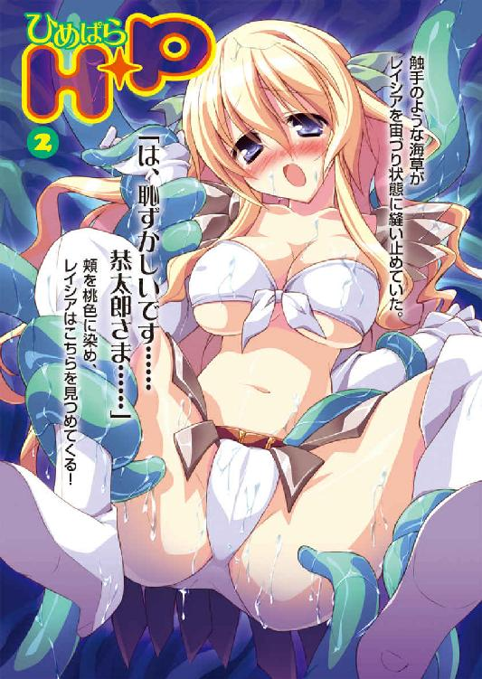
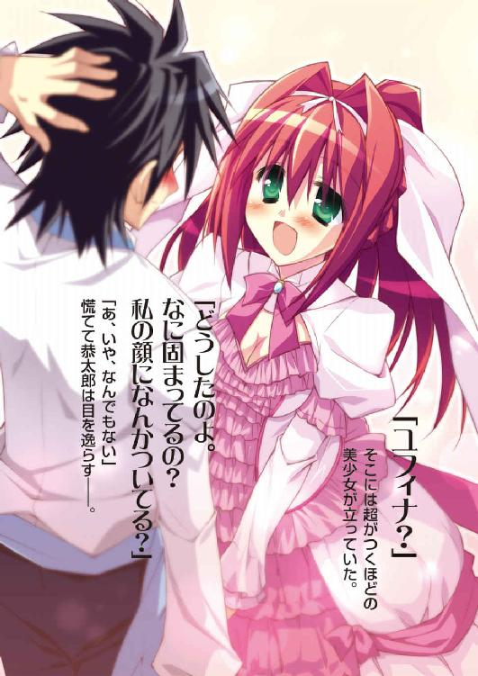
Ｈ＋Ｐ②
―ひめぱら―
風見 周

富士見ファンタジア文庫
本作品の全部または一部を無断で複製、転載、配信、送信したり、ホームページ上に転載することを禁止します。また、本作品の内容を無断で改変、改ざん等を行うことも禁止します。
本作品購入時にご承諾いただいた規約により、有償・無償にかかわらず本作品を第三者に譲渡することはできません。
本作品を示すサムネイルなどのイメージ画像は、再ダウンロード時に予告なく変更される場合があります。
本作品は縦書きでレイアウトされています。
また、ご覧になるリーディングシステムにより、表示の差が認められることがあります。
口絵・本文イラスト ひなた睦月
プロローグ
触手――王女に絡みついた海草の動きは、そうとしか呼べないものだった。
「あっ......。イヤ......っ」
トレクワーズ王国の第二王女、レイシア・ラトゥーイン・トレクワーズの桜色の唇から、恐怖の吐息が漏れる。
王女はビキニみたいな露出度の高い鎧を身につけている。そのため、滑らかな柔肌がむき出しだ。
おなかや腕を舐めるようにヌメヌメと光る海草が這い回った。
しかし、レイシアは逃げ出すことができない。
洞窟の壁面をびっしりと覆っている触手のような海草がレイシアの腕や脚に絡みつき、王女を宙づり状態に縫い止めてしまっているのだ。
両膝を曲げたまま大きく脚を広げたポーズ――いわゆる、Ｍ字開脚状態で。
ミニスカートのような腰回りの装甲板はめくれあがり、むっちりとした内ももだけでなく、純白の水着に包まれた、その間の部分までもが神来恭太郎の眼前に晒されている。
「は、恥ずかしいです......恭太郎さま......」
頬を桃色に染め、涙に潤んだ瞳でレイシアはこちらを見つめてきた。
「す、すまん！」
恭太郎は顔を逸らそうとしたができなかった。彼もまた、触手のごとき海草にがんじがらめにされていたのだ。
まぶたを閉じればいいだけの話なのだが、それすらもできない。
透き通るように白い肌。桜色の唇。優美な丸みを帯びた頬。ふんわりとカールした長い髪。長いまつげと大きな瞳。
レイシアは、見つめただけで魂を奪われてしまいそうなほどに美しいのである。
しかも。
優しくおしとやかで、真面目で控えめな、生まれながらのお姫さまといった空気を纏う美少女であるレイシアは――その雰囲気とは裏腹に極上ボディーの持ち主なのだ。
すんなりと伸びた脚も、可愛らしいおしりも、くびれたウエストも、なにもかもがどんな美術品よりも素晴らしい造形美を誇っている。
なにより素晴らしいのは――その胸。
レイシアはとんでもなく大きな爆乳の持ち主なのだ。
二つの胸はメロン大に隆起しており、今にも胸を覆っている白い布地がはち切れてしまいそうなほどなのである。
しかも、レイシアの肩の震えに合わせてたゆんたゆんと揺れるほどの未曾有の柔らかさを併せ持っていた。
ビキニのように胸を覆う布から大きくはみ出している下チチや横チチの柔らかそうな丸みは、恭太郎の心拍数を急上昇させるのに十分な威力がある。
元いた世界では《カタブツ》だの《朴念仁》だのと呼ばれていた恭太郎ですら、目を離すことができなかった。
あまりにもレイシアは魅力的すぎるのだ。恭太郎を責めるのは酷というものであろう。
――びょるるる!!
音を立てて、無数の海草が胸を覆う布地の中に入り込んでいった。
「ひゃぅ...んっ！」
レイシアは身体を震わせる。恐怖と羞恥心で瞳は涙に潤みきっていた。
王女をいたぶるように緑色の触手は蠢き続ける。ふとももを伝い――腰に巻かれたベルトにも絡みついた。
白い下着のような水着の中に、緑色の触手が侵入していく。
「そ、そっちは......だ...めぇ......！」
レイシアのカラダに巻き付いた海草はヘビのように蠢いて。
ゆっくりと水着を引き裂こうとしはじめた。
「やっ......ぃやぁ......」
涙に濡れた瞳でレイシアは恭太郎を見つめて、懇願してきた。
「お、お願いです......。見ないでくださいませ......。恭太郎さま......」
白い水着に力がかかり、布地の裂ける音が恭太郎の耳にも届いて――......
さて。
少年の名は――神来恭太郎。現代日本に生きる高校二年生だ。
彼がなぜ、このようなとんでもない境遇に陥ったのか。
それを理解するためには、少しばかり時間を遡らねばならない――
第一章 バカンス一週間前は、王宮でムカムカ？
彼我の戦力差は圧倒的と呼べるものだった。
トレクワーズ王国の首都《トレクロ》の東に広がっているアントワープ平原を埋め尽くすように、薄汚れた鎧を纏う騎士の一団が展開しているのだ。
錆び付いた兜の下、白いドクロが興奮したようにガチガチと歯を鳴らしていた。
鎧を纏う骨は明らかに人間のものではない。ドクロには眼窩が三つ開いていたり、鋭い牙や角が生えていたりする。
アントワープ平原を埋め尽くしているのは、魔法によって召還されたスケルトン騎士団。
ある骸骨は手にした木剣を振りかざし、また別のドクロは骨がむき出しの足で大地を踏みならして、興奮したように出撃の合図を待っている。
その数は一万。いや、もっと多いか。神来恭太郎の目には、数十万の大群と言われても頷いてしまうほどの大軍勢に見える。
対峙するのは、たった五人。
しかも、全員がかわいらしい女の子だった。
骸骨の騎士団が襲いかかってきたらひとたまりもない――普通の人なら、そう思うところだろう。
だが、トレクワーズ王国に住む人間なら、誰でも知っている。
全滅するのは、スケルトン騎士団の方である、と。
「突撃じゃ――――っ!!」
骸骨の群れの後方、輿に乗った七～八歳くらいの女の子にしか見えない後宮のヌシ、ピコル師匠が鋭い声を飛ばした。
ガチャガチャガチャガチャ！ ――骨と鎧と木剣を打ち鳴らし、骸骨の一団が恭太郎たちの方へ突進してくる。
ぽっかりと穴が開いているだけの眼窩でこちらを睨み付け、砂埃を舞いあげながら殺到してくるスケルトンの軍勢。
その姿は命を狩る死神の群れのようにも見えて怖気の走るものだったけれど――相対している少女たちに慌てたようすはなかった。
戦闘用の白いドレスに身を包んだ第一王女ユフィナが妹たちを振り返りながら、
「みんな、油断しちゃダメよ」
「ユフィナ姉さまこそ、ようやくお怪我が治ったところなのですから無理なさらないでくださいましね」
おっとりした感じの髪の長い第二王女レイシアが心配げな口調で声を掛ける。
「フン、スケルトンなんかに私の相手は務まりませんわっ！」
豪奢なドリル状の縦ロールを揺らしつつ第三王女エリスがスケルトンの群れを睥睨する。
「メルルもそう思うよー。もっとすごいのがよかったなー」
姉の言葉に同意したのはミニスカートのドレス＆ツインテールの第五王女メルルだ。かわいらしく唇を尖らせてメルルは文句を言う。
「ドラゴンとか、パイロヒドラの方が強くてカッコよくてゼッタイ楽しいのにぃ」
「ド、ドラゴンっ!? そんなのダメです怖すぎますっ。はわわゎゎ......」
第四王女のアルトは妹の言葉に震え上がった。おかっぱにしている黒髪が肩の震えに合わせて揺れる。メガネの下の瞳は涙に潤んでいるようだ。
「アルトは無理しなくていいからね」
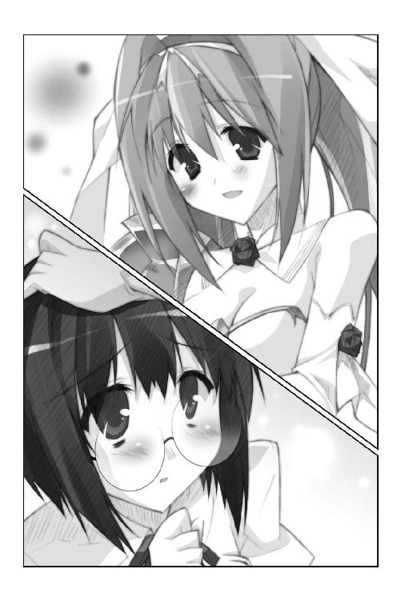
怯える妹を安心させるように頭を撫でてあげながら、ユフィナはエリスとメルルを叱る。
「油断しちゃダメって言ってるでしょ。これは大事な軍事演習なんだから！ この間みたいにカルタギアの軍勢が攻め入って来たって想定で戦うのよ！」
「はーい」「わかってますわっ。手を抜いたりはしませんのっ」
二人の返事に満足げに頷きつつ、第一王女は恭太郎の方を向いた。
「あんたも戦ってね。魔法を使いこなせるようになってもらわなきゃいけないし」
「ああ、頑張るよ......」
腰に差している唯一の私物――朱塗りの木刀の柄を握りしめつつ、後宮の王仕さまである恭太郎は神妙に頷いた。
そもそも、である。
ここウィッチェリア大陸は、女性しか魔法を使えない。
そのため、国家を統治するのも女性なら、戦闘を行うのも女性なのだ。
トレクワーズ王国においても同様、一騎当千の力を持つと言われる彼女たち五人の王女さま――《トレクワーズの五美姫》が国を護っているのである。
ところが。
なぜか、恭太郎は男であるにもかかわらず魔法を使うことができた。
今から一週間ほど前のこととなるのだが、トレクワーズ王国に攻め込んできたカルタギア帝国の軍勢を、彼の魔法によって退けることができたのだ。絶体絶命のピンチに陥っていたユフィナも助けることができたのである。
レイシアは大きな胸の前で手を組み合わせ、眩しそうに目を細めて恭太郎を見つめた。
「恭太郎さまのお力がまた見られるんですね。私、とても楽しみです」
エリスはそっぽを向きながら。メルルはぴょんと跳びはねながら。口々に恭太郎に声を掛けてきた。
「足を引っ張ったら許しませんわよ！」
「えへへ、期待してるよ、恭太郎おにいちゃん！」
姫たちの言葉が、恭太郎の肩に重くのし掛かる。
（うぐ......プレッシャーだな......）
彼は幼い頃から姉によって、厳しい剣術の修行をさせられてきた。だから、剣の腕前を見せてくれと請われたなら、喜んで披露するところだ。でも、魔法の力を見せてくれと言われてもリアクションに困ってしまう。
（ちゃんと【光の剣】が出現してくれればいいんだが......）
「さあ、はじめるわよ！」
戸惑う恭太郎をよそに、ユフィナの鋭い声が響く。
気がつけば、スケルトンの軍勢は五〇メートルほどの距離に近づいてきていた。
魔物に背を向けたまま、ユフィナは腕を横に伸ばした。
「来たれ、【烈炎神剣】！」
ユフィナの腕に巨大な手甲が装着され、続けて炎に包まれた剣が出現する。
振り向きざまに、大剣を一閃！
刀身から炎がほとばしり、スケルトンの群れを吹き飛ばした。
魔法を食らった骸骨は、鎧もろとも光の粒になって消えていく。
『【浮揚】！』
レイシア、エリス、メルルの三人が声を合わせて魔法を唱える。
彼女たちのカラダが空中へと舞い上がった。空を飛んで散開する。
「来たれ、【大海神槍】！」
レイシアの手には、身の丈の二倍はありそうな巨大な槍が出現する。
軽々と巨大槍を振り回し、先端を魔物の群れに向けた。
「【女神落涙】!!」
ヴォン――槍の先端に複雑な模様の魔法陣が輝く。
直後、槍の先端から凄まじい流水が迸った。
骸骨の騎士たちが、津波に呑まれたかのように吹き飛ばされる。
空中でそのようすを見ていたメルルは、むふーっと鼻から息を吐いた。
「メルルも負けないもんっ！ 見ててね、恭太郎おにいちゃん！」
細っこい腕を横に伸ばし、大きな声を張り上げる。
「おいで、【雷神戦斧】！」
少女の手には、身の丈の三倍はあろうかという斧とカナヅチが一緒になったような巨大武器が出現する。
軽々と振り上げて――ぶぅん!!――空中で勢いよく振り下ろした。
「メルルでどーんっ☆」
スケルトン騎士団の頭上に巨大な魔法陣が瞬時に展開し、いかずちの雨が降り注ぐ。
感電した骸骨は蒸発するかのように、光の粒となって鎧ごと消え去る。
「メルル、私の分も残しておきなさいっ！ やりすぎですわっ！」
遥か上空、巨大な鎌を手にしたエリスがもう片方の手を腰に当てて怒鳴った。
「この私が目立たないじゃないですのっ！」
文句を言いつつも、エリスは巨大な鎌を振り回す。
「【死女神の舞曲】！」
鎌の軌跡に沿って無数の魔法陣が展開――紫色に輝く衝撃波のようなものが放射状に発射される。
スケルトンの騎士は盾をあげて衝撃波を避けようとした。だが、紫色の衝撃波は盾ごと骸骨を切り裂いていく。
「いつ見ても凄まじい力だ......。未だに現実とは思えないよ......」
恭太郎は思わず感嘆の声を漏らしてしまった。
四人のお姫さまが一撃ずつ。たった四回の攻撃だけで、草原を埋め尽くすほどだったスケルトン騎士団の大半を退けたのだ。残るは残党だけである。
「はぁ......みんなすごいなぁ......」
恭太郎と一緒に演習を見ていたアルトが、小声で呟く。
ため息混じりの声には、どことなく寂しげな響きが含まれているように聞こえた。
「私もあれぐらい魔法が使えたらよかったのに......」
第四王女は悲しげにうつむいてしまう。強大な魔力を持つ王族でありながら、彼女はなぜか力が弱いのだ。そのため、お世継ぎづくりに参加してはならないと言われてもいる。
アルトが今にも泣き出してしまいそうに見えて、恭太郎は声を掛けてあげようとした。
なんと言ってあげていいかわからないが......泣きそうな女の子を放っておくことなんてできない。恭太郎は、そういう男なのである。
しょんぼりと肩を落とすアルトの方へ向き直った――そのときだ。
「恭太郎!! そっちに行ったわよ!!」
ユフィナの声が聞こえた。
姫たちの猛攻をかいくぐった一体のスケルトンが、木剣を振りかざして迫ってくる。
「魔法つかってみせてよー！」
空中から、メルルの応援が降ってくる。
レイシアとエリスも攻撃の手を止めて、こちらを見つめている。
よしっ、やってやる！ ――恭太郎は武器を持たないまま、中段の構えをとった。
見えない木刀を握りしめるように力を込め、精神を両手に集中させる。
恭太郎が使える魔法は【光の剣】と呼ばれるものらしい。
拳から光り輝く剣が出現し、閃光が敵を切り裂くのだ！
（さあ、出てこい!!）
迫り来る骸骨騎士を睨み付け、気合いを発する。
「は――ッ!!」
ところが。
「............って、あれ？」
手にはなにも出現しなかった。閃光どころかケムリ一つあがらない。
「た――ッ！ や――ッ！ とりゃ――ッ！」
とりあえず、手当たり次第に気合いを入れてみるがウンともスンとも言わなかった。
その間にもスケルトンはみるみる近づいてきて――ごすっ！
「ぐぼあっ!?」
木剣で思い切り殴られた。
幼少時代から実の姉に特訓と称して木刀で殴られまくった。だから、打撃には慣れているのだが......痛いものは痛いって!!
「やめっ、痛いからっ！ ぼあっ!?」
両足を薙ぐような攻撃を受けて、恭太郎は無様にひっくり返ってしまう。
意志を持たないロボットのように、スケルトンは倒れた恭太郎を目掛けて黙々と木剣を振り下ろし続ける。
「痛っ！ ちょっ、待ってくれ！ ごあっ!? ぼあっ!?」
木刀を抜くヒマもない。徒手空拳では攻撃を受け止めることもできず、顔や頭を庇うので精一杯。恭太郎はなす術なくボコボコにされてしまった。
「きょ......恭太郎さまから離れなさーいっ！」
恐怖を堪えるようにギュッと目を閉じて、アルトが叫んだ。
両手を前に突き出すと、空中に小さな弓矢が出現する。
「え......【えんじぇる・ふぃーと】！」
アルトの声に合わせて複数の矢が放たれる。
矢を浴びたスケルトンは光の粒になって弾け飛び、大地に解けるように消え去った。
「だ、大丈夫ですか、恭太郎さま......」
「あ、ああ......、助かったよ......」
アルトが震える手を差し伸べてきた。その手を掴んで恭太郎は立ち上がる。
「なにやってんのよ、恭太郎」
呆れたようなユフィナの声が背中に突き刺さった。軽蔑したようなジトーっとした瞳で恭太郎を睨んで、
「訓練だからって遊んでるんじゃないでしょうね？」
「そ、そんなつもりはないんだが......」
スケルトン騎士団を掃討し終えた姫たちも地上に降り立った。
うわ、三人とも微妙な表情してるよ......。
「恭太郎おにいちゃん、格好悪～ぃ......」
「うう......」
「スケルトン如きも倒せないなんて、最低ですわね！ そんなことで私の相手が務まると思ってますの？」
「ううううぅ......」
「二人とも、そんなことを言ってはダメですよ。今日は調子が悪かっただけですよね、恭太郎さま」
レイシアがフォローをしてくれたが、むしろ気が重くなる一方だった。穴があったら入りたい気分だよ......。
実を言えば。
恭太郎が魔法を使うことができたのは、一度きり。カルタギア帝国の軍隊を退けた時だけだったのだ。それ以来、一度も【光の剣】は出現していない。
実戦形式の戦闘訓練だったら現れるのではないかと期待したのだが......結果はご覧の有様。
（くそっ、どうして魔法が使えないんだよ......。あれはマグレだったのか？）
「ふははは！ 相変わらずのヘタレっぷりじゃのう、恭太郎！」
甲高い子どもっぽい声で嘲笑われた。顔を見なくてもわかる。後宮のヌシであるピコル師匠が笑ってるんだ。
「さすが《トレクワーズの五美姫》。素晴らしいお力でございます。感服いたしました」
馬の引く輿から降りて、ピコルは恭しく礼をした。
「それに引き替え、不甲斐ないヤツじゃ！」
恭太郎の方を向き直り、見下したように睨め付けてくる。
足下まであるふんわりとした長い銀髪。ぷっくりしたピンク色のほっぺ。細っこい手足。凹凸の少ないペタンコな身体。背の高さは恭太郎の腰ぐらい。せいぜい七～八歳ほどにしか見えない。
だが、演習のためのスケルトン騎士団を召喚したのは彼女だ。
姫たちと同じように、ピコルもまた凄まじい魔力を持っているのである。
「スケルトン騎士団は数多く召喚できるが、個々の力は弱い。兵力としては役に立たぬ。一体だけならトレクロに住んでおる一般市民のおなごでも倒せるじゃろう。そんなスケルトンにボコボコにされるとは......」
芝居がかったような動作で、後宮のヌシは肩を竦めて見せた。
「魔法が使えたとはいえ、恭太郎は所詮男じゃな。やはり女には敵わぬのぅ」
「............」
恭太郎は唇を噛んだ。事実だけに反論ができない。
「だがまあ、それで構わぬのじゃ。恭太郎を戦わせようなどとは思っておらぬ。重要なのは、おぬしが男であるにもかかわらず魔法を使える――それほどにずば抜けて魔力が高いというコトだけじゃからな」
「どういう意味だよ、それは」
「女王さまが作られた《大結界》があれば、さしあたり平和は保たれておる。仮に敵が侵入してきても、お姫さまがたが撃退してくださるじゃろう。おぬしがすべきことは一つだけじゃ！」
ズビシっ――ピコルは教鞭で恭太郎を指して叫んだ。
「おぬしはお世継ぎづくりだけを考えておればいいのじゃーっ！ 恭太郎は、そのためだけに召喚された《王仕さま》なのじゃからなっ！ ふゥははははは――っ!!」
アントワープ平原に響き渡ったピコル師匠の高笑いを、恭太郎は空しい気分で聞いた。
《王仕さま》とは、お世継ぎづくりのために後宮に入れられる少年たちのことを指す。恭太郎はトレクワーズ王国の後宮に入れられた、唯一の王仕さまなのだ。
トレクワーズ王国は、女王の強大な魔力によって作られた《大結界》によって平和が保たれている。だが、女王さまが奇病に冒されてしまったため、五人の王女のうちの誰かが王位を継がねばならなくなった。
王座を譲るには《お世継ぎをつくっていること》が絶対条件。そこで、王女たちのために急遽後宮が作られることとなり、王国全土より魔力を持つ適齢期の少年たちが集められた。
その数――二〇〇〇人。
王仕たちの中から、お姫さまたちは気に入った相手を見つけ、最初にお世継ぎを作った王女が女王として即位するはずであった。
ところが。
敵国であるカルタギア帝国によって、ほぼ全ての王仕が誘拐されてしまったのだ。
このままでは王位継承は不可能。もし女王が崩御すれば《大結界》が破れ、敵国の侵入を許してしまうこととなるだろう。
王国存亡の危機に瀕した王女たちの最後の希望こそが――彼だ。
《お世継ぎづくりに最も適した王仕さま》を魔法によって召喚したところ現れたのが、現代日本に生きていた高校二年生、神来恭太郎なのである。
恭太郎に求められているのは、魔法によって敵を倒すことでも、ましてや剣術の腕前を披露することでもない。
お世継ぎをつくること――ぶっちゃけた言い方をしてしまえば、お姫さまたちとえっちすること。ただ、それだけ。
「もしてーこくが攻めてきても、メルルが守ってあげるよっ♪」
元気な声でそう言って、メルルが恭太郎の腕に抱きついてきた。
「ちょっ、メルルちゃん！」
戦闘用のドレス越しに膨らみかけの胸の感触がしてドキッとしてしまう。
「その通りです。恭太郎さまには指一本触れさせません。ですから、安心してお世継ぎづくりに励んでくださいましね」
レイシアがもう片方の腕を抱きしめてきた。
もにゅにょんっ――恭太郎の二の腕が爆乳に挟まれる。
うわっ、なんという気持ちいい感触......って感動してる場合かっ。
「は、放してくれよ、レイシアっ。むむむ、胸が当たってるって」
「フン、なにをグダグダやってますの？ 私は早くお城に帰りたいですわっ。すっかり汚れてしまいましたの。汗もかいてしまいましたし......」
エリスのイライラしたような言葉を受けて、末っ子の姫さまが楽しげに提案する。
「だったら、みんなでお風呂に入ろうよっ！ メルルが背中流してあげる」
「まあ、それは素晴らしいアイデアです。戦闘訓練の後で一緒に入浴すれば仲も深まるというものですねっ」
「お風呂ですって!? ふ、二人に出し抜かれるわけにはいきませんわっ！ 恭太郎、私とも一緒に入るのですっ！ これは命令ですのっ！」
「それはいい。存分に恭太郎を興奮させなされ。そうすればこやつは、ケダモノと化して襲いかかってくるに違いありませんのじゃっ！」
「勝手に話を進めるなっ！ 俺は一緒にお風呂なんて入りたくないんだって！」
「こら、恭太郎！ なに鼻の下伸ばしてるのよ！ さっさと妹たちから離れなさいっ！ えっちなのはダメなんだからね！」
「はわわわわわゎゎゎ............」
お世継ぎづくりに積極的な三人の姫に振り回されて。
ピコルはさまざまな策を巡らせては、火に油を注ぎまくって。
アルトは恥ずかしそうに顔を覆っていて。
ユフィナには理不尽に怒られて。
魔法が使えるとわかった今でも、恭太郎は相変わらずの王仕さま生活を送っているのだった。
ただ一つ、変わった点があるとすれば、それは――。
×××
「ふんっ！ ふんっ！ ふんっ！ ふんっ！ ふんっ！ ふんっ！ ふんっ！」
夕刻。トレクワーズ王国。後宮。
木立の広がる後宮の裏手で、恭太郎は一心不乱に木刀の素振りをしていた。
朝夕の素振りを幼い頃から日課にしているということもあるのだが......それ以上に『精神を落ち着けるため』という意味合いも大きい。
思わず動揺してしまうような出来事があったのだ。
戦闘訓練の後で、レイシア、エリス、メルルの三人のお姫さまと、お風呂に入ることとなってしまったのである。
恭太郎は元々暮らしていた現代日本のクラスメイトには《カタブツ侍少年》だの《朴念仁》だのと呼ばれていた。
自分で言うのもなんだが貞操観念の強い、身持ちの堅い男なのだ。
しかし、悲しいかな恭太郎とて高校二年生の男子。
女の子とお風呂に入るなんてコトになれば胸が高鳴ってしまうに決まっている。
ましてや相手は絶世の美少女となれば、そのドキドキ感たるや計り知れないだろう。
カタブツの恭太郎とて、いつリミッターが外れてケダモノ化してしまうかわからない。
断固として『一緒に入浴するなんてイヤだー！』と言い張った。
ところが、「断れば死刑ですわ！」「お願いします。これも愛する国民の安寧のためなのです......」「えぅぅ......おにいちゃんはメルルがきらいなのぉ？」と三者三様の言い方でゴリ押しされてしまったのだ。
だから、恭太郎は一計を案じた。
『せめて目隠しをつけさせてくれ』とお願いしてみたのである。
（嫁入り前の女の子のハダカを見てしまうなんて言語同断だ。だが、なにも見えなければ姉上も許してくれるのではなかろうか！）
うむ。これは我ながらいいアイデアだ。
そんなワケで、恭太郎は目隠しをつけて入浴することとなったのだが――
結論から言おう。
ハッキリ言って、逆効果だったんだよね、これが......。
目隠しをしているから、浴場では常に手探り状態となる。
だから、湯船の中で少し動こうとしただけで――もにゅん
ものすごく柔らかいものが手に触れたー!?
「あっ、そんなっ、いきなりダイタンすぎますっ」
「すすすす、すまんっ、レイシアっ！」
慌てて謝りながら後ずさりしようとしたら――ぷにんっ
またもや指先に胸とは違う柔らかなぷにぷにした感触が！
「ひゃんっ そんなとこ触るなんて、おにいちゃんのえっちぃ！」
「ごめんね、メルルちゃん......っていうか、俺はなにを触ってしまったんだ!?」
「やん、そんなイジっちゃらめぇっ！ メルル、壊れちゃうよぉっ！ あっ」
「その反応はなんなんだーっ!?」
慌てふためく恭太郎を射貫くようにエリスの声が浴室に響いた。
「調べたところによれば、お世継ぎをつくる前には、殿方がカラダを触るそうですわっ。レイシアとメルルばかり触るなんてズルイですのっ！」
「それとこれとは別だろっ！」
「問答無用っ！ 恭太郎！ この私も触るのですっ！ ......あ、勘違いしないでくださいましね、あくまでこれは王位を継ぎたいからするんであって、」
言い訳がましく付け加えながら、湯船の中でエリスがカラダを密着させてきて！
カラダのどの部分が当たっているのかわからないけれど――むにゅんもにゅん
柔らかくて、張りがあって、すべすべで、温かい。ずっとずっと触っていたくなるようななにかが押し当てられまくって！
見えないから、余計に妄想が掻き立てられちゃって!!
終いには『これは不可抗力だ。うっかり揉んじゃったとしても俺は悪くない。見えないんだから仕方ないだろ？ だから、もっと触っちゃえよ......！』なぁんて悪魔の囁きが聞こえてきて――
「煩悩退散！ 心頭滅却！ 安心立命！ 悪鬼覆滅！ ふんふんふんふーんっ!!」
恭太郎は浴場を飛び出し、一目散に逃げ出した。
そして、後宮の裏庭で素振りの鬼と化したというワケである。
修行が足りないぞ、神来恭太郎！ ――朱塗りの木刀を振りながら自らを叱咤する。
欲望に負けそうになるとは何事だ！ 恥を知れ恥をっ！ なんのために、ココにいると決めたんだっ！ お世継ぎをつくるためじゃないだろうっ!?
後宮に入れられた当初、恭太郎は早く元の世界に帰りたいと願っていた。
でも、今はそうは思っていない。自らの意志でトレクワーズ王国に留まろうと決めたのである。
「精が出るわね、恭太郎」
ふいに、後ろから声を掛けられた。
「ユフィナ？」
そこにいたのは第一王女だった。
近衛騎士団の団長も兼務しているユフィナは、普段は動きやすい格好をしていることが多い。騎士たちと共に教練を行うため、体操服＆ブルマなんて服装で王城を歩いている姿も見たことがあるほどだ。
だが、王女としての公務があったのだろうか――今は華やかな白いドレスに身を包み、髪も綺麗に結い上げていた。
ユフィナは超がつくほどの美少女だ。
小ぶりな顔立ち。透き通るように白い肌。意志の強そうな大きな瞳。ほどよく通った鼻筋。桜色の唇。一つに束ねられた腰まである長い艶髪――全てのパーツが完璧だ。
それに加えて、プロポーションも素晴らしい。
形の良い豊かすぎる胸。くびれたウエスト。綺麗な長い脚――お姫さまを廃業してもモデルとして生きていくことができるだろう。
キョトンとした表情で、ユフィナは恭太郎の顔の前で手を振った。
「どうしたのよ。なに固まってるの？ 私の顔になんかついてる？」
「あ、いや、なんでもない」
慌てて目を逸らす。女の子をジッと見つめるのも失礼だろう。
「ヘンなの。......ねえねえ、ちょっと、それ貸してよ」
小さく笑いながら、ユフィナは恭太郎の手から木刀を奪った。
「えいっ！」
恭太郎をマネるように木刀を上段に構え、勢いよく振り下ろした。
かなり鋭く振り抜いたにもかかわらず、カラダの軸が全くブレていない。
見事な太刀筋だな。さすがは剣の使い手というべきか。
「ありがと。結構重いのね、これ」
柄を恭太郎の方へ向けて、ユフィナは木刀を差し出してくる。
「この木刀であんなに素振りしても平然としてるなんて......あんた、ヘナチョコに見えても鍛えてるんだ」
「って、ヘナチョコは余計だろ。子どもの頃から毎日繰り返してるんだ。もう重さなんて感じない。カラダの一部みたいなもんだよ」
「すごく真剣に素振りしてたもんね」
――いや、さっきのは頭の中に浮かんだ悪しき煩悩を掻き消そうとしていただけだ。
そう答えようと思ったが、すんでのところで飲み込んだ。ヘタなコトを言えば、「このドヘンタイ！」とか叫びつつ大剣でブン殴られかねないろう。
ユフィナは恭太郎の顔を覗き込んで、
「あのね、いいこと教えたげる。実は、魔法も同じなのよ」
「ん？ なにが言いたいんだ？」
「私も妹たちも、ウィッチェリア大陸では一騎当千の力を持った魔法使いだって言われてる。カルタギア軍が何千人攻めて来ようと追い払う自信があるわ」
バツが悪そうに「この間はちょっぴりピンチになっちゃったけどね」と付け加えつつ、ユフィナは続ける。
「でもね、その力はすぐに身に付いたんじゃないの。ちっちゃい頃から懸命に訓練をして、すこ～しずつ磨いていったのよ。恭太郎の剣術と同じようにね」
ようやくユフィナがなにを言わんとしているのかが理解できた。
「ありがとう。俺を慰めてくれてるんだな」
魔法を使うことができず、スケルトンにボコボコにされてしまった。無様な姿を晒す羽目になったのだ。少なからず恭太郎は、ショックを受けていたのだが......。
（きっと、ユフィナはそんな俺を気遣ってくれたんだろうな）
コイツは口が悪くて、乱暴で、すぐ殴りかかってくるけど......本当はお姫さまらしい優しい女の子なんだよ。
ちょっぴり感動してしまった恭太郎だったが、ユフィナは「こ、この無礼者っ！」と怒鳴った。なぜだろう。頬がちょっぴり赤くなっている。
「そ、そんなワケないでしょうっ!? あんたみたいなドヘンタイを気遣ったりするわけがないじゃない！ 私はあんたをバカにしに来たのよっ！」
ズビシっ――恭太郎を指さして、
「あんた、こう言ったわよね。『私がガイルーンさまに会えるまで、この国を守る。降りかかる火の粉は俺が払ってやるー』って」
彼女の言う通りだ――恭太郎は頷いた。
俺は元の世界に戻りたいと思っていた。
だけど今では、それ以上にユフィナたちを救ってやりたいと思ってる。
異世界から呼び出した見ず知らずの男と世継ぎをつくろうと考えるなんて、生半可な覚悟ではできないだろう。王女たちはそれほどまでに追いつめられているんだ。
困っている人たちを放っておくことなんて、俺にはできない。できることなら、助けてあげたい。ただし、お世継ぎをつくる以外の方法で、だけどな。
そんなとき、俺は強い魔法が使えること。そして、ユフィナがガイルーンに憧れていることを知った。
ガイルーンってのは、トレクワーズ王国を救った救国の英雄。歴史上唯一存在した男の魔法使いだそうだ。
だから、ユフィナに約束したんだ。
ユフィナの恋を応援してやるって。
ガイルーンとの間にお世継ぎができれば、ユフィナは女王として即位できる。
病に臥せる現女王には無理だが、新女王となったユフィナに頼めば俺も元の世界に帰れるだろう。
全てが丸く収まるってワケだ。
恭太郎を指さしたまま、ユフィナはせせら笑った。
「あんな大口叩いたクセになによっ！ ちっとも魔法が使えてないじゃないっ！ スケルトンにボッコボコ殴られちゃってる恭太郎、すごく格好悪かったわよっ！ 今思い出しても笑えるわ、あはははは！」
「うるさい笑うなっ。俺だって好きでやられたワケじゃないんだ。自分でもどうやって【光の剣】を出したかわからないんだから仕方ないだろっ」
「わからなかったら聞けばいいじゃない。ウィッチェリア大陸でも有数の魔法使いが目の前にいるんだからっ」
偉そうに胸を張って、ユフィナはわざとらしくエヘンと咳払いをする。
が、すぐに恥ずかしそうに舌を出して照れ隠しした。
「えへへ、なんちゃって」
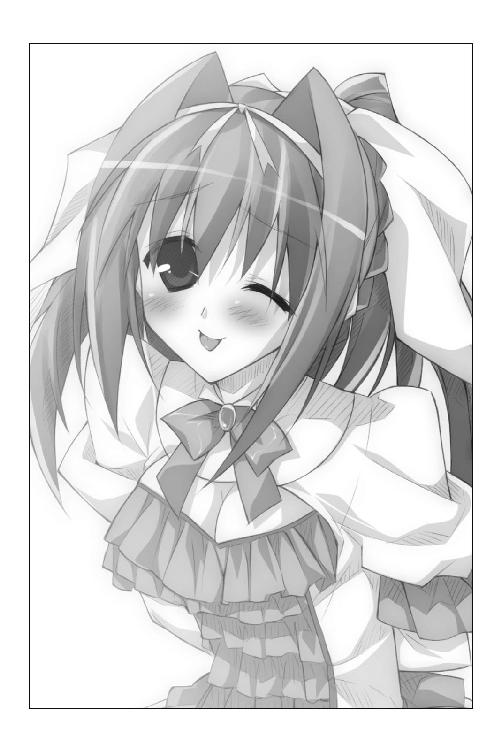
第一王女は恭太郎に近づいてきた。
「ちょっと魔法の練習してみましょ。と、その前に、魔法について教えてあげるわ」
ピコル師匠が教鞭を振りかざすみたいにピッと人差し指を立てて、ユフィナは続ける。
「私たちの使う魔法はね、大陸に住まう女神さまたちのお力を借りてるの」
「女神さまたち......ってことは、複数いるってことか？」
「そうよ。ありとあらゆる神さまがいるわ。そんな女神さまたちのどれか一柱の《審判》を受けるの。審判をクリアすれば《祝福》が与えられて魔法が使えるようになるの」
「......まったく意味がわからん」
「えーっと......たくさんいる女神さまのうち、誰かお一人と仲良くなると、そのお力を借りられるようになるって感じかな。私は、炎の女神であるシャリアさまの祝福を与えられてるわ」
「なるほど。少しだけわかった気がする......」
トレクワーズの姫たちは、それぞれが異なったタイプの魔法を使っている。
例えば、レイシアは水。メルルは雷といった具合に。
その差は力を借りている女神が違うから生じているんだろう。たぶん。
「で、俺はどんな女神さまの――祝福だっけ？ ――を与えられてるんだ？」
「わかんない」
「は？ なんだよ、それ」
「基本的に女性しか女神さまの審判を受けられないはずなの。当然、祝福も女の人にしか与えられないはずよ」
「だから、女しか魔法が使えないんだよな」
「そ。でも、ガイルーンさまや恭太郎は、なんでか男なのに魔法が使えるのよね」
各国の支配者がこぞってガイルーンの魔法の秘密を調査しようとしたのだと、ユフィナは教えてくれた。
当然だろうな。男も魔法を使えるようになれば兵力は倍増するんだ。この世界の勢力図を塗り替えることができるだろう。
「だけど、ガイルーンさまが魔法を使える理由は誰にもわからなかったわ」
ふいに、ユフィナは遠い目をした。昔を懐かしむような、それでいて少しだけ切なげな表情になる。
なぜだかわからないけれど――彼女の顔を見ていたら、微かにココロが軋んだ。
「ちっちゃい頃、ガイルーンさまに会った時に聞いてみたことがあるわ。『どうして魔法が使えるの？』って。そしたら、こんな風に答えたの。『強く願えば、女神は誰にでも力を貸してくれるんだ』ってね。願ったぐらいで魔法が使えるようになるなら苦労しないわよね～......って、恭太郎？ 聞いてる？」
「......え、ああ。聞いてるよ......」
「ガイルーンさまが魔法を使える理由はわからないわ」
喋りながら、ユフィナは恭太郎の後ろに回り込んできた。
「でも、少なくとも女神さまのお力を借りてるってコトには違いはないの。だから、魔法の使い方は私たちと同じはずよ。以上で講義は終わりっ！ 後は練習あるのみよ！」
背中に抱きつくみたいに、ユフィナはくっついてくる。
「はい、右手を前に突き出して！」
後ろから恭太郎の肘の辺りに手を添えて、腕を前に押してくる。
「お、おい、ユフィナっ」
「手を広げてー！ 背筋を伸ばしてー！ 精神を集中するー！」
「ちょ、ちょっと、背中に――！」
背中に、とんでもなく柔らかいものが押し当てられる。ユフィナは胸がかなり大きい。当然、柔らかさも比類無いなぁ――って、なにを感動してるんだ、俺はっ。
「も、もう少し離れてくれよっ！」
「無駄口叩かないのっ！ 精神を集中すると、女神さまの力が手に集まってくるのを感じるでしょ？ 感じない？ おかしいなあ......」
べ......別のものを感じてるんだよ！ 精神集中なんてできるかぁっ！
せっかく魔法を教えてもらっているというのに、恭太郎はドギマギしっぱなしだった。
×××
神来恭太郎は、相変わらずの後宮生活を送っている。
だが、変化があるとすれば――ユフィナとの関係だろう。
彼女の恋を応援すると決めて以来、二人だけでナイショの会話をすることが増えていたのである。
王宮には、そんな二人を好ましく思わない者も存在した――
×××
「まったく！ 恭太郎ったらどこに行ったのかしら......！」
カッカッとヒールを鳴らしながら、エリスは後宮の廊下を大またで歩いていた。眉とまなじりはつり上がり、頬は引きつりまくっている。
表情が示す通り、第三王女はこれ以上無いってくらいにムカついていた。
この私が恥ずかしさを堪えて一緒にお風呂に入ってあげたというのに！ 目隠しを要求するってどういう了見ですのっ!? 私のハダカなんて見たくないってコト!?
しかも、最後には悲鳴をあげて逃げ出すなんて言語道断ですわ！ この私のプライドが許しませんの！
私はエリス・レムリス・トレクワーズ......国民ならば誰もが憧れる存在ですのよッ！ それなのに！ そーれーなーのーにーっ！
「王仕でなかったら死刑にしているところですわっ！ 裁切りの鎌で八つ裂きですのっ！ すぐ楽にはさせてあげませんわ！ ゆ～っくりといたぶってさしあげますのっ！」
それぐらいにムカついているのに。
「どこにいるんですの、恭太郎～っ！」
そのムカつく王仕を捜さねばならないコトがエリスの怒りを増幅させる。
お世継ぎをつくるためには、どうしても彼が必要なのだ。
なにをどーすればお世継ぎができるのか、まだイマイチわかってないけれど......。
フン、恭太郎を興奮させれば、後は自然になんとかなるらしいですわ！
それだけわかれば、十分ですのっ！ なんせ私は幼い頃より天才と呼ばれ、辺境地域にその名を轟かせていたエリス・レムリス・トレクワーズですものっ！
と、後宮の廊下の窓に奇妙な動物がへばりついているのに気付いた。
白くてずんぐりとした耳の長いケモノ――トレクワーズではペットとして人気のあるトビカピバラだ。窓の桟に肉球を引っかけて、器用に裏庭を覗き込んでいる。
「う～ん、恭太郎はユフィナさま狙いなのかな？ ハードル高いと思うけどなあ......。まあ、いいや。早くえっちなコトはじめてくれよ～。ふしししっ」
喋るトビカピバラなんて、エリスには心当たりが一つしかなかった。
敵国に攻め入られた際に魔法を受けてトビカピバラに姿を変えられてしまった王仕候補の少年だ。
「アレスタ。なにをしているんですの？」
逃げ出さないように、後ろから長い耳をむんずと掴んでやる。
「ぎゃー！ エリスさまー!?」
この世の終わりみたいに顔を歪めてトビカピバラは叫んだ。人の顔を見て叫ぶなんて失礼なヤツだ。
アレスタはトビカピバラに変わってしまったのを良いことに、女官の更衣室や寝室に忍び込みまくっているえっちな男なのである。
だいたい、男って言うのは、ろくでもない存在なのだ。
私の機嫌ばかりうかがっててヒクツだし。そのくせ、魔法も使えないクセに不埒なコトばかりしでかそうとするし。
鎖にでも繋いでドレイ扱いするのがいいんじゃないかと、エリスは思っている。
「よからぬコトを考えているんではないでしょうね、このエロカピバラっ！」
「ちちち、違いますよ！ 後宮のセンパイとして後輩を見守ってただけですっ！」
「後輩......？」アレスタにならって、窓の外を見てみる。エリスは自分の頬が思いっきり引きつるのを感じた。
「恭太郎っ？ それに......ユフィナお姉さまっ!? どうして、二人が一緒にいるんですのっ!?」
「わーっ、耳を引っ張らないでくださいー！ どうしてって言われても僕は知りませんよ！ ここんとこ、しょっちゅう二人で喋ってるんですよー！」
「しょっちゅう、ですって!? どういうコトですのっ!?」
「知りませんってばー！ あばばば、耳をつかんで揺さぶらないでー！ 耳がもげちゃうからー！」
そのとき、後ろからノンビリした声が掛けられた。
「あ、エリスおねえちゃーんっ。恭太郎おにいちゃん、見つかったー？」
頭に焦げ茶色のトビカピバラを乗せたメルルが、レイシアと一緒に歩いてきた。ちなみに、このカピバラは正真正銘のトビカピバラでメルルのペットだ。名前をミルンという――って今はそんなコト、どーでもよくて！
「まあ、恭太郎さまとユフィナ姉さまっ。仲睦まじいですね」
窓の外を眺めたレイシアがうれしそうに笑った。
メルルも一緒になって歓声をあげる。
「わあ、ホントだー。あんなにくっついて魔法の練習してるーっ」
「二人とも！ なにをのんきなコトを言ってますのっ!?」
「ぎゃー！ 耳引っ張らないで！ 死んじゃう！ 死んじゃう！ トビカピバラは耳がもげると死んじゃうんですよ！」
「お黙り、エロカピバラっ！」エリスはアレスタの耳を掴んだまま、レイシアに詰め寄った。
「このままではユフィナ姉さまがお世継ぎをつくってしまいますわっ！」
「素晴らしいことだと思います。お姉さまが女王となれば、この国は安泰です」
「で、でもっ、レイシアはあんなに恭太郎とお世継ぎをつくろうとしているじゃない！ 先を越されてもいいんですのっ？」
「私は王国が危機を脱してくれれば、誰が女王となっても構わないと思っていますから......なにかおかしいですか？」
花が咲いたような柔らかな笑みを浮かべて、レイシアは首を傾げる。
「そ、それじゃ、レイシアは......」
気恥ずかしい質問だったので、少しだけ声がうわずってしまった。エリスは言葉を詰まらせながら問いかける。
「恭太郎のコトが......その......男性として好きではないんですの？ お世継ぎづくりに励んでいるのは、そーゆー理由かと思っていましたわ」
顎に拳をつけて、レイシアは考え込むようなポーズを取る。
「うーん......。恭太郎さまは勇敢で、一生懸命で、男らしくて......とても素敵な殿方です。でも、男性として好きかと言われると、ちょっと違うかと思います」
思いのほかきっぱりと言い切った。この双子の姉は真に国家のためだけにお世継ぎをつくろうとしているのだ。
「メルルは恭太郎おにいちゃんのコト、大好きだよっ♪ みんなの旦那さまだしねっ」
頭にカピバラを乗せたまま、末の妹はくるんと回った。ミニスカートのドレスがふわりと翻る。
「ユフィナおねえちゃんも、レイシアおねえちゃんも、エリスおねえちゃんも、アルトおねえちゃんも、女王陛下も、ミルンも、お城のみんなも、街のひとたちも――みんなみ～～～んな大好きっ」
「メルルさま、メルルさまっ、僕はっ？ 僕はっ？」
「もっちろん、アレスタくんも好きだよ」
「やっふー！ じゃあ、今晩一緒にお風呂入ってくださ～～いっ！」
「お黙り、アレスタっ！」
「ぎゃあぁあっ！ 耳つかんで振り回さないで！ 目が回る～～っ!?」
「そういうエリスはどうなんですか？」
大きな胸の前で手を組み合わせたレイシアは、ちょっぴり頬を染めた。
「ひょっとして......恭太郎さまに恋をしているんですか？」
「エリスおねえちゃんも恭太郎おにいちゃんが好きなんだー！」
「そんなわけないでしょうっ！ あんな男、好きになるはずがありませんわ！」
家柄も釣り合わないし、ナマイキだし、無礼だし、そもそも別世界の男だし！
「私がお世継ぎをつくりたいのは王位を継ぎたいから――それだけが理由ですの！ お世継ぎが必要でなかったら歯牙にも掛けませんわっ！」
と、窓の外でユフィナが叫ぶ声が聞こえた。
「こら、恭太郎っ！ 胸が当たってたなら早く言いなさいよねっ！」
「言ったら怒るだろっ!?」
「言わない方が怒るわよっ！ せっかく魔法の使い方教えてあげてたのに......許さないからねっ！」
ユフィナが手を横に伸ばして叫ぶ。
「来たれ、【烈炎神剣】！」
「って、いちいち魔法を使うなっ！」
「手本を見せてあげてるのよっ！ こら、待ちなさーいっ！」
逃げる恭太郎を、炎の大剣を手にしたユフィナが追いかけはじめる。
「うにゅー、ケンカになっちゃったよぉ。どうしよう......」
ミルンを抱きしめて、メルルが泣きそうな顔をする。しかし、レイシアは「うふふ」と笑って、妹の頭を撫でた。
「大丈夫ですよ。ケンカするほど仲がいいとも言いますし。それに、ほら。お姉さまも手加減なさってるようです」
「あ、ホントだ。【烈炎神剣】から噴き上がってる炎も少ないね」
「恭太郎さまと最初に...その...そーゆー関係になるのはユフィナ姉さまかもしれませんね。私も負けないように頑張らなくてはっ」
「メルルも頑張るよー！」
むかっ――エリスはこめかみに血管が浮くのを感じた。
「フン、不愉快ですわっ」
アレスタを壁に向かって投げつけて、エリスはその場を後にする。「もぎゅらばっ!?」というトビカピバラの悲鳴が聞こえてくるが、そんなことはどうでもいい。
仲がよさそうな恭太郎とユフィナ姉さまを見ていたら、いてもたってもいられなくなったのだ。
エリスはお世継ぎづくりについて自分なりに勉強している。役に立ちそうな情報をコッソリと書き込んでいるメモ帳――《エリスさまのマル秘メモ》と呼んでいる――も、二冊目に突入した。
メモにはこんな風に書いてある。『男女の仲が深まるとお世継ぎづくりは円滑に進む』と。恋仲になった二人は自然にお世継ぎづくりをするそうなのだ。それが自然の摂理らしい。
「ユフィナ姉さまと恭太郎の仲が深まったら、先を越されてしまいますわ......」
王位継承権はお世継ぎを産んだ順番に与えられる。誰よりも早くお世継ぎをつくらなくてはならないのに......。
そうですわっ、私も恭太郎と深い仲になれば――！
「そんなのあり得ませんのっ」
エリスはすぐに首を横に振る。
恭太郎なんて大嫌いだし。あの男も私を嫌っているようだし......。
ああもう、どうしたらいいんですの......？
「お困りのようですのぅ、エリスさま」
突然、子どもっぽい声が聞こえた。後宮のヌシであるピコルが慇懃に礼をしてくる。
エリスは思わず身構えた。彼女のコトがちょっぴり苦手なのだ。
お世継ぎづくりに精通しているのでアドバイスを求めたいところだけど、口を開けばすぐにハダカになってどーのこーのとか恥ずかしいコトを言い出すし。
「な、なにか用ですの？」
「このピコルめに考えがありますのじゃ。エリスさまにぴったりの策が......」
「............。聞いてあげますわ」
「ありがとうございます......」
ピコルはもったいぶるように咳払いをして、
「このピコル、トレクワーズ王家に仕えて八〇〇余年。数多くの姫君と王仕を見て来ましたのじゃ。中には、エリスさまと同じ悩みを抱えた姫もおりました。お気に入りの王仕が、なかなかソノ気にならないと悩む姫さまがのぅ......」
「別に恭太郎を気に入ってはいないけど......続けなさい」
「女王陛下にお願いして、姫さまがたと恭太郎が《キュアナ》で静養できるように計らいますのじゃ」
キュアナはトレクワーズ王国の南端にある街だ。海水浴場のあるリゾート地であり、王家の保養地ともなっている。
「キュアナには、王族だけが入ることを許された海洋ダンジョン《バーソロミュー洞窟》がございますのじゃ」
「そんなダンジョン、初めて聞きましたわ」
「当然ですじゃ。姫さまに迫られて拒む王仕など、めったにおりませぬからのう......」
意味ありげにニヤリと笑った後で、ピコルは続けた。
「エリスさま、バーソロミュー洞窟に恭太郎と共に入りなされ」
「どうしてそんなこと......？」
「ダンジョンの最深部に鎮座まします王家の秘宝《誘惑の聖杯》を恭太郎と二人で取ってくるんですじゃ。誘惑の聖杯には......」
後宮のヌシは辺りを窺った。声を落として耳打ちしてくる。
「誘惑の聖杯には......ゴニョゴニョゴ～ニョゴニョ......」
「まあ、そんな素晴らしい効果のある宝物ですのね......！」
もしそれが本当ならば、恭太郎とお世継ぎをつくることができる――!!
「それは良いことを聞きましたわ！ 褒めて差し上げますの！」
「では、キュアナ行きを進めてもよろしいですかな？」
「結構よ。あ、誘惑の聖杯のことは、誰にも言ってはなりませんわよ！」
「心得ておりますのじゃ......」
「これでお世継ぎができたも同然ですわね！ 玉座は私のものですわ！ おーほほほっ！ おーっほっほっほっほっほ!!」
高笑いをしながら、第三王女は王宮へと続く渡り廊下を歩いていく。ヒールの音と甲高い笑い声が後宮に響き渡る。
その背中に向けて頭を下げながら、ピコルはもう一つの物音を聞いた。
柱の後ろにずっと隠れていた何者かが、駆け出して行ったのだ。
見なくとも誰だかわかっている。第四王女のアルトさまだろう。盗み聞きをしていることに、ピコルは気付いていた。気付いていながら、後宮のヌシは誘惑の聖杯の話をしたのだ。
「これで面白くなりそうじゃのう......。ふふふ......」
ピコルは含み笑いを抑えられなかった。
「エリスさまが聖杯の力でお世継ぎをつくってもよし......。南国の開放的な気分に浸った恭太郎が、レイシアさまやメルルさまの色香に参ってしまって一夜を共にしてもよし......。恭太郎を気に入ってるご様子のアルトさまが当て馬となってくだされば、それもまたよし......。ふふふ......ふはははははーっ！」
見た目は幼女にしか見えない後宮のヌシが、ついには腰に手を当てて高笑いをはじめる。
「題して、《南国だョ☆全員胸キュン大作戦》じゃ！ 覚悟しておけ、恭太郎！ おぬしの童貞も風前の灯火じゃ！ ふはははー！ ふゥははははははは――――っ！」
×××
「ふぇ～、栄えてる街だなぁ、おい......」
トレクワーズ王国の首都・トレクロ。
晴れ渡る青空の下、駅前通りにあるカフェのオープンテラスの席に座っている炎のように赤い髪を立てている少女がおのぼりさんのようにキョロキョロと街並みを見回した。
綺麗に整備された石畳の両側には、レンガ造りの店が軒を連ねている。その先には剣のような鐘楼を持つ絢爛な教会がそびえたっていた。
その遥か向こうには――目を凝らすと魔法列車が走っているのが見えた。
彼女は潰れた左目を眼帯で覆っているが、右目は凄まじく視力がいいのだ。
「俺、魔法列車を見たのはじめてだよ。すげえな、トレクワーズ！ 乗ってみてぇ！」
「住民は失敬な輩が多いようだがな、フンっ」
一〇歳ほどの黒髪の少女が、苛立ちをぶつけるようにお盆をテーブルに無造作に置いた。トレイの上のコーヒーカップとチョココロネの載った皿がぶつかって派手な音を立てる。
「なにイライラしてんだよ」
「店主に『お嬢ちゃん、ひとりでおつかいえらいね！』などと言われたのだ。まったく、私はもう二六だと言うのに！」
「ぎゃははははは！ 天下の四将軍キスト・カラサイシュをお嬢ちゃん呼ばわりたぁ豪気なヤツもいたもんだぜ！」
赤毛の少女が手を叩いて笑う。
「声が高いぞ、ムージ」
「構うもんかよ。この国のヤツらはどいつも平和ボケしてる。まさか、敵国の将軍が魔力を封印して忍び込んでるたぁ思わねえって」
二人は共に、カルタギア帝国の将軍である。
黒いローブを身に纏った長い黒髪の少女は、キスト・カラサイシュ。通称、《兇竜将軍》。
赤い革のシャツに革のズボンという男の子のような格好をした赤毛に眼帯の少女は、ムージ・トラファルガー。帝国軍では畏敬の念を持って《隻眼拳豪》などと呼ばれている。
本来の将軍の姿で軍を率いていたなら――彼女たちの名は近隣諸国の住民にとって恐怖と同義だ。二人によって攻め落とされた国は数知れず。戦わずして降伏する都市も少なくないだろう。
だが、トレクワーズ王国全体を覆っている《大結界》の中へと入るため、二人は秘薬の力で魔力を抑え込み、その副作用によって子どもの姿となっている。トレクロの住民は誰一人として二人を恐れてなどいなかった。
皿の上のチョココロネに手を伸ばしつつ、ムージが問うた。
「そんで？ どうやって王仕を奪取する？」
カルタギア帝国の女帝・カリギュラから与えられた任務は、魔法を使うことができる王仕――神来恭太郎を手に入れることだ。
「まずは情報収集だ。潜入させているスパイと接触する」
「いつもなら、ンなめんどくせえコトやめようぜって言うトコだが......今回ばかりは賛成だ。もう二度と、あんなキツイ罰は受けたくねえからな」
ムージは肩を震わせた。
トレクロ攻略作戦に失敗した彼女は、女帝から厳しい罰を与えられたのだ。
その名も《メイドさん》。一週間、メイド服の着用を強制されたのだ。魔法の力で脱ぐことすらもできなかった。
今でこそ子どもの姿だが、本来のムージは身の丈一八〇センチを超える筋骨隆々の女丈夫なのである。そんな彼女にひらひらのメイド服など似合うはずがないのだ。しかも、超ミニスカートで......その下に着用していたぱんつにはあろうことかクマさんがプリントされていた。少し動くだけでクマさんが『こんにちわ』するのである。
敵国の捕虜となり片目をえぐられても悲鳴一つあげなかったムージだが、そのときばかりは自決を考えた。実に恐ろしい刑罰だ。
「ああ、慎重の上に慎重を期するぞ。失敗は許されん......」
《ネコ耳》の罰を受け、語尾に強制的に「にゃー」がついてしまうという恥辱の日々を過ごし――以来、ネコを見ると鳥肌が立つようになってしまったキストも強ばった顔で頷いた。
「あらあら、可愛いお姿ですこと」
そのとき、柔らかな笑い声が降ってきた。
発作的にローブの下に隠した剣の柄に手を掛けるキスト。
相手が誰だか気付いて、その手をゆっくりと降ろす。
「......デボラ、だな」
日傘を差した白いドレスの女性が、笑顔のままで頷いた。
「お久しぶりです。兇竜将軍」
「コイツがスパイなのか？」
「ああ、我軍の情報将校だ」
「軍人なのかよ。そうは見えねえな」
「私にはほとんど魔力がございませんから。ムージさまのように戦闘はできません」
傘をクルリと回しながら、デボラという名のスパイは微笑む。――が、目が笑ってないことにムージは気付く。
なに考えてるのかわからねえタイプだな。こういうヤツは苦手だぜ。
「キスト、おまえが話を進めてくれ。俺は細かい話は苦手だ」
スパイがもたらした情報によれば――
神来恭太郎は一度きりしか魔法が使えていない。
そして、王女たちと一緒に、王仕が南端の街キュアナへ静養に行く、とのことだった。
「我々には有利な情報ばかりだな。王宮を出るなら警備は手薄となるだろう」
「ああ。それに王仕に魔法を使って暴れられたら厄介だが......使えないならなんてことはねえ。ただの男だからな」
デボラは相変わらず笑い顔のお面が貼り付いてるかのように、微笑みを浮かべ続けながら情報をつけたした。
「それから、もう一つ。面白い情報があります」
「......なんだ？」
「第一王女、ユフィナはガイルーンを探しているようです」
「ガイルーンっつーと......」
「現存する唯一の男の魔法使い、だな。カルタギア帝国の各地に、いくつもの信じがたい伝説が残ってる」
「《百竜殺し》とか聞いたことあるぜ。もし本当ならバケモノだよな、百匹ものドラゴンをぶっ殺すなんて......」
「デボラ。どうしてユフィナはガイルーンを探しているんだ？」
「わかりません。ただ、これは私の印象ですが――」
デボラは日傘を回しながら目を細めた。貼り付いたような笑顔――その瞳の奥で、ひどく酷薄な光が瞬いたようにムージには見えた。
「ユフィナはまるで、恋する乙女のようでした」
「第一王女はガイルーンに恋している......。そう言いたいのかよ？」
「......わかりません。あくまで、私の個人的な意見ですので」
キストはしばらくの間、無言だった。なにかを考えるように、空を見つめている。
「お役に立てましたか」
「ああ。またなにかあったら連絡する」
キストの言葉に、デボラはドレスのスカートをつまんで礼をした。
「ご武運を祈っておりますわ」
白いドレスのスパイは人混みの中へ消えていった。
「どうだ？ なんか作戦を思いついたか」
キストはすっかり冷めてしまったコーヒーを飲み干して、立ち上がった。
「キュアナへ行こう。そこで王仕を奪取する。王城を出るというのなら、好都合だ。だが、その前に......ファラデーに連絡を取る」
「あのファラデーに？」
ファラデーは帝国軍の技官だ。ずっと研究室に籠もりきりの変わり者だが、天才と呼ばれている。
数々のマジックアイテムを作り出しては作戦遂行を助けているのだ。トレクワーズに潜入するための秘薬を発明したのも彼女である。
「我らの最大の任務は王仕を誘拐することだ。その最大の障害となるのはユフィナだろう。第一王女を王仕から引き離し、あわよくば排除する」
「なにをする気だよ？」
兇竜将軍は、二つ名に相応しい、は虫類のような冷たい嗤いを浮かべた。
「エサを用意するのだ......」
ハーレム講座☆ピコルの穴！ その１！
ピコル（以下、ピ）「ピコル師匠プレゼンツ、ハーレム講座☆ピコルの穴！ 今回も元気にはじめるじゃーっ！」
アレスタ（以下、ア）「生徒役のアレスタです。よろしくお願いしまーす！ って、その前にピコル師匠！ ちょっと聞きたいことがあるんですが......」
ピ「ふむ、なんじゃ？」
ア「今回は恭太郎たち、キュアナにある保養地に遊びに行っちゃってますよね」
ピ「そうじゃな。南国のリゾートが舞台なのじゃ！」
ア「でも、僕たちは後宮でお留守番ってことは......ひょっとして出番はもう終わりなんですか？」
ピ「うむ。その通りじゃ」
ア「ええええ～～っ!? 僕にもムフフなシーンがあると思って期待してたのにー！ 恭太郎ばっかりズルイよ！」
ピ「悲観するでない。その分、吾がいろいろ教えてやるのじゃ！」
ア「今回はなにを教えてくれるんですか？」
ピ「質問が届いておるから、それに答えるのじゃ！」
○質問
お世継ぎをつくるために、わざわざ王仕さまをその気にさせるなんて面倒ですわ！
恭太郎に【麻痺】の魔法を掛けて、その間になんとかするという方法ではダメなんですのっ!?
ＰＮ．王女の中の王女
ア「うぅ。なんか、この質問の文章に見覚えがあるような無いような......」
ピ「誰が送ってきたかというのはおいといて......これはなかなかよい質問じゃぞ」
ア「こ、これってつまり――『恭太郎の身体の自由を奪って、無理矢理えっちしちゃえばいいじゃない』って、そういう意味ですよね？ ハァハァ」
ピ「こら、なにを興奮しておるのじゃ！」
ア「僕、そーゆーのも意外とキライじゃないんで......。あ、でもマゾじゃないですよ？」
ピ「完全なるドＭじゃろ。アレスタの性癖はさておき、質問の答えは......残念ながらＮＯじゃ。その方法は使えないのじゃ」
ア「ダメなんですか？【麻痺】の魔法じゃなくて縄でグルグル巻きにするんなら......」
ピ「それもダメじゃ」
ア「どうしてです？」
ピ「理由はよくわかっておらんのじゃが......いわゆる『逆レ○○状態』でお世継ぎをつくると、生まれてくる王女さまの魔力が低くなってしまうのじゃよ」
ア「へぇ、不思議だなあ......」
ピ「最も魔力が高まるのは、『王女さまと王仕さまが互いに愛し合っている状態』でお世継ぎをつくった場合じゃな」
ア「愛の結晶ってヤツですね」
ピ「逆に最も魔力が低くなってしまうのは、いわゆる『試験管ベビー』じゃ」
ア「あ、知ってますよ！ 錬金術ですよね！」
ピ「そうじゃ。ホムンクルスの如く試験管の中で受精させてお世継ぎをつくると、なぜか魔力はとても低くなるのじゃ」
ア「つまり、『王女さまと王仕さまが、お互いにどれだけ求め合ってるか？』が生まれてくるお世継ぎの魔力に関係するってコトですか？」
ピ「その通り！ なかなか冴えてるのう！ だからこそ、吾は恭太郎を誘惑するように姫さまがたにオススメしておるのじゃ！」
ア「くあー、恭太郎がうらやましい！ 僕も誘惑されたーいっ！ レイシアさまのおっぱいに挟まれたーい！」
ピ「ふむ、仕方がないのう。今回はなかなかによい生徒役じゃったからな。特別に吾のチチを揉ませてやるのじゃ。ほれほれ」
ア「師匠ぺったんこじゃないですか！ 揉みようないですよ！」
ピ「失敬な！ 貧乳は揉み甲斐はないが、そのぶん感度はいいんじゃぞ！」
ア「えっ、それじゃ貧乳なメルルさまやエリスさまも感じやすいってコト......？」
ピ「それでは、今回のピコルの穴はここまで！ また次回をお楽しみにー！」
ア「って、スルーしないで詳しく教えてくださいよ！ 気になるー！」
第二章 バカンス初日はビーチでドキドキ
ざっぱ～ん。ざっぱ～～～～～んっ。
目映い太陽。焼けた砂浜。打ち寄せる波しぶき。
ここはトレクワーズ王国の南端の街。南国の楽園、キュアナ。
浜辺の端にある大きな岩の上に座禅を組んで、恭太郎は精神を集中していた。決闘を前にした剣豪のような緊張感を漂わせている。
「落ち着け、神来恭太郎......。心頭滅却だ......。精神一到何事か成らざらん......」
女王の命令で、五人のお姫さまと共に保養地ともなっているキュアナで三日間ほど静養することとなったのだが――彼にはバカンスを楽しむような余裕はなかった。
後宮を出るとき、ピコル師匠との間にこんなやり取りがあったのである――
『これ、恭太郎！ 姫さまがたにとっては、久しぶりのバカンスじゃ！ 心してお供するのじゃぞ！』
『どうして突然、バカンスなんか......？』
『女王さまが病に臥せり、なおかつ敵国は虎視眈々と隙を狙っておる。本来なら遊んでいる場合ではないのじゃが......《トレクワーズの五美姫》といえど休養が必要じゃ。激しい攻撃魔法は体力を消耗するからのぅ』
『なるほど。この間、なんとか帝国との派手な戦闘があったばかりですしね』
『うむ。それに加えて、此度の旅行は恭太郎と姫さまがたの親睦を深めるという意味合いもあるのじゃ！』
『やっぱり、そういう理由ですか......』
『当然じゃろ。お世継ぎづくりは我が国の急務じゃからな！』
『はあ......』
『......時に恭太郎。王仕の心得を忘れてはおらんだろうな？ 逃亡厳禁！ 王女さまの命令には絶対服従じゃ！ 旅先で姫さまからお誘いがあるやもしれぬが絶対に断るでないぞ！ 断ったら死刑に処すのじゃー！』
さすがの俺でもわかりますよ、ピコル師匠――岩の上で恭太郎は大きく頷いた。
今回の師匠の策は言うなれば《旅の恥はかき捨て作戦》に違いない。
まず《トレクワーズの五美姫》と一緒に、俺をバカンスへ連れ出す。
旅行先ではついついハメを外してしまうものだ。カタブツの俺とて南国の陽気で解放的な気分になってしまうかもしれない。
そんな状態で色っぽく迫られたら、俺とてハメを外して姫さまとえっちをしてしまうに違いない――師匠はそう考えたんだ。
「甘いです、ピコル師匠。俺はゼッタイに油断しません。気を抜いたりしませんよ......」
打ち寄せる波を睨み付け、さらに神経を研ぎ澄ます。
「信じられるのは、己の精神力だけだ......。決して流されるな......。恭太郎、おまえは鉄の男となるのだ。間違っても、妻でもない婦女子に手を出したりするなよ......。そんなことをしたら姉上に殺されるぞ......」
亡き母に代わって恭太郎を厳格に育てた実姉、桜子の般若のような形相を思い出し、さらに気を引き締める。
脳内に姉の言葉がリフレインしてきた。
『男女七歳にして席を同じくせずですよ！』
『運命の相手と一生を添い遂げることこそ、本懐というものです！』
『ふしだらなことをしたら許しませんよ、恭太郎ッ!!』
大丈夫ですよ、姉上――ココロの中で応じる。
神来家の名を汚すような不埒な真似などしません。恭太郎は男の中の男ですッ！
誓いを新たにしたのであるが――
「あー、こんなところにいたー！ 早く遊ぼうよ、恭太郎おにいちゃーんっ！」
岩の下から呼びかけるお姫さまたちの格好を見た瞬間、絶望的な気分に陥った。
お姫さまたちは、誰もがセクシーな水着に身を包んでいたのだ――!!
第二王女のレイシアは、変わったカタチの白いビキニだった。なぜか、バニーガールのように白いエリと袖口がついており、白いリボンが付いている。大きすぎる胸がカップから大半はみだしてしまっていて、下チチや横チチの丸みが見えてしまっている。下はローレグ気味で、ちょっぴり大きめのおしりやムチムチの太ももが色っぽい。
第三王女のエリスは、金色の鎖で装飾された黒いマイクロビキニ。彼女は胸はあまりないが、脚がとにかく綺麗だ。脚線美を強調するように、左脚に太ももだけを飾る黒いフリルのキャットガーターがついていた。そして、特筆すべきはおしりだ。Ｔバックになっていてキュッとしまったヒップが丸見えなのである。
第五王女のメルルは、肩ひもの無いチューブトップ型の黄色いビキニだった。メルルは胸がペタンコだから、取っかかりが少ない。今にもずれて中が見えてしまいそうだ。ミニスカートみたいなパレオ＆花柄の浮き輪も可愛らしい。
第四王女のアルトは、スクール水着だった。以前、一緒にお風呂に入ったときに身につけていたものと同じだろう。胸元に『あると』の文字が書かれてる。彼女だけは安心して見られる......と思ったのだが、甘かった。陽光の下で見ると、アルトは想像以上に胸が大きかったのだ。目のやり場に困るほどに。さすがは、ユフィナやレイシアと姉妹というだけはあるなあ、って、納得している場合じゃないし!!
ちなみに。
ユフィナは浜辺には来ていなかった。
彼女は変装をしてキュアナの街へと出掛けているのだ。
それにはちょっとした理由がある――
キュアナの街へ到着して、まず訪れたのは王家の別荘――ではなく、キュアナ領主の屋敷だった。
恭太郎には実感がわかないのだが、王族が街に来るだけでとても光栄なことらしい。ましてやトレクワーズの五美姫が揃っての来臨ともなればお祭り騒ぎである。
到着する日は祝日とされ、住民たちが歓迎のパレードや記念式典を執り行ったらしい。
領主宅のベランダから正装した五人の姫が市民に手を振っていた。
集まった市民が歓声をあげ、中には泣き出す人もいて――改めて、ユフィナたちの人気に驚かされたものだ。
で。
姫たちの来臨を歓迎して、領主の屋敷で食事会を行うことになったのである。
キュアナ領主のドリューさんは、海賊団でも率いていそうな浅黒い肌をしたオバサンだった（この国の施政者はたいてい女性だそうだ）。
「私たちのために、このような歓迎式典を開いてくださったこと感謝致します」
ユフィナが姫たちを代表して、領主に感謝の言葉を述べた。
恭太郎を前にしたときのような、はすっぱな言動は影を潜めている。ユフィナは一般市民の前では猫を被るのだ。普段の彼女を知る身としては、ちょっとむずがゆい。
キュアナ領主であるドリューは「がっはっは！」と大仰に笑った。
「ようこそ、キュアナへ！ こちらこそ光栄ですよ、姫さま！ このドリュー・グラハム・ペスカトーラの名に懸けて、目一杯歓待させていただきます！ がっはっはっは！」
「わあ、すごいねー！」メルルが、テーブルに並んだ料理を見て歓声をあげる。
巨大なテーブルに魚介をふんだんに使った料理が所狭しと並んでいた。
「どれも、今朝上がったばかりでさ！ 王家に献上してる魚も最高級品ですが、ここに並んでるのは新鮮ピチピチですからね！ もっとうまいはずですよ！ さあさ、たぁんと召し上がってください！ がっはっは！」
テーブルについた恭太郎はスープを飲んでみた。自慢げに胸を張っただけあって、凄まじく美味しい。久しぶりに刺身を食べたのだが、これまたうまかった。日本人としては、お醤油が無いのが悔やまれてならない。
と、ドリューさんが恭太郎に近づいてきて、バシバシと背中を叩いた。思わずスープを噴きそうになる。
「アンタがウワサの《魔法が使える王仕さま》だね！ アタシのテーブルに男がついたのは初めてだが、アンタなら歓迎さ！ なんせ、トレクワーズの救世主さまだからねぇ！ キバって強い御子を作っておくれよ！ おーい、アレを持ってきてくれ！」
メイドさんが真っ赤な液体を運んでくる。トマトジュースかと思ったのだが、
「こいつぁ、グランドタートルの生き血さね！ 一口飲んだだけでギンギンになっちまうってシロモノさぁ！ がっはっは！」
「ギンギン......？ どういう意味ですの？」
テーブルについているエリスが首を傾げる。
ドリューさんはニマぁっと笑った。
「ふにゃふにゃの釣り竿が、メインマストみたいになるってコトでさぁ！ お世継ぎづくりにゃ最適ですよ！ がっはっは！」
って、下品だな、このひと！
意味がわかったらしいレイシアは、ちょっぴり頬を染めてうつむいてしまう。
しかし、エリスは相変わらずキョトンとしたまま高飛車に命令した。
「お世継ぎづくりに役立つということですわね。私もいただきますわ。用意なさいっ」
「いえいえ、エリスさまはおやめになった方がいい。鼻血を噴いて倒れちまいますぜ。コイツは強力ですからね」
ちょっと待て。なんてものを俺に飲ませる気だったんだ、あんたは。
隣に座っているユフィナが助け船を出すように口を開いた。
「このようにたくさんの食材を用意するのは大変だったでしょうね」
「いやいや、キュアナは海産物が豊富ですからね。大陸中の美食を極めたという伝承を持つガイルーンさまを歓待することになったって、アタシゃ満足していただく自信がありますよ！ そういやガイルーンさまは今、キュアナにいらっしゃってるって話だ。ぜひ来ていただけたら、こんなに光栄なコトはないんですがね、がっはっはっは！」
「ガイルーン!? ガイルーンさまが来てるのっ!?」
クワッと目を見開いて、ユフィナは凄まじい勢いで聞き返した。おいおい、被ってる猫が脱げかけてるぞ。
目配せをすると、ユフィナはハッとしたように口を押さえた。気分を落ち着けるように咳払いをした後で、聞き返す。
「伝説の英雄たるガイルーンが、この街にいるというのは本当ですか？」
「住民の中に見たってヤツがいるんですよ。単なるウワサかもしれませんがね」
ドリューは壁に視線を移した。そこには絵が掛かっている。干上がっていく海と真っ二つに引き裂かれた海賊船。そして、青いローブの魔法使いが描かれていた。
「キュアナにもガイルーンの伝説が残っているんですよ。こいつぁアタシの母親から聞いた話なんですが......」
その昔、海賊団がキュアナに乗り込んできて美しい娘をさらい、沖にある無人の島《テアン島》に立てこもったのだそうだ。
莫大な身代金を要求され、困り果てる住民たちの前に現れたのが――青いローブの魔法使い、ガイルーンだった。
青き魔法使いはたった一人でテアン島へと乗り込んで娘を救出。船に乗って逃げ出そうとする海賊団を、海を干上がらせることで捕まえ、改心させたのだという――。
「まあ、その美しい娘ってのは、アタシのコトなんですがね！ がっはっは！」
領主は手を叩いて笑った。姫たちも釣られて笑ったのだが......一人だけ違うリアクションをとった者がいた。
「かっこいい......」
ガイルーンの武勇伝に感動したんだろう。ユフィナは胸の前で祈るように手を組み合わせ、瞳を型にしてる。ぽゎ～んと頬をピンク色に染めていた。
「ガイルーンさまはアタシの命の恩人だ。だから、本当にキュアナに来てるんなら礼が言いたかったんだが......って、ユフィナさま、聞いてらっしゃいますか？」
「......ほえ？ き、聞いてるわよっ...じゃなくて、聞いていますよっ」
平静を装おうと幾度も咳払いをしたユフィナは、真面目な顔して命じた。
「ガイルーンさまはキュアナだけでなくトレクワーズ王国にとっても恩義のある方――救国の英雄です。ドリュー、この街にガイルーンさまがいらっしゃるとわかったら、必ず私に連絡をなさい。わかりましたね」
とまあ、姫さまたちを歓迎する食事会でそんなことがあったのだ。
ガイルーンがキュアナにいるかもしれない――そう考えたら、ユフィナはいてもたってもいられなかったんだろうな。
王家の別荘に着くなり、第一王女は変装をして街へ飛び出していってしまった。
『ガイルーンさまを捜してくるわ！ 後はよろしくね、恭太郎！』なぁんて言い置いて。
だから、ユフィナはビーチには来ていないってワケ。
ユフィナのヤツ、もう少し節度ってもんを持てよな、と思う。
いくらガイルーンに憧れてるからって、王女さま自ら街まで捜しに行くってのはやり過ぎだろ。自重すべきじゃなかろうか――って、なにをイライラしてるんだ、俺は。イライラする要素なんて、なに一つ無いのに。
「恭太郎っ！ なにを苦虫を噛み潰したような顔をしてるんですのっ！ さっさと降りてらっしゃい！」
現実逃避気味に回想を続けていた恭太郎の目の前に、水着姿のエリスが浮かんでいた。魔法で宙に浮かんでいるんだろう。
「そーだよー！ バカンスは短いんだからねっ！ いっぱい遊ばなきゃソンだよー！」
魔法で宙に浮かんで、メルルも恭太郎の腕に飛びついてきた。二人がかりで岩の上から引きずりおろされてしまう。
そのまま砂浜を引っ張られ、巨大なビーチパラソルの下へと連行されてしまった。
白い砂浜にヤシの木。照りつける太陽と青い海原。沖には小さな島が見える。
絵に描いたように見事な南国の風景だ。でも、広い砂浜に人がほとんどいないってのはヘンな感じだな......。
目立たない場所に護衛のための女騎士や女官が立っているのが見える。人影といえば、それだけだ。
観光客はおろか地元の人すらいない。
ビーチマットに脚を崩して座りつつ、レイシアが恭太郎の疑問に答えてくれた。
「ここはトレクワーズ王家が所有するビーチなんですよ」
「なるほど、プライベートビーチなのか。道理でひとが少ないはずだよな......って、なにしてるんだよ、レイシア!?」
背中に手を回して、レイシアはビキニを留めているリボンを解いたのだ。
大きな胸を右腕で抱きかかえるようにして、先端にある大事な部分を隠している。
だけど、上半身はほとんどハダカなワケで！
「恭太郎さま......お願いがございます」
恥ずかしそうに頬を染めつつ、レイシアは白い液体の入ったビンを差し出してきた。上目遣いに頼んでくる。
「日焼け止めを塗ってくださいませんか？」
「ええっ!? 四人もいるんだから塗りあえばいいだろっ！」
「そうですわっ！ 恭太郎に触られるなんてお断りですのっ！」
エリスは同意したが、オマセな第五王女が余計なコトを言った。
「なに言ってるの、エリスおねえちゃんっ。男の子に日焼け止めを塗ってもらうのが海水浴の正しい作法なんだよっ。メルルが読んだ本にそう書いてあったもんっ！ その方が、もっと仲良くなれるんだって！」
どんな本を読んでるんだよ、メルルちゃん。
ツッコミを入れるヒマもなく、メルルは「えいっ！」という元気な声と共にチューブトップのビキニを脱ぎ捨ててしまう。
「えへへっ、恥ずかしっ♪」
すぐに両手で胸を隠したけれど、一瞬、ぷっくりと少しだけ膨らんでいるおっぱいがぜ～んぶ見えてしまったような......いや、見てない！ 俺は断じて見てないぞ！
「なるほど、それが正しい作法でしたのね......。奥が深いですわ......。はっ、そうですわ！ メモしておきましょうっ」
小声で呟きつつ、どこからともなく小さなメモ帳を取り出し、なにかを書き付けたエリス。
いつもの尊大な口調に戻って、偉そうに言い放った。
「も、もちろん！ 知ってましたわっ、そんなことっ！ 私も恭太郎に日焼け止めを塗っていただきますのっ！」
顔を真っ赤にしつつ第三王女は手を後ろに回した。胸が見えてしまわないように懸命に腕で隠しながら黒いビキニを外す......っていうか、恥ずかしいなら脱ぐなよッ！
「わ、わわわ、私はどうしたらいいんでしょうか......？」
スク水姿のアルトは、困り果てたようにキョロキョロと辺りを見回す。
どうもしなくていいからっ！ ――恭太郎が口を開くよりも早く、またもやオマセな末っ子が余計なコトを言う。
「アルトおねえちゃんも脱いじゃいなよっ。プライベートビーチだから、だぁれも見てないしっ。恭太郎おにいちゃんに塗ってもらった方がいいでしょっ？」
「はゎわわわわゎゎ......」
唇を震わせながら、恭太郎を見つめていたアルトは意を決したように唇を引き結んだ。
片腕で胸元を隠しながら、水着の肩ひもを滑らせる。そして、おへその下辺りまでスクール水着をおろしてしまった。
肩を抱くようにして、両腕で胸を隠す。やっぱりアルトの胸は意外に大きくて、深い胸の谷間ができあがっていた。
メガネの下の瞳を潤ませ、耳の先まで真っ赤に染めて、震える声で懇願してくる。
「わ、私も......恭太郎さまに......塗って欲しい...ですぅ......」
お断りだ！ ――なんて言った瞬間、アルトちゃんは死んじゃいそうな気がするな。
『お姫さまには絶対服従。逆らったら死刑！』
ピコル師匠の言葉が脳内にリフレインする。
ええい、仕方がない！ やるしかないッ!!
恭太郎はレイシアから日焼け止めのビンを受け取りつつ、必死に自分に言い聞かせる。
いいか、これはえっちなコトではないんだ！ 紫外線は皮膚ガンの原因になると言うじゃないか！
そう！ これは彼女たちを助けるために必要な行為なんだ！ 救護活動みたいなものだ！ 純然たる医療行為だ！ 不埒なことは考えるなッ!!
「それでは、お願いしますねっ」
レイシアの言葉を合図としたように、四人のお姫さまが恭太郎に背中を向けてビーチマットに座った。
半裸の女の子が無防備に背中を向けている――その事実だけで気が遠くなりそうだ。
しかも......ううぅ......。どうして四人とも、背中のお肌がこんなにすべすべで綺麗なんだよ......！ 余計にドキドキしちゃうだろ！
って、なにを胸を高鳴らせているんだっ！ 神来恭太郎、今からおまえは機械となるのだ！ 意志を持たぬ、日焼け止め塗布マシンだ！
雑念を振り払いつつ、手のひらに日焼け止めを出す。
まずは、レイシアの背中に塗ってあげる。
「ひゃんっ、冷たいですっ」
王女さまのお肌は触り心地もバツグンだった。
はあ......。女の子のお肌というのは、こんな触り心地がいいのか。手のひらに吸い付くみたいだ......！
うっかり鼻の下が伸びそうになってるのに気づき、表情を引き締める。
ココロの中で神来家家訓を暗唱しつつ、懸命に気持ちを落ち着かせて、恭太郎は王女たちの背中に日焼け止めを塗り続ける。
「おにいちゃん上手～」
「く、くすぐったいですわっ、恭太郎っ！」
「は、恥ずかしくて......心臓が口から出ちゃいそうですぅ......」
三者三様のリアクションにドギマギしつつも、ようやく日焼け止めを塗り終えた。
やった！ 俺はやったぞ！ ――人類未踏峰を制覇した冒険家のような高揚感と共に拳を握りしめたのだが。
真の苦行は、そこから先であった。
「それじゃ、次は前もお願いねっ」
メルルがそう言いながら――こっちを向いたのだ。
「ピコルさまのお話によれば、全身くまなく塗りあいっこをすると、より親密になれるそうなんですっ」
「また師匠の差し金かっ！ そんなとんでもない入れ知恵するなよっ！」
「ととと、当然ですわっ！ 全身塗ってもらうのが決まりですのよっ！」
口調とは裏腹に、エリスは戸惑ったように。
「はわゎわゎわゎわゎ......」
アルトは恥ずかしさのあまり、死んでしまいそうなほどに震えて。
二人とも恭太郎の方へ、カラダを向けてくる。
腕や手のひらで胸を隠しているとはいえ、四人ともハダカ同然！
「勘弁してくれよっ！」
びゅんと音が出そうな勢いで顔を背けながら、恭太郎は言い募った。
「前は自分で塗れるだろ！ ってか、自分でやってくださいお願いします！」
「だーめっ んもう、おにいちゃんってば恥ずかしがり屋さんなんだからぁっ」
片腕で胸を隠したまま立ち上がったメルルは、恭太郎の手から日焼け止めのビンを引ったくった。
「えいっ♪ やぁっ♪ とぅっ♪」
かわいらしいかけ声を掛けながら、姉たちのカラダに日焼け止めをぶちまけた。
そして、残りの日焼け止めを自分のカラダに全部かけてしまう。
「ほらほら、早く塗り広げてよぅ。恭太郎おにいちゃんっ」
できあがったのは、白濁液（日焼け止め）にまみれた四人のお姫さま。
テキトーにぶっかけたせいで、明らかに大量すぎる日焼け止めが全員のカラダに掛かってしまっていた。
具体的に言うと、レイシアの爆乳の谷間とか、エリスの綺麗な脚だとか、メルルのおへそとか、アルトのメガネのレンズとか。
ありとあらゆる場所で白濁液（日焼け止め）が糸を引いていたのである。
これはえろいって！ えろすぎるってー！ ――恭太郎はすぐさまその場を逃げ出して、大海へと泳ぎ出したい衝動に駆られた。今なら何キロだって泳げそうな気がする。
だがしかし――エリスの怒鳴り声が恭太郎を現実に引き戻した。
「な、なにをしてるんですっ。いつまでこんな格好をさせておくんですのっ!?」
「はうぅぅっ......」
メガネだけでなく、おかっぱ頭の黒髪にまで日焼け止めが飛んでしまっているアルトも辛そうな顔をしている。
やるしか、ないのか――!!
死地へと赴く兵士のような心境で、恭太郎はレイシアに近づいた（戦場の方が一〇〇万倍くらい気が楽だ！）。
爆乳のお姫さまの傍らに正座をする。
「す、すごく...ドキドキします......」
第二王女は恥ずかしそうに頬を染めながら、それでもちょっぴりうれしそうに微笑んだ。
レイシアは両足を崩した割り座――いわゆる《あひる座り》をしてる。
そして、大きすぎる胸は両方の手のひらで押さえて――《手ブラ》状態で隠していた。
さらに、軽く背中を反らして日焼け止めにまみれたカラダを突き出している。
恭太郎が日焼け止めを塗りやすいようにという配慮だろう。
でも、それは、あまりに扇情的すぎるポーズだった。
こんなえっちなポーズをしてるレイシアのカラダをまさぐって、日焼け止めを塗り広げろだって!? 無茶言うな！ 俺を殺す気かッ!!
今すぐ逃げ出したい。脱兎のごとく駆け出して、滝にでも打たれたい――だが、逃げ出すワケにもいかない。
「......それじゃ、塗るからな」
覚悟を決めて、恭太郎は手を伸ばした。
レイシアのかわいいおへその辺りに、手のひらを近づけていく。
ふにっ――指先が触れた瞬間、おなかがぐっとへっこんだ。
「んっ...」
「す、すまんっ」
「いいえ、ちょっとくすぐったかっただけ......。続けてくださいませ......」
背中と同じく、おなかもすべすべだ。ドキドキしながら、おなかに日焼け止めを塗り終えて――手を止める恭太郎。
つ、次は――ゴクリ――生唾を飲み込む。
目の前には、たわわに実った柔らかそうな二つの大きな塊がある。
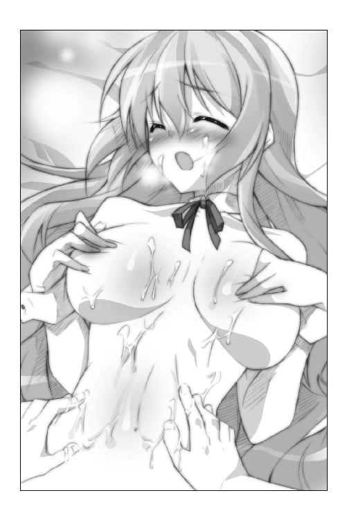
ココも塗らなきゃイケナイんだよな......。
ゆっくりと、ゆっくりと、ゆっくりと。
レイシアの大きすぎる胸に、人差し指を近づけていく。
そしてついに、指先が優美な丸みを描いている下チチの辺りに触れた。
ふにゅんっ――たちまち、おっぱいに指が沈み込んでしまう。
俺はゼンゼン力を込めてないぞ!? なんつー柔らかさだよ!!
「......あっ」
「って、レイシア！ ヘンな声出さないでくれよ!?」
余計にドキドキしちゃうだろぉぉぉっ!!
「す、すみませんっ。くすぐったくて......はぅんっ」
だ～～～か～～～ら～～～～っっっ!!
「平気です......続けてください......」
人差し指だけを使い、レイシアの胸に日焼け止めを塗り広げていく。
指一本なのは、できるだけ触らないようにという配慮からだ。
そのときの心境を自らたとえるなら、写経をする僧侶のようだったと思う。明鏡止水。一点の曇りもない澄んだ心で、一心に日焼け止めを塗り続けた。解脱して悟りを開く日も近いんじゃないかと自負するぐらいの精神集中っぷりだ。
しかし、胸の谷間辺りに日焼け止めを塗ろうとヌルヌルする指を滑らせていたら、
「――んっ！」
くすぐったかったのだろう。レイシアがカラダを強ばらせた。
両手で押さえて隠していた二つの塊が真ん中に寄せられて――もにゅにょんっ
「はうあッ!?」
指が――!!
指が、レイシアの爆乳に挟まれてしまった――ッ!!
凄まじく、柔らかかった。
そして、未曾有の柔らかさに包まれた指先は、すごく気持ちがよかった。
ぞくりとした快感が指から腕へと駆け上がり、腰から背筋を抜けていく。
正直に言おう。我を忘れそうになった。
日焼け止めを塗るフリして、胸を触ってしまってもいいんじゃないか――そんな不埒な考えが、一瞬だけ。ほんの一瞬だけ、脳裏をよぎる。
って、バカ！ なにを考えてるんだ！ そんなことしていいわけないだろっ！
かぶりを振って邪な煩悩を追い払い、日焼け止めを塗るために指を動かす。
「ぁ...んっ」
再び聞こえてくるレイシアの甘い吐息と、おっぱいの柔らかさに気が遠くなる。
そのたびに、呼吸を整え、鼓動を鎮め、荒ぶる気持ちを懸命に抑え込んで。
恭太郎は日焼け止めを塗り終えた。
もう限界だ......。ギブアップさせてくれ......。
ぐったりとビーチマットにあぐらをかいてしゃがみ込んだ恭太郎。
「次はメルルをお願いねっ」
その膝の上に、メルルがぴょんっと飛び乗ってきた。
「って、メルルちゃん！ なんで乗ってくるんだよっ!?」
「えへへ、ふつーに塗ってもらうよりも、こっちのがラブラブって感じがするでしょ♪ おにいちゃんにくっついていられるしっ」
なにを考えてるんですか、このオマセっ娘は......！
メルルはビキニのブラを脱ぎ捨てており、黄色い水着＆ミニスカートみたいなパレオだけを身につけてる。ほとんどハダカだ。
加えて、恭太郎も水着である。
すなわち、恭太郎の胸板にはメルルちゃんの背中が密着しちゃうワケで！
かわいらしいおしりの感触もダイレクトに伝わってきちゃうワケでっっっ!!
「あれれ？ どうして足を動かしてるの？ メルル、ひょっとして重いかな？」
動いてるのは足じゃありません。意志とは関係なく反応してしまう別のナニカです――って、こらーっ！ 神来恭太郎の痴れ者ォ！ なにを反応してるんだ～～ッ！ 心頭滅却煩悩退散～～ッ!! 鎮まれ、俺!!
「コホンコホン、それじゃ塗るからね」
できるだけクールな声を出しつつ、恭太郎は前に手を伸ばした。
こんな格好で日焼け止めを塗ろうとすれば、メルルちゃんの華奢なカラダを後ろから抱きすくめるようなポーズになる。
かなりマズイ格好なんじゃないのか――そんな思いがよぎるが、後戻りはできない。
後ろからまさぐるように、第五王女のすべすべしたオナカに手のひらを滑らせた。ヌルヌルした日焼け止めを塗り広げていく。
「んゅっ......恭太郎おにいちゃん上手だねぇ......」
「こんなのにうまいヘタがあるのか？」
「あると思うよ？ だってメルル、すっごくゾクゾクしてるもん...はふぅ」
あーあーあーあー、聞ーこーえーなーい～～～～っ。
色っぽいセリフは聞かなかったことにして、手を上の方に滑らせていく。
やわらかいオナカの上に、肋骨の感触があり、さらにその上に――ふにっ。
ほんのりと膨らんだメルルちゃんのおっぱいがある。
手で隠している大事な部分を避けるようにしてヌルヌルした指を滑らせ、日焼け止めを塗っていく。
「足の方も、お願いねっ」
請われるままに、恭太郎はもう片方の手をメルルの下半身へと伸ばす。
かわいらしい膝小僧や、ほっそりとした太もも、内またの辺りにも日焼け止めを塗ってあげた。
彼女はパレオをつけているから、まるでスカートの中に手を入れてるみたいな状態になってしまうが――マッサージの一種だと思うことにしよう。
よく姉上の肩を揉まされたりしたからな。それと似たようなものだ。
違う点は、対象が半裸の美少女ってところぐらいだろう。致命的な差異のような気もするけど深くは考えないことにする！（自己暗示）
当然、水着には触らないように細心の注意を払う。嫁入り前の女の子の下腹部に触れてしまうなんてコトは、腹を斬って詫びるべき失態なのだ。うむ。
努めて冷静に日焼け止めを塗ってあげていると、次第にメルルはぴくんっぴくんっと肩を震わせはじめた。
「......んぅっ」
「どうしたんだ、メルルちゃん」
恭太郎の問いには、すぐに答えなかった。
おしっこをガマンするみたいに、メルルは太ももをすり合わせてモジモジしてる。
「や......やっぱり、おにいちゃんすっごく上手だよぅ......」
メルルちゃんは、肩越しに振り返った。
瞳は潤みきり、震える唇からは熱い吐息が漏れている。
「焦らされてるみたいで......メルル、ヘンになっちゃいそう...」
......
 、お願いです。誰か、このオマセっ娘を黙らせてください。
、お願いです。誰か、このオマセっ娘を黙らせてください。
だけど、メルルちゃんは口を閉じようとはしなかった。恭太郎にだけ聞こえる小さな声で、甘えるように囁く。
「あのね、ししょーに聞いたんだよ......。大好きな男の人に触られると、女の子は気持ちよくなっちゃうんだって......。メルルがこんなに気持ちいいのは、恭太郎おにいちゃんのコト......好きだからかなぁ......？」
胸元を隠していた腕を、メルルはそっと外した。
後ろにいるから恭太郎には見えないけれど、ほんの少しでも右手を上に動かせばおっぱいの先端に指が触れてしまう。
そうだ、このふにっとした小さな膨らみを指先で辿っていけば――......
イケナイ考えに支配されそうな恭太郎に追い打ちを掛けるように、メルルは呟いた。
「メルル、おにいちゃんになら......えっちなとこ触られてもいいよ」
うぼあああああああああああああああ!!
なんつーコト言ってるんだよ、メルルちゃん！ オマセにもほどがあるだろ!!
もはや恭太郎の理性は風前の灯火だった。
彼の脳髄の新たな支配者となった煩悩が、悪魔の姿となってそそのかす。
――本人がＯＫって言ってるんだから触っちまえよ！
悪魔の誘惑に抗い続けるのは、もはや苦行以外の何物でもない。ぐおお、いっそ俺を殺してくれぇえええ......!!
息も絶え絶えになりつつも、ようやく日焼け止めを塗り終えた恭太郎。間髪入れず、エリスが近づいてきた。
「こら、メルルっ！ いつまでそうしているつもりですのっ！ 次は私の番ですわっ！」
「きゃあんっ！」
メルルを抱き上げてどかし、長い脚を見せつけるように恭太郎に向けてくる。
「ほら、早く塗りなさいっ！ ただし、妙な考えを起こしたら承知しませんわよっ！」
もうすっかり疲れ果てていた恭太郎は、頷くことしかできなかった。頭に血が上りすぎていたせいか記憶もちょっと曖昧だ。
辛うじて覚えていることと言えば――
綺麗な脚に日焼け止めを塗ってあげている時に、「くすぐったくありませんわ...んっ」と唇を噛んで声が出ないようにガマンをしているエリスの姿が妙にかわいらしかったこと。
そして。
「はわわわわわわっ......」
アルトにはビーチマットに仰向けに横たわったポーズで日焼け止めを塗ってあげた。片腕で胸を隠し、もう片方の手は気をつけをするように太ももの横に伸ばして。第四王女は身体中を強ばらせていたのだが......恥ずかしがる姿がかわいくて。腰の辺りでわだかまった脱ぎかけのスクール水着が妙に色っぽくて。とてもじゃないが直視できなかったこと。
覚えているのは、そのぐらいだろう（それだけ覚えていれば十分という気もするが）。
「よ......ようやく......終わった......」
四人のお姫さまに日焼け止めを塗り終えた恭太郎は、ビーチマットに突っ伏した。
精神力を表すポイントがあるとすれば、数値はとっくにゼロだ......。精も根も尽き果てたよ......。
ところが、である。
トレクワーズに住まう女神は恭太郎にさらなる苦難を与えたもうた。
水着を身につけたお姫さまたちが、そろって満面の笑みを浮かべたのだ。
「次はメルルたちの番だねっ」
「ええっ!?」
「フン、恭太郎にサンオイルを塗って差し上げますわ。イヤですけどっ！」
「はいぃっ!?」
「塗りあいっこと申し上げましたよね♪ 丹精こめて塗ってさしあげますっ」
「い、いや、結構ですから！」
大急ぎで立ち上がり、恭太郎は逃げだそうとしたのであるが。
「逃げるんじゃありませんわっ！【麻痺】っ！」
「ぐおおっ!?」
背中に衝撃が走った瞬間、金縛りにあったように手足が動かなくなった。その場に倒れ伏してしまう。
なんだよ、これ！ 意識はあるのにカラダが動かないぞ!?
――えーっと、以後のシーンは、音声のみでお送りしたいと思う。
主に、俺の心の傷が深くならないように。
「うふふ、ピコルさまに、こんな風に言われていたんです。良い機会ですから、サンオイルを塗って差し上げるとき、恭太郎さまのおカラダを見ておくように、って」
「いざというとき、マゴマゴしたくないもんね～」
「ど、ドキドキしますわ......ゴクリ」
「はわゎゎゎ......はわわわわ～～......」
「それじゃ、おにいちゃ～ん。脱ぎぬぎしちゃいましょーねー、えいっ」
「きゃあっ！」
「わあああ......。すごいねぇ......」
「は、初めて見ましたけれど......ちょ、ちょっぴりグロテスクですわね......」
「はう～～～～ん......!?」
「わあ！ アルトおねえちゃんが気絶しちゃったー！ 大丈夫ー!?」
「わ、私も気を失ってしまいそうですわ......」
「コホン。それでは、気を取り直して......恭太郎さま。サンオイルを塗って差し上げますね......ドキドキ」
「メルルもやってあげるよ～。えいっ。ぬーりぬーり 恭太郎おにいちゃんって、結構胸板とか厚いんだねぇ」
「きゃっ、どういうコトですの!? こ、コレ、動きましたわ！」
「おかしいですね。【麻痺】の魔法が掛かっている時は、自らの意志では身体は動かせないはずですのに......」
「メルル、知ってる！ コレは意志とは関係なく動くんだってさ！ ししょーがくれた本で読んだもんっ！」
「ふ、不思議な物体ですわ......」
「つんつんっ......えへへ、触っちゃった」
「わ、私も触ってみます。えいっ！ なんだか......ぷにぷにしてますね......」
「ズルイですわ、二人とも！ わ、私だって......ちょっと恐いけど......えいっ！」
「あれれ？ 見てみてー！ なんだか、大きくなったよー!?」
「しかも、ちょっぴり硬くなったようです......」
「生命の神秘ですわ......」
為すがままにされるしかなかった恭太郎は、ココロの中で暮雨の涙を流した。
もう俺、オムコにいけないよ......。しくしくしくしく......。
ビーチパラソルの下、恭太郎はうつぶせに突っ伏していた。
【麻痺】の魔法は解いてくれたけれど、どうにも立ち上がる気力が湧かない。
なんというか、いろいろとショックが大きすぎる。
歓迎会の席で強壮剤であるグランドタートルの生き血をたっぷりと飲まされていたこと。
お姫さまたちに日焼け止めを塗ってあげたせいで、興奮度ゲージがＭＡＸだったこと。
そして、サンオイルを塗られる時につんつんされてしまったこと。
さまざまな要因が複合した結果――恭太郎の釣り竿は立派なメインマストと化してしまったのである。
しかも、レイシアたちが見ている目の前で。
『こ、こんなに大きいものなんですね......』『おにいちゃん、すごーい......』『こ、怖いですわっ』――そんなお姫さまたちの言葉が耳にこびりついている。
（うう......あれほど心頭滅却しろと自分に言い聞かせたはずなのに......！ バカ、俺のバカ！ 死んでしまえっ!!）
「それそれ～っ！ きゃははははっ！」
「わっぷ！ ......メルル、やりましたわねっ、仕返しですのっ！」
波打ち際、エリスとメルルが水の掛け合いをして遊んでいる。潮騒と海鳥の鳴き声がＢＧＭとなって、南国らしさを醸し出していた。
「う～～～～～ん......」
気絶してしまったアルトも、恭太郎と同じようにビーチマットの下に横たわってる。
見てしまったモノがよほどショッキングだったのだろうか、メガネの下の瞳がグルグル渦巻いていた。
「アルト、大丈夫ですか？ 飲み物を置いておきますね。気付いたら飲むんですよ」
レイシアが声を掛けながら、妹の黒髪を優しく撫でる。
そして、横たわる恭太郎の隣に膝を抱えて座り、申し訳なさそうに口を開いた。
「お加減はいかがですか？【麻痺】の魔法は解けているはずなのですが......」
顔だけをレイシアの方へ向けて、肩を竦めて見せた。
「............。手足は動かせるみたいだけど、もう少し休ませてくれ......」
とてもじゃないが、遊ぶ気になんてなれなかった。
ああああ......。俺はなんてことをしてしまったんだ。姉上に申し開きができない......。
「申し訳ありません。少しやりすぎてしまったかもしれませんね......」
「............」
恭太郎は無言で返した。深く意識はしなかったけれど、ほんの少しだけ抗議の意味合いが含まれていたような気もする。
「あの......怒ってらっしゃいますか......」
「......いや、怒ってはいないよ。すぐに動けるようになると思うから。少し放っておいてくれ」
「ご無理はなさらないでくださいましね......」
心配げに眉をひそめたレイシアは、恭太郎を羽根のようなうちわで扇いでくれた。
どのくらいそうしていただろうか。
ふいに、レイシアがあくびをした。
おや、と思う。彼女だって人間なんだからあくびぐらいするだろうけど......いつも清楚で凛としてるレイシアが人前であくびをするなんて珍しいな。
そこで、気付いた。
なんだかレイシアは疲れてるように見えるな......。ちょっぴり顔色も悪いし、すごく眠そうだ。
尋ねてみると、「そ、そんなことはありませんっ！ 疲れてなんていませんよっ！」と慌てたように微笑んだ。
「三日間のおやすみを作るために、政務を急いで片づけたんです」
レイシアは病気で臥せる女王陛下に代わって、国の政治を取り仕切っていた。膨大な量の書類仕事をこなす彼女の姿を見たことがある。
イマイチ実感がわかないけれど、レイシアは一五歳の女の子であると同時に一つの政府機関なんだよな。
たった三日間の休日――口で言うのは簡単だ。恭太郎が高校生だった頃はしょっちゅう連休があった。
だけど、王女さまである彼女たちが休みを取るのは大変なコトに違いない。今こうしている間にも、国民は生活をしているのだし、国際情勢は変化しているのだ。
「お仕事を頑張ってしまったせいでちょっぴり寝不足ですけど......。でも、大丈夫っ！」
細い腕で力こぶを作って、満面の笑みを浮かべる。
「私、こう見えても頑丈なんですよ。ちょっとくらい寝不足でも平気ですっ」
波打ち際で遊んでいる妹たちを眩しそうに眺めた。
「ここのところ戦争があったり、王仕さまがさらわれる事件があったりして、お城の中が暗くなりがちでしたけど......あのコたちが楽しそうでよかった。おやすみがとれて、本当によかったです」
レイシアは妹想いなんだな――ココロの中で呟いた。
彼女が疲れているにもかかわらず気丈に振る舞っているのは、メルルちゃんたちのためなんだろう。
疲れた顔をしていたら、メルルちゃんたちがココロから楽しめないから。
だから、平気なフリをしてるんだ。
......まったく、『疲れてるのか？』なんて聞くんじゃなかったよ。
ふてくされて寝っ転がってる俺が、すごく格好悪いじゃないか。
なんだか自分が恥ずかしくなって――どすっ――うつぶせに横たわったまま恭太郎はビーチマットに頭突きをした。
「うみゅ～～～～ん......。ふわっ...!? あれれっ？ 私、どうして寝てたんだろっ？」
アルトちゃんが目を覚ましたようだ。ズレてしまったメガネをかけ直し、キョロキョロと砂浜を見回している。
と、海辺で遊んでいた二人がタイミングよく声を掛けてきた。
「いつまで寝ているんですのっ！ 恭太郎もこちらにいらっしゃい！」
「アルトおねえちゃんも、レイシアおねえちゃんもおいでよー！ 一緒に遊ぼ～っ！」
「うんっ、いま行くわっ♪」
レイシアは勢いよく立ち上がった。
爽やかな海風が吹き抜けて、ふんわりと長い髪が美しくなびく。
「もしよろしければ一緒に参りましょうっ、恭太郎さまっ」
南国の日差しを背中に受けて、手を差し伸べてくる白いビキニのレイシア。
彼女は輝くような笑顔を浮かべていて。
空は晴れ渡り、海原は青くきらめいて。
目の前に広がる光景は、息を呑むほどに鮮やかで――
「よしっ！」
恭太郎はレイシアの手を取って立ち上がった。
気分を切り替えよう。いつまでもウジウジしているなんて男らしくない。
俺のせいで、彼女たちのバカンスを台無しにするワケにはいかない。
「せっかく南国まで来たんだ。楽しまなきゃウソだよなっ！」
「もちろんですっ♪」
焼けた砂浜を蹴立てて、恭太郎はレイシアと二人で海へと走っていった。
×××
むかむかっ。むかむかむかむかーっ。
夕刻。王家の別荘の廊下を、エリスは苛立ちを隠そうともせずに闊歩していた。
王宮から付き従ってきた女官たちは怯えたように壁際によって、深々と頭を下げる。第三王女の顔は決して見ようとはしない。苛立つエリスと目を合わせれば、どのような叱責を受けるかわからないからだ。五人の王女の中で、最も厳しいのがエリスであった。
「ああもうっ、本当に腹が立ちますわっ！」
女官たちを一顧だにせず、傍若無人な王女は大またで廊下を歩いていく。
彼女がムカついている理由は、ただ一つ。
後宮にたった一人の王仕――恭太郎のことだ。
海辺で恭太郎や王女たちと遊んだのだが、どうにもあのナマイキな王仕は自分をないがしろにしている気がして仕方がないのだ。
エリスは、ココロの中で罵倒を続ける。
まったく、この私を誰だと思ってますの？ エリス・レムリス・トレクワーズですのよ。トレクワーズの五人の王女の中で、最も美しいとの呼び声も高き姫の中の姫さまですのよっ。
それなのに......恭太郎ったら、なんなんですの、あの態度はっ。
日焼け止めを塗るときもそうです。この私が恥を忍んでおしりが丸出しの水着を身に着けたというのに、ちっともドキドキしてませんでしたわ。レイシアやメルルにばかり目移りしてっ。本来なら、このエリスさまに釘付けであるべきでしょうっ!?
みんなで一緒に遊んだときもそうですのっ。
恭太郎の郷里の遊びだという《すいかわり》とかってゲームをしたときには、目隠しをして倒れそうになったアルトを抱き留めてあげてましたの。密着しちゃって二人とも真っ赤になるなんて......破廉恥にもほどがあります！
極めつけは、海で泳いでいたときですのっ！
ビキニが流されてしまったメルルを助けるためとか言って、負って砂浜まで連れて行ってあげてましたわっ！ メルルの胸が直に当たってるからって鼻の下を伸ばしちゃって！ 情けないったらないですわっ！
この私も背負いなさいって命令したら、『勘弁してくれー！』とか叫んで逃げ出してしまうしっ！ このエリス・レムリス・トレクワーズをないがしろにするなんて許し難い行為ですわっ！
「そして、最も許し難いのが......!!」
エリスは、別荘の三階の端にある扉の前で歩みを止めた。
《きょうたろう》と手書きされたプレートを睨み付ける。
そんなムカつく恭太郎の部屋に、この私自らわざわざ訪ねなきゃイケナイなんて......屈辱の極みですのッ！ 王仕でなかったら、私の手で処刑しているところですわッ！
「入りますわよ！ 恭太郎っ！」
ノックもせずに、エリスは王仕の部屋に飛び込んだ。
恭太郎は大きな出窓に腰掛けて、窓の外を眺めていた。
ちょっぴり眉を顰めて、複雑な表情をしてる。
「え、エリスっ!? ノックぐらいしてくれよっ！」
エリスに気づいた恭太郎は、すぐにカーテンを閉めてしまった。
「なにを見ていたんですの？」
「いや、別になんでもないよ。風景が綺麗だったからさ」
「そのわりに......なんだか遠い目をしていましたわよ？」
「俺が？ そんな顔するワケないだろっ」
確かにちょっぴり切なげにも見える顔をしていたと思うのだけれど......まあ、いい。このナマイキ男がなにを考えてようが、興味はないのだ。興味があるのは、お世継ぎをつくることだけ。
恭太郎を睨み付けながら、エリスは手を横に伸ばした。
「来たれ、【裁切りの鎌】」
声に合わせて魔法陣が展開。手の中に巨大な鎌が出現する。
「恭太郎、よく聞きなさいっ！」
王仕の首元に刃を突きつけつつ、有無を言わせぬ口調で続ける。
「あなたに命令しますわ！ 明日は朝から私と行動を共になさい！」
「どこかへ行くのか？」
「バーソロミュー洞窟へ入りますわ！ お供なさい！」
「なんなんだ、そこは......？」
「それは、その......」
実のところ、エリスにもよくわかっていなかった。ピコルから王家の秘宝《誘惑の聖杯》が安置されていると聞かされただけなのだ。
「フン、なんだっていいでしょう？ 観光名所みたいなものですわ！ あなたは黙ってついてくればいいんですのっ！ 断れば、その首を落としますわっ！」
深いため息を吐いて、恭太郎は諦めの口調で返事をする。
「はいはい、わかりましたよ......」
「なんですの、その返事はっ！」
「仕方ないだろ。きみらと出掛けると、基本的にロクな目に遭わないんだから......」
「この私と出かけるのです！ もっと喜びなさいっ!!」
どがぁっ！ ――エリスは裁切りの鎌の柄で恭太郎を殴った。
「ごぼぁーっ!?」
吹っ飛んだ恭太郎を踏んづけつつ、エリスは冷たい声で言い放つ。
「明日は早めに出発しますわ。寝坊したら承知しませんわよっ！ フンっ！」
烈火の如き視線で睨め付けつつ、大きく鼻を鳴らして、エリスは部屋を出る。
扉を叩きつけるように閉めて、独りごちる。
「やっぱり、ナマイキですわ......！ 本当に最低の男ですのっ！」
しかし、怒りのエリスの表情は、ゆっくりとほくそ笑みに変わっていく。
「今に見ていなさい......。誘惑の聖杯さえ手に入れれば、こっちのものですの......」
ピコルから聞いた情報を思い出す。
後宮のヌシの言葉が確かであれば、誘惑の聖杯を使えば、恭太郎はエリスにメロメロになってしまうはずなのだ。
《メロメロ》というのがイマイチどんな状態を示すのかわからないが......、ピコルは簡単にお世継ぎをつくれることは間違いないと言っていた。
「さっさとお世継ぎをつくって、恭太郎はどこかの塔にでも幽閉してやりますわ......。このエリスさまに屈従すると誓うまでは出してやらないんですからねっ！ おーほほほっ！ おーっほっほっほっほっ！」
エリスの高笑いが、別荘中に響き渡った。
「いちいち殴るのは勘弁して欲しいよな......」
恭太郎は殴られた頬をさすりながら立ち上がった。
再び、出窓に腰掛けて、カーテンを開く。
窓の向こう側には、夕焼けに染まった美しい海辺の風景が広がっていた。
「エリスにバレないでよかったよ......。みんなにはナイショってことになってるからな」
目を凝らす。朱色に染まった白い砂浜に佇む二つの人影が見えた。
片方はメガネをかけた、ポニーテールの女の子。白いシャツ＆ミニスカートという活発そうな服装だ。
視力の良い恭太郎には、それがユフィナであることがわかった。メガネは変装のために掛けているんだ。
そして。
もう一つの人影は青いローブを纏っている。
フードに隠れて顔はよく見えない。だけど、そんな特徴的な出で立ちをする人物は、この国じゃ一人しかいないよな。
ユフィナが憧れている相手――伝説の英雄、ガイルーンだろう。
ヤシの木の下で、二人はなにかを話している。
当然、なにを話してるのかはわからない。
だけど、ユフィナは幸せそうな顔をしていた。頬をちょっぴりピンク色に染めて、憧れの人を見つめている。
「おめでとう、ユフィナ。よかったじゃないか」
彼女のうれしそうな表情を眺めながら――思う
俺が遠い目をしてるって、エリスが言っていたな......。でも、どこにそんな表情になる要素があるって言うんだ？
恭太郎はユフィナの恋を応援すると約束した。
だから、憧れの人に会えたのは喜ばしいことなのだ。
「これからも応援してるからな。頑張れよ」
小さな声でそう告げて――恭太郎はカーテンを閉めた。
ハーレム講座☆ピコルの穴！ その２！
ピコル（以下、ピ）「ハーレム講座☆ピコルの穴！ その２なのじゃーっ！」
アレスタ（以下、ア）「よろしくお願いしまーす！ って、ピコル師匠ーっ!!」
ピ「わあ、なんじゃいきなり大声を出しおって！ どうしたんじゃ？」
ア「どうしたもこうしてもないですよっ！ せっかくビーチのシーンがあったのに......ユフィナさまが水着になってないじゃないですか！」
ピ「諦めるしかなかろうて。ユフィナさまは海に行かなかったのじゃからのう」
ア「そう簡単には諦めきれませんよ！ ナイスバディーなユフィナさまがえっちぃ水着をつけてるところが拝めるって、僕すっごい期待してたのに......ぶわわっ（涙）」
ピ「泣き出した!?」
ア「これは僕一人の涙じゃありません。読者のみんなの涙ですよ！ 誰もがユフィナさまの水着をみたいに決まってるんです！ そうだよな、みんなー！」
ピ「耳に手を当ててアピールしても、なにも聞こえてはくぬぞ、愚か者めっ」
ア「だって、だって～～～っ」
ピ「ええい、泣くな鬱陶しいっ。このピコルが力を貸そう。これを使うがいいのじゃー！」
ア「なんですか、これ。カメラですか？」
ピ「うむ。《妄想カメラくん１号》という名前なのじゃ。写したい光景を思い浮かべつつシャッターを切ると、その光景が写し出されるというマジックアイテムなのじゃ！」
ア「すごーい！ どんなえっちな写真だって撮り放題じゃないですかっ！」
ピ「使ってみるかの？ それにはまず、このヘルメットを被るのじゃ」
ア「鉄カブトみたいですね......って、これ、内側がトゲトゲですよ!?」
ピ「この電極を通して、妄想を脳から直接カメラに送るのじゃ！」
ア「うわー......すごくカラダに悪そうな方法ですね......」
ピ「大丈夫なのじゃ、カラダに害はない！ ちょっぴりアホになる可能性はあるがの」
ア「ゼンゼン大丈夫じゃないですよ、それ！」
ピ「ツベコベ言わずに被るのじゃっ！ とりゃ！」
ア「ぎゃんっ!?」
ピ「さあ、写したいものを妄想するのじゃ！」
ア「わ、わかりました。ユフィナさまの水着～。ユフィナさまの水着～。てやーっ！」
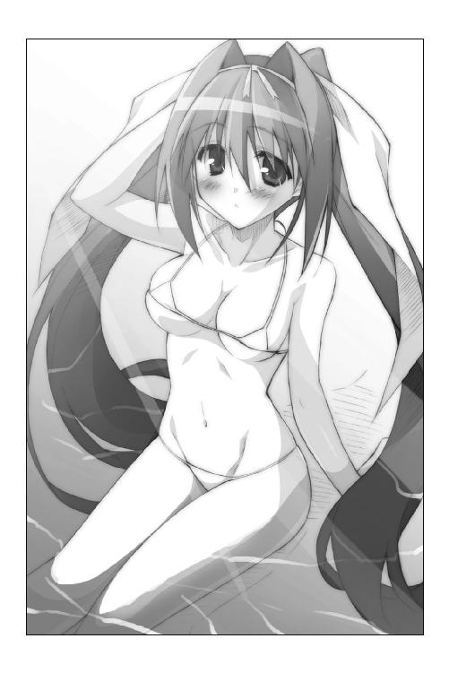
ア「ぎゃー！ これはえろい！ やっぱユフィナさま最高ー」
ピ「こんなに鮮明に写るとは、アレスタの妄想力はすごいのじゃ！」
ア「どんなもんですか！ うはははは、むひょひょひょひょ、あばばばばば！」
ピ「わあ、ちょっとアホになってる!?」
ア「だ、大丈夫です！ このカメラ、素晴らしいですよ！」
ピ「うむ。気に入ったのなら、時々使わせてやろう」
ア「やったー！ この調子でバシバシお姫さまたちのえっちぃ写真を撮っちゃうぜー！ みんな期待しててねーっ！」
第三章 二日目は海洋ダンジョンでハラハラ
えへへ おはようございますっ。
第五王女のメルル・シュシュリン・トレクワーズですっ。
いまメルルは、別荘の三階に来てます。
ここに恭太郎おにいちゃんの部屋があるんだよね～。
時間は朝の八時。おにいちゃん、まだきっと寝てるよね。
起こしちゃわないように、しんちょーに歩いていかなきゃ。ぬきあし、さしあしっと。
え？ どうしてコソコソしてるかって？
眠ってるおにいちゃんをちゅーで起こしてあげるんだよ～
しかもね、しかもねっ。いまメルルは、ちょっぴりえっちぃ格好をしてるのです。
『禁呪詠唱☆ガイルーン』に出てくる、ユグドラっていうツンツンしたお姫さまのドレスなんだけど......よぉ～く見るとね、スケスケなんだよ、これー。うっひゃー！
ドレスの下はぱんつしかつけてないから......メルルの胸が恭太郎おにいちゃんに見られちゃうかもしれないよぅ、やんやんっ！
すっごく恥ずかしいんだけど、おにいちゃんになら見られても平気だよ。だって、メルルのだんなさまになるひとだもんねっ
こんなえっちぃ格好で迫られちゃったら、恭太郎おにいちゃんだって、メルルにメロメロになっちゃうよね。むふふふ
とか言ってるうちに、おにいちゃんの部屋に到着～っ。
音を立てないように、そ～～～っと忍び込みまっす。
「おにいちゃん、おはよう～～～～～～っ」
恭太郎おにいちゃんのベッドにダイビングっ！ とりゃー！
「って、あれれ？ おにいちゃんがいないよー!?」
ベッドも冷たいし......。うわーん、ひょっとして、これって......。
「恭太郎おにいちゃんってば、もう出掛けちゃったのー!?」
×××
バーソロミュー洞窟の入り口は、王家の別荘がある敷地の片隅、岩に囲まれて周囲からは見えない入り江のような場所にある。
洞窟と名がついているから、恭太郎は鍾乳洞のようなものを想像していたのだが、白大理石でできた神殿のような門が作られていたのには驚いた。装飾の施された太い柱が、三角形の屋根を支えている。両側には薄衣を纏った半裸の女性と筋肉質の男性の像が向かい合うように飾られていた。
王宮にいるときのようなドレスではなく、黒いワンピースを身に纏っているエリスも驚いたように神殿のような洞窟の入り口を見上げて、
「ここがバーソロミュー洞窟ですのね......」
「なあ、エリス。この中にはなにがあるんだ？」
「こ、ここには......そうっ、女神さまが祀られていますのよ。子宝の女神さまですの。お参りすればお世継ぎづくりが円滑に進むのですわっ！」
「ふぅん、お参りか......」
確かに神さまでも祀られてそうな感じだな――荘厳な門構えを見やって恭太郎は頷く。
（どんなことをさせられるかと心配だったんだが、お参りするぐらいだったら付き合っても問題ないよな）
恭太郎を横目で見やりつつ、エリスは額の汗を拭うような仕草をした。聞こえないような小さな声で呟く。
「ふぅ......なんとか誤魔化せたようですわね......」
「ん？ なんだって？」
「なななな、なんでもありませんのっ！ 独り言ですわっ！」
エリスがそっぽを向いたとき、背後から声が聞こえてきた。
「まあ、子宝を司る女神さまですか。それはお参りしなきゃいけませんねっ。トレクワーズの未来のために」
「もちろんですわ。王位を継ぐためにもお世継ぎを誰よりも早くつくらなくては......って、レイシアっ!?」
白いワンピースを身に纏い、麦わら帽子をかぶったリゾートスタイルの第二王女が、ニコニコと微笑んでいた。
エリスが双子の姉に食ってかかる。
「どうしてあなたがココにいるんですのっ!? 恭太郎と二人だけで来たはずですのにっ！」
「エリスと恭太郎さまが出掛けて行くのが見えたんです。お散歩ならご一緒しようと思ったんですけど......」
大きすぎる胸の前で手を組み合わせて、レイシアはうれしそうに微笑んだ。
「女神さまにお参りしようと考えていたなんて......エリスもトレクワーズ王国のために真剣なんですね。姉として誇らしいですっ」
「（うう......レイシアったら、ものすごく邪魔ですわ！ 抜け駆けしようと思っていたのにっ！）」
「あら？ なにか言いましたか？」
「べ、別になにも言ってませんわっ」
「子宝の女神さま、私も一緒にお参りさせていただきますねっ！」
レイシアは満面の笑みを浮かべている。
それとは対照的にエリスは苦々しい表情を浮かべていたけれど......やがて、観念したように肩を落とした。
「......いいですわ。一緒に参りましょう」
小さく鼻を鳴らして、そっぽを向いて小声で続ける。
「レイシアがいても平気ですわっ。誘惑の聖杯さえ手に入ればこっちのものですのっ」
「ゆうわくの......なんだって？」
「ななな、なんでもありませんわっ！ 恭太郎は黙って私についてくればいいんですのっ！ さあ、参りますわよっ！」
第三王女は恭太郎の腕を掴んで、門をくぐった。春の木漏れ日のような笑顔を浮かべながら、レイシアも後をついてくる。
内部にも白大理石でできた廊下が続いていた。入り口近くにはマンションの管理人室のように、大きな窓のついた部屋がある。中からは音楽とセリフが響いていた。
『禁呪の調べを聞かせてやるぜ！』
このセリフに、恭太郎は聞き覚えがあった。
トレクワーズには現代日本で言うところのテレビのようなものが存在する（受像器とか言ったかな）。
アニメ番組も放映しており、その中でもメルルちゃんイチオシの作品が『禁呪詠唱☆ガイルーン』だ。実在する伝説の魔法使いガイルーンをモデルとしたヒーローものらしい。
主人公のガイルーンの決めゼリフが『禁呪の調べを聞かせてやるぜ！』なのだ。メルルちゃんにせがまれて、何度も言わされたなあ......って、誰かがアニメを見てるのか？
廊下側に開いてる窓を覗き込んだ恭太郎は、広がる光景にドギモを抜かれた。
六畳ほどの部屋の真ん中に座っていたのは――人魚だったのだ。
上半身は美しい女性だ。プラチナブロンドの長い髪からは、水かきのような耳がのぞいている。胸には貝殻のブラをつけている。
そして、下半身は魚であった。腰から下はピンク色のウロコに覆われており、先端は魚類の尾ひれ。
で。
そんな絵本にでも出てきそうな人魚が膝（というか、尾ひれ？）を抱えて座りこみ、ほけーっとアニメを眺めてるのだ。
時折、傍らに置かれたおせんべいをかじりつつ、お茶をすすっている。
人魚なんだから所帯じみたコトはしないで欲しい気がするな......。
呆れる恭太郎を押しのけて、エリスが声を掛けた。
「ちょっとあなた！ なにを受像器をぼんやり見てるんですのっ！」
「......ほえ？」
眠そうな顔でこちらを向いた人魚の口から、くわえていたおせんべいが落ちた。
「ひょっ、ひょっとして......王族の方ですか？」
「そうですわっ。第三王女、エリス・レムリス・トレクワーズですのっ！」
「私は第二王女のレイシア・ラトゥーイン・トレクワーズ。こちらの方は、王仕さまの神来恭太郎さまですよ」
人魚の瞳にみるみる涙が浮かんでいく。器用にヒレになっている下半身で立ち上がり、こちらに飛び跳ねてきた。
「ようやく......ようやくいらっしゃったんですね......！」
感動にうち震えつつ、人魚は叫ぶ。
「四〇〇年ぶりの挑戦者ですーっ！ お待ちしておりましたー！」
無理矢理恭太郎の手を掴んで握手してくる。
「わたし、バーソロミュー洞窟の門番をしてます、アメルダと申しますっ。こう見えてもマーメイドなんですよ？」
いや、どっからどう見てもマーメイドそのものだろ。
ツッコむヒマも与えず、アメルダはうれしそうに尾ひれの先端をピコピコ振って、
「こうして来てくださったということは、お世継ぎづくりの真っ最中ってコトですね？ お二人いっぺんにだなんて王仕さまモテモテじゃないですか。このこの、色男だな～」
ニシシシっと笑いつつ、アメルダは肘で突っついてくる。
ノリが軽いな......。人魚なんだから、もう少しシリアスでいて欲しいと思うのは、俺の偏見だろうか......。
そんなことを思いつつ、質問してみる。
「四〇〇年ぶりとか言ってたよな。その間、使われなかったのか？」
「はい。ココはなかなかお世継ぎに恵まれない王族のための施設ですから」
なるほど。四〇〇年の間は、お世継ぎづくりもスムーズで王位継承が円滑に行われてきたってことだな。子宝の女神にお参りする必要なんてなかったってことか。
納得しかけた恭太郎だったが、人魚が続けた言葉は意味がよくわからなかった。
「その気にならない王仕さまなんて、めったにいないですからね。わたし、ずっとずーっとヒマしちゃってましたよ......」
「こちらには子宝の女神さまが祀られているんですよね？ 失礼ですが、なんというお名前の女神さまなんですか？ 地母神ティアドラさまの眷属かとは思うのですが......」
レイシアの問いに、人魚はハシバミ色の瞳をパチクリさせた。
「ほえ？ 子宝の女神？ ここにあるのは誘惑の聖杯と......」
「あーあーあーあーあー!!」
エリスが大声を出した。アメルダの言葉がかき消される。
「細かい説明は結構ですわっ！ さっさと中に入れてくださいましっ！」
きょとん顔をしていた人魚は全て理解したように手を叩いた。ちょっぴり頬を染めてニシシと笑う。
「なるほど、待ちきれないんですねっ。えっちなお姫さまですねぇ。最近のコは進んでるなあ......って、こんなこと言うなんてわたしオバサンみたいだわ。気をつけなきゃ」
ワケのわからないことを呟きつつ人魚は両手で印を結んだ。口の中で呪文を唱えると、空中に魔法陣が展開する。
ほどなく――ごごごごごごごごごごご。
廊下の先から地響きが轟いてきた。
「これでバーソロミュー洞窟の封印が解かれました」
人魚は水かきみたいな耳をピコピコ動かしつつ、説明してくれた。
「中に入ったら左右に扉があります。女性は右側、男性は左側に入ってください。そこが更衣室になってます。衣服は全部お脱ぎになって、用意してある装備を身につけてくださいませ」
遊園地のスタッフみたいな事務的な口調でアメルダは説明を続ける。
「内部は特殊な結界が張られておりますので魔法は使えません。また、一度洞窟内に入られますと入り口からは出られなくなります。最深部に出口がございますので、そちらからお出になってください。お召し物は出口の方に運んでおきますのでご安心くださいませ」
深々と礼をした人魚は、笑みを浮かべて続ける。
「元気なお世継ぎができることを祈っておりますからね。ニシシシシ......」
バーソロミュー洞窟の内部は、ゴツゴツとした岩肌が剥き出しだった。ようやく《洞窟》の名に相応しい感じになった気がする。
だけど、地面は綺麗に均されているから、かなり人間の手が加えられているのは間違いないだろう。
「遅いな、二人とも......」
着替えを終えた恭太郎は、無意識に肩をさすりながら呟いた。
用意されていた衣装はギリシア時代の奴隷剣士のような格好だった。
腰を覆う白い布。下には水着のような下履き。木剣が一振りとそれを下げるための金属製のベルト――それだけだ。上半身はハダカである。
水着だと思えば恥ずかしくはないが、薄暗がりで半裸で立っているのは居心地が悪い。
一〇分ぐらい待っていただろうか。
「お、お待たせ致しました、恭太郎さま......」
石でできた扉がゆっくりと開き、向こう側からレイシアの声が聞こえてきた。
第二王女の姿を見て、恭太郎は言葉を失ってしまう。
一言で表現するなら――ファンタジー風の女剣士といったところか。
だが、特筆すべきは局所的に露出度が高いということだろう。
二の腕辺りまで覆った白い手袋と同色のロングブーツ。そして、肩口や腰の周りには小さな白い羽根のような金属製のプレート。それらはカラダを守るための防具のようにも見えなくはない。
だが、胸元を覆っているのは、かわいらしいリボンのついた布きれ一枚なのだ。下チチが盛大に出てしまっているし、下着を身につけていないせいか、ポチッとなにかが浮いてしまっていて――恭太郎には直視することができない。
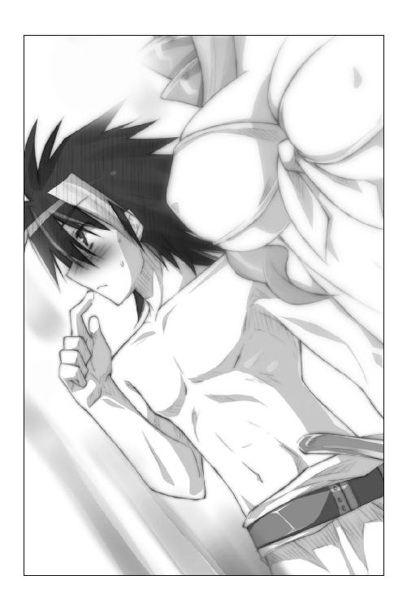
しかも。
白い羽根のようなプレートで腰回りを覆っているけれど、なぜかおへそとその下辺りには防御板がついていなかった。身につけているローレグ気味のぱんつ（？）が完全に見えてしまっており、へそ下のかなりきわどいところまでが露出していた。
レイシアは頬を染めて、うつむいてしまう。
「女神さまをお参りするだけなのに、こんな格好をしなきゃイケナイんですね......。とっても恥ずかしいです......」
「そ、そうだな......」
顔に血が集まってくるのを感じて、恭太郎も視線を逸らした。
すると――びしっ！
「痛ぁっ!?」
後ろから木剣で殴られた。
レイシアとほぼ同じ格好（違うのはカラーリングが黒を基調としている点だけだ）をしているエリスが、眉を吊り上げている。
「なにを二人で頬を染めてますのっ！ さっさと先に進みますわよ！」
高飛車な第三王女は「油断も隙もありませんわ......」と呟きつつ、ゴツゴツとした岩肌の続く洞窟の奥へと歩いていってしまう。
慌てて後を追おうとしたとき、気づいた。
ミニスカートのように広がる装甲板の下に、ちょこっとだけ黒い布地に包まれたおしりの丸みが見えてしまっていたのだ。ロングブーツが作り出す絶対領域が目に眩しい。
（後ろを歩くのは心臓によくない......！）
恭太郎は歩を速め、二人の前に出た。
先を進んでいれば、彼女たちに不埒な視線を向けてしまうおそれもないだろう。
ひたひたとサンダルの足音を響かせて、恭太郎は洞窟を進んでいく。
壁にはランプの代わりだろうか――数メートルごとに大きなガラス瓶のような水槽がぶら下げられており、青白い光を放つクラゲが泳いでいた。おかげで最低限の視界は確保できている。
しかし、ぬらぬらと濡れている岩肌も、奇怪なオブジェのように壁際を彩る珊瑚も、地鳴りのように遠くから響いてくる波の音も。青白い光の中ではかなり不気味だった。
歩を進めるたびに緊張感が高まっていくように感じる。お化け屋敷を歩いているような気分だな......。
「あ、あの......恭太郎さま......」
一歩後ろを歩いていたレイシアが耐えきれなくなったように恭太郎の隣に駆け寄ってきた。
「もしよかったら手を繋いでいただけませんか......？ 私、ちょっと怖くて......」
本来ならば婦女子と手を繋ぐなんて慎むべき行為だろう。だけど、怖がる女の子を放っておくこともできないよな。
「ああ、いいよ」
右手を差し出すと、おずおずといった感じでレイシアは握りしめてきた。手のひらの小ささと温かさに、思わずドキッとしてしまう。
「は、恥ずかしいですわねっ、こんなことで怖がるなんてっ！」
エリスがイライラしたように腰に手を当てて、姉王女を睨んだ。
「エリスは怖くないのか？」
「フン、私を誰だと思っているんですの？ エリス・レムリス・トレクワーズですのよっ！ この私に怖いものなんてありませんのっ！」
偉そうな言葉を吐いて、エリスは恭太郎たちを追い抜いた。
「まったく......レイシアには呆れますわ。この程度のダンジョンで怖がって、恭太郎みたいな男に頼るなんて。私には恥ずかしくできませんのっ」
ぶつくさ呟きつつ歩を進めていったんだけど......ちょっと歩くのが遅くないか？
歩き方もちょっとヘンだ。微妙にへっぴり腰のような気がするぞ。
ぴちょん。ぴちょん。ぴちょん――水滴の音がする。
「ち、ちっとも怖くなんてありませんわよ......」
滴の音が聞こえるたびに、エリスはびくっびくっと肩を震わせた。引きつった表情で暗がりの中を見回している。
「......ひょっとして怖いんじゃないのか、エリスも」
「そそそ、そんなことありませんのっ！ 愚弄したら許しませんわよ、恭太郎っ！」
怒鳴った瞬間――甲高い音が響き渡った。
ガラスを引っ掻くような鳴き声をあげて、黒い物体が第三王女をかすめて飛んでいく。
「きゃああああああああああっ!!」
大きな悲鳴を上げて、エリスは恭太郎の腕に抱きついてきた。
彼女をあざ笑うように、小さなコウモリが飛び去っていく。
気まずそうに恭太郎の腕を放し、エリスはわざとらしく咳払いをして、
「......恭太郎を庇ってやったのですわ。感謝なさい」
いや、明らかに怖がってただろ、今のは。
「なんですの、その目はっ！ 私は怖がってなどいませんわっ！」
べしべしと恭太郎の胸を叩いてくるエリス。その足は小さく震えてる。
鈍感な恭太郎でも、さすがにわかった。エリスはプライドが高いから、怖いって認めたくないんだな。本当は怖いくせに。
仕方ない。下手に出てあげるとしようか。
「あのさ、エリス。実は俺、こういうの苦手なんだよ。だから、きみさえよかったら、手を繋いでくれないか？」
空いている左手をエリスに差し出した。
高飛車なお姫さまの顔が、ぱあっと明るくなった。一瞬だけ、うれしそうに安堵の表情を浮かべたんだ。
しかし、いつものエリスの高慢ちきな顔に戻って、盛大にフンと鼻を鳴らす。
「軟弱ですわね、恭太郎っ！ そーゆーコトなら仕方がありませんわねっ！ イヤですけど、手を繋いで差し上げますのっ！」
エリスは恭太郎の手を握りしめてくる。足の震えが止まったように見えた。
レイシアがクスッと笑って、小声で耳打ちしてくる。
「お優しいですね、恭太郎さま」
そんなワケで、三人で手を繋いでバーソロミュー洞窟を探索することとなった。
五分ぐらい一本道の洞窟を進んでいっただろうか――
視界が急に開けた。ドーム状の空間が現れたのだ。
通路を照らしていた光を放つクラゲが見あたらない。すごく暗いな......。
コクン――生唾を飲む小さな音が聞こえてきた。レイシアが繋いだ手に力を込めてくる。
「い、今にもなにかが出てきそうですね......。なんだか怖いです......」
「レイシアは恐がりですわね。あなたは双子とはいえ姉なのです。しっかりして欲しいもので――」
エリスのセリフは最後まで聞き取ることができなかった。
床を突き破って、なにかが飛び出してきたのだ！
『きゃあああああああああああっっ!!』
双子の姫が同時に悲鳴を上げた。
「うおおおおおおおおおおおおっっ!?」
恭太郎の口からも雄叫びが漏れる。
しかし、女の子たちとは悲鳴の種類が違っていた。
レイシアとエリスが、恭太郎の顔の辺りに抱きついてきたのだ。
二人とも水着みたいな露出度の高い鎧に身を包んでる。しかも、胸を覆ってるのは薄い布地だけだ。
必然的に、両サイドからお姫さま二人の胸が押しつけられちゃうワケで！
レイシアの爆乳とエリスの控えめな胸をほっぺに感じちゃうワケで！
は、離れてくれえええっ！ こんな気持ちいい感触をいつまでも味わってたら、俺はヘンになっちゃうよ!?
「きゃあああ......って、あら？ なんですの、あれは......」
悲鳴をあげていたエリスが、急に冷静な声を出した。
恭太郎から離れて、ドームの真ん中に出現したなにかへと近づいていく。
突如として現れたのは――石像だった。マヌケな顔をした半魚人の像だ。
「......ちょっとかわいいですね」
ようやく安心したように、レイシアも恭太郎から離れる。ほっぺに感じていた柔らかすぎる感触が無くなって、ちょっと寂しいような......ってなにを考えてるんだ、俺はっ。
驚いてしまったのが悔しかったのだろう。
「んもうっ、なんなんですのっ。驚かさないで欲しいですわっ」
腰から木剣を抜いて、エリスは半魚人の像を小突く。
その途端――カチリ、と。歯車が噛み合うような音が響いた。
半瞬後、彼女は気づくこととなる。
その音が、記念すべき最初のトラップが発動した音であることに。
突然床が消えた。床に穴が開いたのだ。
「きゃあああっ!?」
落ちそうになったレイシアの手を、慌てて掴もうとする。
だが、レイシアもろとも恭太郎は落とし穴へと落ちてしまった。
その先に続いていたのは、ウォータースライダーのような長いスロープ！
自由落下のような速度で、恭太郎とレイシアは水の流れる滑り台を落ちていく。
「レイシアっ！」
チューブ状にくりぬかれた岩の中を水流と一緒に滑りながら、恭太郎は第二王女を引き寄せた。彼女がどこかにぶつかってケガをしないように、抱きしめて庇う。
どのくらいの距離を滑っていたのだろう。
「ぬおっ!?」「きゃああっ！」
長いスライダーが終わり、二人は空中に投げ出された。大量の水と一緒に、一メートルほど吹っ飛ばされて――ぼふんっ。
恭太郎のカラダは柔らかく受け止められた。
クラクラする頭を振りながら、注意深く辺りを見回す。
そこは奇妙な部屋だった。
岩をくりぬいて作ったような広い室内を埋め尽くすように、壁と言わず天井と言わず、至る所から大量の海草が生えているのだ。放り出されてもケガをしなかったのは、床に分厚く海草がはびこっていたからだろう。
「うぅ～ん......」
恭太郎の腕の中、レイシアが呻いた。
「大丈夫か？」
「はい、平気です......」
状況が飲み込めないように、ぼんやりとしたままレイシアは恭太郎を見上げている。
全身ずぶ濡れだけど、ケガはしていないようだな。よかった......。
安堵の息を吐いた恭太郎を見つめ、レイシアはちょっぴり頬を染めた。
「あ、あの......恭太郎さま？」
「ん？ どうした？」
「そんなにギュッと抱きしめられたら痛いです。もう少しだけ腕の力を緩めていただけませんか？」
「うわっ、すまん！」
レイシアを庇うためとは言え、思いっきり抱きしめてしまった！
慌てて飛びすさる恭太郎。レイシアは照れくさそうに微笑む。
「謝らないでくださいませ。私を助けるためだってことはわかっております。それに何度も申し上げおります通り、恭太郎さまになら、どんなえっちなコトをされても構いませんから......」
ますます顔を赤くしつつ「ココロの準備は必要ですけれど......」とか呟いて、レイシアは恥ずかしそうに海草に覆われた地面にのの字を書いた。
エロかわいい格好で、恥ずかしそうにえっちな発言をする爆乳の王女さま――その姿は凄まじくかわいくて、やらしくて、恭太郎は慌ててそっぽを向く。
「と、ところで、ココはどこなんだろうな？」
一〇畳ほどの部屋が緑色の海草に完全に覆われている。部屋の隅の天井には穴があり、スロープから水が流れ出していた。
（恐らく、あそこから流されて来たんだろうな......。角度が急すぎて、逆に登っていくのは無理そうだぞ......）
上ばかり注視していたから、恭太郎は気付かなかった。
しゅるしゅるしゅるしゅる......――彼の足下で蛇のようになにかが動いたことに。
「エリスともはぐれてしまいましたね......。なんとか合流しなくては......」
「ああ、出口はどこだろうな」
「海草ばかりで、壁も見えませんね。この下に扉があるのでしょうか？」
立ち上がったレイシアは、壁から生えている海草を掻き分けようとした。
その刹那――しゅるるるるるるっ！
「か、海草が動いて......きゃああっ!?」
凄まじい勢いで海草がレイシアに絡みついてきた。
手足を縛り上げ、空中に持ち上げられてしまう。
「レイシアを放せっ！」
木剣を抜き、すぐさま駆けつけようとしたが――身動きが取れない！
恭太郎の足首にも海草が絡まってきたのだ。凄まじい力で壁際に引っ張られる。ミイラ男のように海草でグルグル巻きにされてしまう。
（くそっ、身動きが取れない......!!）
恭太郎の眼前で、レイシアは宙吊りにされてしまう。
「あっ......。イヤ......っ」
柔肌を舐めるようにヌメヌメと光る海草が這い回った。
レイシアの桜色の唇から、恐怖の吐息が漏れる。
しかし、レイシアは逃げ出すことができない。
洞窟の壁面をびっしりと覆っている触手のような海草がレイシアの腕や足に絡みつき、王女を宙づり状態に縫い止めてしまっているのだ。
両膝を曲げたまま大きく足を広げたポーズ――いわゆる、Ｍ字開脚状態で。
ミニスカートのような腰回りの装甲板はめくれあがり、むっちりとした内ももだけでなく、純白の水着に包まれた、その間の部分までもが神来恭太郎の眼前に晒されている。
水着の色が白いため下着にしか見えない。股の間の縫い目辺りが柔らかそうにぷっくりと膨らんでいて――恭太郎は思わず生唾を飲んでしまった。
「は、恥ずかしいです......、恭太郎さま、見ないで......」
頬を桃色に染め、涙に潤んだ瞳でレイシアは懇願してくる。
「す、すまん！」
恭太郎は顔を逸らそうとしたが、できなかった。彼もまた、触手のごとき海草にがんじがらめにされていたのだ。
まぶたを閉じればいいだけの話なのだが、それすらもできなかった。
透き通るように白い肌。桜色の唇。優美な丸みを帯びた頬。ふんわりとカールした長い髪。長いまつげと大きな瞳。
レイシアは、見つめただけで魂を奪われてしまいそうなほどに美しいのである。
しかも。
優しくおしとやかで、真面目で控えめな、生まれながらのお姫さまといった空気を纏う美少女であるレイシアは――その雰囲気とは裏腹に極上ボディーの持ち主なのである。
すんなりと伸びた脚も、可愛らしいおしりも、くびれたウエストも、なにもかもがどんな美術品よりも素晴らしい造形美を誇っている。
なにより素晴らしいのは――その胸。
レイシアはとんでもなく大きな爆乳の持ち主なのだ。
胸当てから大きくはみ出している下チチや横チチの柔らかそうな丸みは、恭太郎の心拍数を急上昇させるのに十分な威力がある。
元いた世界では《カタブツ》だの《朴念仁》だのと呼ばれていた恭太郎ですら、目を離すことができなかった。
あまりにもレイシアは魅力的すぎるのだ。恭太郎を責めるのは酷というものであろう。
「あぅっ...！ お、おやめください...っ」
「やめろ!! うぐっ!?」
恭太郎は声を発することができなくなってしまった。海草が絡まってきて、口を塞いだのだ。潮の匂いがする海草が顔にまとわりつき息が詰まるようだ。
恭太郎の眼前では、なおも海草は王女をいたぶり続けている。
しゅるしゅるしゅるしゅる――魔獣の舌のようにレイシアのカラダを舐め回す。
唾液ではなく海草に絡みついたゼリー状の粘液で王女のカラダが濡れてしまった。
「いや...ぁ......」
レイシアが声を震わせたのを合図としたように――びょるるる!!
音を立てて、胸を覆う白い布地にも入り込んだ。
「ひゃぅ...んっ！」
（なんてコトをしてるんだ、この海草はー!?）
「もう...やめて......あんっ やっ」
レイシアの抗議の言葉は、最後まで口にすることができなかった。
絡みついた海草がうねうねと蠢いたのだ。布地の中と外から柔らかな爆乳に絡みつき、揉みしだくように絞り上げる。
「やっ、だめっ......あふ...っ」
恥ずかしさのためだろうか。顔を真っ赤に染めたレイシアは、微かに息を荒げていた。
ヌメヌメと粘液を滴らせる海草が王女の柔肌を擦りあげるたびに、ピクンっピクンっとカラダを震わせている。
「......あ...っ、くすぐったいです...ぅ はうぅっん」
第二王女の口からは熱い吐息が漏れ、頬はさらに上気していた。
（なんという不埒な海草だ！ 早くレイシアを救わねば......！）
恭太郎の理性は、そう叫んでいたのだけれど。
海草は引きちぎることもできなかった。身動きが取れない！
しかも――正直に告白しよう。
恭太郎は不謹慎にも興奮してしまっていた。あまりにも目の前で繰り広げられている光景が色っぽすぎたのだ！ ドキドキするなって方が無理だ！ 無理すぎる！
脳内では理性が『早く助けなきゃ！』と叫んでいたのだけれど、どうしても目を離すことができなかった。というか、鼻血が出そうなんですけどっ!?
その間にも、海草はレイシアの下半身を覆っている白いぱんつみたいな水着の中にも入り込んだ。うねうねと蠢き続ける。
「だ、だめぇ...そっちはらめですぅ...！ んゅっ」
レイシアのカラダに巻き付いた海草はヘビのように蠢いて......。
ゆっくりと水着を引き裂こうとしはじめた。
「やっ......ぃやぁ......」
涙に潤みきった瞳でレイシアは恭太郎を見つめて、懇願してきた。
「お、お願いです......。見ないでくださいませ......。恭太郎さま......」
白い水着に力がかかり、布地の裂ける音が恭太郎の耳にも届く。
マズイ！ これは猛烈にマズイっ!!
（このままじゃ、レイシアの生まれたままの姿を見ることになってしまう――!?）
×××
正午前。王家の別荘。
「まったくもうっ、恭太郎ってばどこにいるのよ？」
カタチの良い眉を吊り上げて、ユフィナは廊下を歩いていた。
「王女さまが捜してるときに見つからないなんて、王仕さま失格よっ！」
（ああもうっ、相談したいことがあるのにっ。ガイルーンさまのコトは恭太郎にしか相談できないんだからねっ）
ついさっきまで恭太郎を罵り続けていたはずなのに、ユフィナの頬がだらしなく緩んでしまった。顔が熱くなる。
（私、ようやくガイルーンさまに会えたのよね......。まさかこんなところで巡り合えるとは思わなかったわ......。憧れのガイルーンさまに......）
にへら～っと顔が笑ってしまっているのに気付いて、慌てて表情を引き締めた。
ダメダメっ。笑ってたらヘンに思われるわ。ガイルーンさまに憧れてるってコトは、誰にもナイショなんだもん。普通にしてなきゃ。
そのとき、リビングから不満そうな声が聞こえてきた。
「つまんないつまんないつまんな～～～いっ！」
これは――メルルの声だ。
リビングに入る。ソファに腰掛けているツインテールの妹は、手足をバタバタさせてダダをこねていた。隣に座ったアルトが、慰めるように髪を撫でてあげている。
「どうしたの、メルル」
「ユフィナおねえちゃん聞いてよ～っ！ ひどいんだよ、恭太郎おにいちゃんてば！」
「恭太郎がなんかしたのっ!? あ、さては、またえっちなコトを......！」
「ううん。逆だよ、なんにもしてくれないのっ」
ぷくーっ。かわいらしくほっぺを膨らませて、末妹は続ける。
「恭太郎おにいちゃんと遊びたかったのに出掛けちゃうんだもんっ！ メルルも行きたかったーっ！」
「あいつ、どこに行ったの？」
ユフィナの問いに、アルトが答えてくれた。
「わかりません。でも、レイシア姉さまとエリス姉さまもいないから......」
「一緒に出掛けたのね」
「ずるいずるいずーるーい～～～～っ!!」
またもや手足をジタバタさせるメルル。
ユフィナも妹の頭を優しく撫でてあげた。
「私たちも三人で遊びに行きましょ。領主のドリューに頼んで、キュアナの街に出掛けられるようにしてもらうから」
「ホントにっ？ わーい、ショッピングとかしたーい！」
泣きそうな顔をしていたのに、メルルはすぐに満面の笑みを浮かべた。
そんな妹の笑い声を聞きながら――むかっ。
なぜだかわからないけれど、ちょっぴりムッとしてしまった。
って、あれ？ どうして私、怒ってんのよ？
怒りの原因が一瞬わからなかったけれど......そうよ。よく考えてみれば、怒る理由なんていっぱいあるわよね。
ガイルーンさまのことで相談したいのに、肝心な時にいないなんて許せないし。
メルルに黙って遊びに行っちゃうのも可哀想だと思うし。
ヘンタイな恭太郎のことだから、ひょっとしたらレイシアやエリスにえっちぃコトしちゃってるかもしれないしっ。
帰ってきたら、問いただしてやらなきゃいけないわ。
もしも妹たちとえっちなコトしてたら、絶対に許さないんだからねっ、あの無礼者っ！
×××
（このままじゃ、レイシアの生まれたままの姿を見ることになってしまう――!?）
レイシアの水着が引き裂かれそうになった――その瞬間。
「そこまでですわ――――っっ!!」
海草のまとわりついた壁が開き、向こう側からエリスが飛び込んできた。
「やぁっ！ たぁっ!!」
木剣を振り回し、海草を斬り裂いていく。
普段は鎌を振るっているエリスだが、剣の扱いもなかなかのものだった。
「恭太郎っ！ あなたも手伝いなさいっ！」
カラダに巻き付いて恭太郎を拘束していた海草を斬ってくれた。
「わ、わかった!!」
ようやく我に返った恭太郎は、自らも木剣を振るった。
はびこる海草を斬り捨てて、束縛されていたレイシアを救出。
なんとか海草地獄の部屋を三人で脱出することができた。
「助かったよ、エリス。ありがとう」
恭太郎は深々と頭を下げた。彼女が来るのが後少しでも遅かったら出血多量で死んでいたかもしれない。主に、鼻からの出血で。
脱がされかけた衣服を直したレイシアは、安堵の息を漏らして、
「私からも礼を言います。おかげで助かりました」
「二人きりにはしておけないから助けたまでですわっ」
エリスは恭太郎を睨み付けてくる。
「......レイシアといかがわしいコトはしてないでしょうねっ？」
「す、するわけないだろ、そんなことっ！」
「フン、私から離れたら承知しませんからねっ！ 先を急ぎますわよっ！」
恭太郎たちはバーソロミュー洞窟の探索を続けたのであるが。
その後も、さまざまなトラップの連続だった。
しかも――
ある部屋に入ったら突然四方の壁が迫ってきて、三人が思いっきり密着することになっちゃったり。
ミニスカートみたいな腰回りの装甲板をまくり上げるように下から突風が吹いたり。
突然、上から大量のナマコが降ってきて、レイシアとエリスのカラダを這い回ろうとしたり――
どれもこれも、妙にえっちな仕掛けばかりだったのだ。
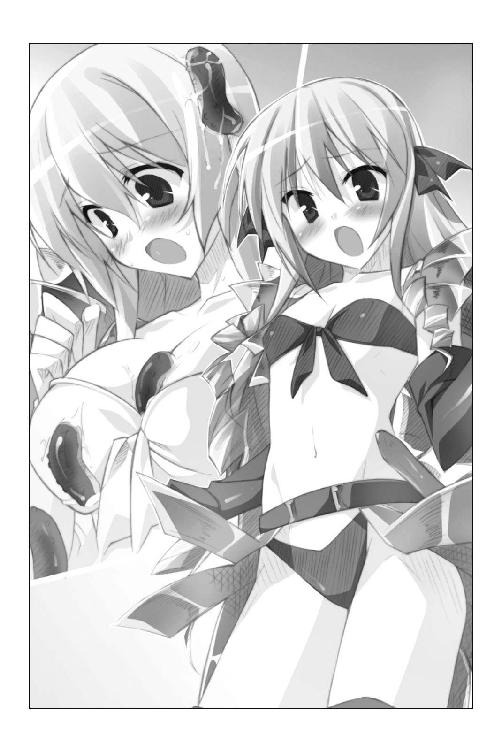
トラップに引っかかるたびに恭太郎の心拍数は乱高下。血圧は急上昇。興奮を抑えるのに全勢力を傾けねばならなかったのである。
「なんだこれは。新手のイジメなのか......？ 神が与えた試練なのか......？」
三〇分も経った頃には、恭太郎は精も根も尽き果ててグッタリ。何度も生殺し状態を続けられれば疲れるに決まっている。
いっぱい恥ずかしい目に遭わされてしまったレイシアも、ちょっぴり疲れているようだった。悲鳴を上げすぎたせいでノドがかれたのか、ケホケホと咳き込みつつ、
「まだ女神さまが祀られている祭壇には辿り着かないのでしょうか......？」
ただ一人だけ元気なエリスは、大またで洞窟の奥へと歩き続ける。
「なにをやってますのっ！ さっさと先に進みますわよっ！」
だが、すぐに足を止めた。彼女の視線の先には暗がりが広がっている。
「......どうかしたのか？」
ランプ代わりに壁に作りつけられていた光を放つクラゲの水槽が、エリスの周囲には無くなっていた。真っ暗闇が恐いから歩みを止めたのかと思ったが――違ったようだ。
暗がりを見据えて、第三王女は呟く。
「どうやら、最深部に到達したようですわね」
恭太郎もエリスにならって暗闇に目を凝らしてみる。
闇に溶け込んでいたため、すぐには気付かなかったけれど、目の前に巨大な黒い扉がそびえ立っていた。
半魚人やマーメイド、大蛸や海竜などなど――海に棲まう魔物たちが彫刻され、表面を海水が伝っている。
扉の上には文字が彫られていた。
恭太郎はトレクワーズ王国の文字を日本語を読むように読むことができる。たぶん、この世界に恭太郎を召喚した女神が与えてくれた力だろう。
そこには、こんな文字が刻まれていた。
『ゴール！』
（神さまを祀っている神殿だったら、もう少しありがたみのある言葉を書いてもいいんじゃないのか......？）
だが、エリスは気にせず扉を開こうとし始めた。
「ちょっと恭太郎っ、あなたも手伝いなさいっ！ レイシアもっ！」
三人がかりで力を込めると――ゴゴゴゴゴゴゴゴゴ。
壁のようにそそり立つ扉がうっすらと開いていく。
帯状に光が差し込んで、やがて目映い光が弾けた。
「これは、すごいな......」
扉の向こう側には、海が広がっていた。
いや、もう少し正確に言うと、海のように見える空間だ。
高校の体育館ほどの広さはあるだろうか。白い岩を削りだして作ったような部屋には、海底のように無数の珊瑚が飾られている。
天井は水族館のようにガラス張りになっていて、魚の群れが泳いでいるのが見えた。青い海を透過した日光が、ゆらゆらと床の上で揺らめいている。
まるでダイビングでもやっているかのような気分だった。
「素敵ですね......。とっても綺麗......」
羽ばたくように優雅に泳いでいくエイを見上げて、レイシアは感嘆の息を漏らす。
だが、エリスだけは別の場所を見ていた。
「ありましたわ......！」
部屋の一番奥は、階段状に連なった珊瑚によってステージのようになっている。
そこには祭壇が据えられており――一条の光に照らされた藍色のグラスが海よりも深い青色に輝いていた。
「あれが誘惑の聖杯ですのね......」
「ゆうわくのせいはい？」「なんなんですか、それは？」
「なななな、なんでもありませんわっ！ おほほほほっ！」
明らかに不自然なくらいに動揺して、エリスは誤魔化し笑いをした。
どちらかというと鈍感な恭太郎でも、さすがに気づく。
（怪しいな......。なにかを隠してるんじゃないのか？）
だが、エリスは訝る恭太郎を無視して、
「あのグラスのようなものが、女神のご神体なんですの。お参りしますわよ！」
祭壇のようになっている部屋の奥へと進んでいく。
そのとき、である。
バーソロミュー洞窟に仕掛けられた、最後のトラップが発動した！
突如、部屋の中心辺りに巨大な魔法陣が出現。青く不気味に輝いたかと思いきや、
きゅ～～～～～～～～～～～～～～～～～～～～っ!!
甲高い鳴き声のようなものが木霊して――魔法陣から怪物が出現した。
筒状の白い胴体。尖った三角形の頭。ガラス玉のようなつぶらな黒い瞳。吸盤のついた一〇本の足。
どこからどう見ても――イカだ。
しかも、リアルなイカではなく、かわいらしくデフォルメされた丸っこい容姿をしている。あたりめのパッケージにでも描かれていそうだ。
問題なのはそのサイズである。
恭太郎の三倍はあろうかという大きさなのだ。優に五メートルは超えるだろう。
レイシアが感動したように呟いた。
「海王とも呼ばれる伝説の魔物《クラーケン》です......。私、初めて見ました......。大きさからいって、まだ子どもみたいですけれど......」
って、オトナになったら、どんな大きさになるんだよ、コイツは。
「フン、クラーケンだろうがなんだろうが、関係ありませんわっ！」
木剣を引き抜いて、エリスは切っ先をクラーケンへと向けた。
王女らしい威厳を漂わせつつ、堂々と言い放つ。
「私はトレクワーズ王国の第三王女、エリス・レムリス・トレクワーズですわ！ この私の行く手を遮ることは何人たりとも許しませんっ！ 即刻、立ち去りなさい！」
だが、クラーケンは動じるようすもなかった。
一番右端に生えている触手でエリスを指して――きゅっ！
そして、祭壇の上のグラスをを指して『きゅっ！』、次にクラーケンは自らを指して『きゅっ！』と鳴く。そのようすは『おい、おまえ！ あのグラスが欲しかったら、俺を倒してから行くんだな！』と言ってるようにも聞こえた（というか、そもそもイカはきゅーって鳴くのか？）。
「この私に楯突くつもりですのね......。イカ風情がナマイキですわ......」
眉をつり上げて、エリスはクラーケンを睨み付ける。
「後悔させて差し上げますのッ！」
長いブーツで床を蹴った。放たれた矢のように木剣でクラーケンに斬りかかる。
イカの怪物も触手を伸ばして応戦。
エリスは木剣を振るい、雨のように降り注ぐ触手の攻撃を防ぎきる。
幼い頃から剣術を学んでいる恭太郎ですら感動するほどに、エリスの剣の腕前は見事なものだった。
彼女は普段は大鎌の使い手だ。だが、恐らく剣術も習っていたのだろうな。
《トレクワーズの五美姫》は一騎当千の力を持つとして、諸外国でも有名だという。その名に恥じない戦いぶりだ。
しかし、エリスの顔がしかめられていく。
敵の攻撃は全て防ぎきっているものの、全く近づくこともできないのだ。
そして、恭太郎は気づく――あのイカ、三本しか触手を攻撃に使ってない！
悠然ともう一本の足を持ち上げて、エリスに向かって放つ！
四本目の触手は木剣で受けきることができなかった。
吸盤が左腕を覆っている長い手袋に吸い付く。このままでは腕がもぎ取られる!?
だが、一瞬早くエリスは手袋を脱ぎ捨てた。バックステップをして距離を取る。
「きゅっきゅー♪」
クラーケンは手袋をヒラヒラと振って見せた。戦利品でもゲットしたかのように、後ろに隠した宝箱の中に大事にしまう。
プライドを傷つけられたのか、エリスの頬がひくひくと引きつった。
「絶対に許しませんわ......！ 魔法なんか使えなくたって倒してみせますのっ！ レイシア姉さま！ 恭太郎！ 手を貸しなさいッ！」
木剣を手に、エリスは再びクラーケンに挑んでいく。
「お、俺もやるのかよっ!?」「は、はいっ！」
訳もわからないまま、恭太郎も木剣を抜いた。レイシアと共に駆け出す。
結論から言おう――海王の名は伊達ではなかった。
クラーケンは凄まじく強かったのだ。
触手による攻撃は、嵐のように苛烈だ。吸盤にくっつけられて、得物を奪われないようにするのが精一杯。胴体に近づくこともできない。
しかも、恭太郎は絶望的な事実に気づいた。
「きゃあっ！」「な、なにをしますのっ！」
隙を見つけては、レイシアとエリスが身に着けていた防具を次々と奪っていたのだ。
「きゅっきゅー♪」
ブーツや肩当てをゲットしては、うれしそうに宝箱の中にしまっていく。
コイツ、脱がすのが目的なのかよ!?
「か、返してくださいっ！」「このエロクラーケンっ！」
レイシアとエリスが挑みかかっていくが、返り討ちにされてさらに防具を奪われてしまう。手袋、ブーツ、腰当て――順番に触手に絡め取られて。
「いや～～～んっ！」「きゃあんっ！」
レイシアとエリスの悲鳴が響いた。
彼女たちの胸元を覆っていた布地もはぎ取られてしまったのだ。たまらず、二人とも胸を押さえてしゃがみ込んでしまった。動いたら見えてしまう！ これじゃ戦えない！
「きゅきゅきゅきゅ...！」
クラーケンは残った一枚もはぎ取ろうと、二人に近づいていく。
「そうはさせるかっ！」
動けない姫たちに代わり、恭太郎は海王に挑みかかった。
クラーケンは男相手には容赦がなかった。一度に八本の触手を振り回す！
「負けるかっ！ うおおおおおおおおおおおおっっっ!!」
小刻みに木剣を振るって、その全てを弾き返した。
「行くぞ......!!」
剣を中段に構え、ガラス玉みたいなクラーケンの瞳を睨み返す。
「神来流剣術・三の太刀――」
白い床を蹴った。
「――紫電!!」
鋭い突きを連続的に放つ！ 切っ先が分裂したようにクラーケンに迫る！
「きゅ――――っ!!」
イカの怪物が叫んだ。刹那、手に感じる重い手応え。
（やったか!?）
そう思ったのも束の間――びょるるるっ！
いつの間にか近づいていた触手が、恭太郎の足首に絡みついた。
クラーケンの本体に攻撃は当たっていなかった。触手四本が力が抜けたように、床にだらりと垂れ下がっている。
「きゅー！ きゅー！」
『痛かったじゃないか、このやろうっ』と抗議するように鳴いたクラーケンは、恭太郎を空中に持ち上げた。
そして――ぶしゅ～～っ!!――墨を吐きかけてきた。
「わっぷ!?」
慌てて顔を手で覆ったから、目に入るのは避けられた。だが、全身が真っ黒だ。
「きゅーきゅーっ！」
恭太郎は足首を掴んで振り回され、壁に向かって投げつけられた。背中をしたたかに打ち付け息が詰まる。
クラーケンは動かなくなった触手を引きずりながら、身動きが取れずにいる二人の姫へと近づいていく。
（マズイぞ、このままじゃ......！）
しかし、焦る恭太郎の耳に高飛車なセリフが聞こえてきた。
「よくやりましたわ、恭太郎！ これで戦えますのっ！」
エリスは立ち上がっていた。木剣を片手で握り、切っ先をクラーケンに向ける。
（って、立ち上がったら見えちゃうだろ!?）
慌てて目を逸らそうとした恭太郎だったが......ん？ なんだあれ？
エリスの胸元がなにかに覆われている。
手のようなカタチで黒いものが――って、あれは墨じゃないかっ！
クラーケンが噴いた墨汁を塗りつけて、胸を隠してるのだ。
ははあ、なるほど。考えたものだなあ。ボディペイントならならクラーケンに剥ぎ取られる心配もないぞ......って、待てー！ それでいいのかよ!? よぉく見ると、ポチッとなにかが膨らんでるしって、見ちゃダメだろ俺！
レイシアもエリスにならって、爆乳に墨を塗りつけて立ち上がる。だが、妹と違って彼女は真っ赤な顔をしていた。
「あ、あの、エリス......。これなら確かに見えませんけれど......その......恥ずかしくないですか......？」
「フン、あんな軟体動物なんかに負けたままの方が恥ずかしいことですの！ 行きますわよ、お姉さまっ！」
木剣を構え、エリスが駆け出して行く。
身に着けているのは、ローレグ気味な黒い水着だけ！（胸を覆ってるのは墨汁！）
「ええ――いっ!!」
仕方ないと言ったようすで、レイシアも剣を手にクラーケンに挑みかかる。
胸を締め付けるものがなにもないから、爆乳がたゆんたゆんと揺れまくり！ 目のやり場に困り過ぎるってー!!
「きゅ～～～～っ!!」
クラーケンは触手を振り上げて応戦しようとする。
しかし、そのうちの四本は恭太郎が無力化していた。
レイシアが触手を引きつけているうちに、エリスが本体へと肉薄する。
「覚悟なさいっ！ はぁ――っ!!」
裂帛の気合いと共に木剣を一閃！ 三角形の頭をぶん殴った！
「ぅきゅ～～～～～～っ？」
断末魔の悲鳴をあげてクラーケンは卒倒。
巨体を受け止めるように魔法陣が出現し、イカのバケモノは姿を消した。
「おーっほっほっほ！ 大勝利ですのっ！ 海王、恐るるに足らずですわーっ！」
レイシアは恭太郎の方に駆け寄ってきた。
倒れている王仕の顔を心配げに覗き込んでくる。
「恭太郎さまっ、大丈夫ですか......？ お顔が真っ黒です、おいたわしい......」
ぷるぷると柔らかそうな爆乳が目の前に迫る。
墨が塗りつけられているから隠れているようにも見えるけれど......その先端にはぽつっとなにかが見えていてっ！
「れれれ、レイシアっ！ 胸っ！ 隠してくれっ！」
「あっ、申し訳ございません......」
二人がそんなやり取りをしている間に、エリスは階段状になっている珊瑚を駆け上っていった。祭壇の上に載っているグラスを手にとって高々と掲げる。
「誘惑の聖杯を手に入れましたわっ！ これで王座は私のものですのっ！」
レイシアと顔を見合わせた。
「なんなんだろうな、いったい......」
「わかりませんが、女神さまが祀られているというわけではなさそうですね......？」
そのとき――ゴゴゴゴゴゴゴゴゴ。
不吉な地響きが辺りを揺るがした。
（はあ、今度はなんなんだよ......。いい加減にしてくれ......）
直後、彼の目に映ったのは――ガラス張りの天井が左右にゆっくりと開いていく光景。
エリスの頭上に大量の水が降り注いだ。
「きゃあああっっ!!」
津波のように押し寄せる海水に三人は流されてしまう。
どこをどう流されたものか、いつの間にかウォータースライダーのようなチューブ状のスロープへと放り込まれて。
「うおおおっ!?」「なんですの、これはっ!?」「め、目が回りますぅぅ～～！」
三人一緒にスライダーを滑り続けて――突然、空中に放り出される！
――ぽよよよんっ。
落下した恭太郎が感じたのはゼリーのような感触だった。
柔らかななにかが、緩衝材となって彼を受け止めてくれたのだ。
目眩がする頭を押さえつつ、辺りを見回してみる。
ピンク色の大きな貝殻の上に、透明なゼリーがマットのように敷かれていた。マットの端には同じようにゼリー状のクッションが三つ並べてセットされている。
『うぅ～～ん......』
恭太郎のすぐ近くで、双子姫の声がハモった。二人も同じように流されて、マットの上に着地したのだろう。恭太郎の前に仲良くうつぶせで倒れている。エリスは青いグラスをギュッと握りしめていた。
「ここはどこでしょうか......？」
「目が回りましたわ......」
レイシアとエリスは同時にカラダを起こそうとする。
マットの上に座ったまま、慌てて回れ右！
「ちょっ、二人とも胸を隠してくれぇっ！」
水に流されたせいで、胸元に塗っていた墨が取れてしまっていたのだ。ほとんど全裸じゃないかよ、二人とも！
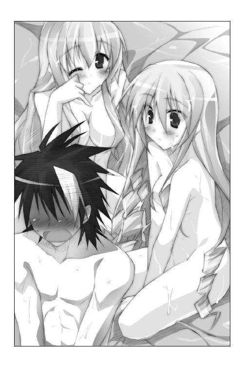
クッションのようなゼリーの塊の傍らに、小さな貝殻のようなものが置かれていることに気づく。貝の裏には、こんなことが書かれていた。
『マクラは三つ用意しておきました。
ごゆっくりお楽しみください 王国のため、よいお世継ぎをつくってくださいませ
なお、みなさまの着替えはベッドの後ろに置いてありますので。
アメルダより』
アメルダというのは、入り口にいた人魚の名前だ。
ふむ。なるほど。このゼリー状のマットはベッドなんだな。つまり、俺は今、ほぼハダカのお姫さま二人とベッドの上にいるってワケだ。あははは。ふざけるな。
「エリス、なんなんだよ、この洞窟は！ 本当のことを教えてくれよ！」
「わ、私だってよくわかりませんわ！ ピコルに入れと言われただけですのっ！」
ＯＫ。その返事だけで、大抵のコトはわかったよ......。
努めて冷静を装いつつ、恭太郎は二人のお姫さまに声を掛けた。
「着替えが用意してあるそうだ。目をつぶっているから、二人は先に着替えてくれよ」
あられもない格好の美少女とベッドの上にいる――それだけで健全な青少年ならドキドキしてしまうであろう。
ましてや、恭太郎はさんざんえっちなハプニングに翻弄され続けてきた。幾度となくエリスやレイシアと密着してしまい、そのたびにムラムラさせられてしまったのだ。
恭太郎は自らを身持ちの堅い男だと自負しているけれど......今、お世継ぎづくりを迫られたら拒みきる自信はない。厳格に育てられたとはいえ、彼とて人の子なのである。
目を閉じて、祈る。
（頼むよ、素直に服を着てくれ......！）
「フン、こっちを見たら承知しませんからねっ」
エリスがベッドから降りる気配がした。ゼリー状のマットレスがぷよんと動く。
ほっとしたのも束の間、すぐ背後に人の気配を感じた。
「恭太郎さま......あの......私......」
レイシアが後ろから抱きついてくるみたいにしなだれかかってきた。
背中に爆乳が押し当てられる。ナマ乳の感触は気が遠くなりそうなくらいに柔らかくて......それだけで脳が沸騰しそうだった。
「お願いが......あるんです......」
熱っぽい吐息が首筋をくすぐって、ぞくっとした快感が腰の辺りへと駆け抜ける。
「お、お願いって、なんなんだ......？」
レイシアは五人の姫の中でも、一番お世継ぎづくりに熱心だ。ベッドの上でするお願いなんて、一つしかないじゃないかっ。なにをしてるんだ、恭太郎っ。
レイシアを突き飛ばしてでも逃げ出すべきだろう。このままでは流されてしまうぞ！
理性はそんな風に叫んでいたのだけれど、カラダが動かなかった。
今すぐに振り向いて、レイシアを抱きしめたい――そんな衝動がわき上がってくる。なにを考えてるんだ、このケダモノめっ。
レイシアはさらに恭太郎に抱きついて、首筋の辺りに額をつけてきた。王女さまもドキドキしているのか、ちょっぴり呼吸が荒くなっている。
彼女の温かさを感じる。レイシアも高ぶっているのかな。体温が高いような――
そこで、気づく。レイシアのおでこ、熱すぎないか？
「すごい熱じゃないか！」
「これぐらいどうってことありません......平気で...す......」
「平気なワケないだろ！」
恭太郎は肩越しに振り返った。
第二王女の目は虚ろだ。顔は赤くなってしまっている。荒い息を吐きつつ、
「すみません......ちょっぴりツラくなってきたので......着替えを手伝っていただけると......うれしいで......す......」
そのままゼリー状のベッドに倒れ込んでしまった。
「エリス！ レイシアを着替えさせてやってくれ！」
衝立のようになっているピンク色の貝殻の後ろから怒鳴り声がする。
「ど、どうして私が!?」
「いいから、早く！ レイシアが倒れた！」
「なんですって!?」
×××
深夜。キュアナ。王家の別荘。
ヤシの木の茂る庭に、木刀が風を切る音が響く。
冴えざえとした月光の下、恭太郎は一心に素振りを続ける。
「――九九八、九九九、一〇〇〇！」
日課としている一〇〇〇本の打ち込みを終えた。本来なら夕刻に行うのだが、いろいろあって深夜になってしまったのだ。
呼吸を整えつつ庭石の上に腰掛け、タオルで汗を拭う。
微かな潮騒と心地よい海風が汗ばむ身体を包んだけれど爽快感はなかった。
「なにをしてるんだよ、俺は......」
ため息混じりに独りごちる。
医師の診察によるとレイシアが倒れた原因は過労だそうだ。
疲れがたまりすぎたために熱を出してしまったらしい。
三日間のおやすみを作ろうと、彼女は徹夜で政務を片付けたそうだ。そんな体調でびしょ濡れになってダンジョン探索をすれば倒れてしまうに決まってる。
（俺はレイシアが疲れてるって知っていただろ。彼女をもっと気遣ってやることができたはずなのに......）
「情けないな......」
この世界に残ると決めたのは、なんのためなんだ？
彼女たちを助けてやりたいと思ったからじゃないのか？ それなのに、鼻の下を伸ばしてるばかりで、レイシアの不調にも気づいてやれないなんて......。
「本当に情けない......」
明かりの消えているレイシアの部屋の窓を見上げ、恭太郎は唇を噛んだ。
そのときである。レイシアの部屋に明かりが灯った。
どうしたんだ？ 彼女は寝込んでいるんじゃないのか？
魔法灯のオレンジ色の光が、カーテンに人影を映し出している。レイシアが起き出しているようだ。影はゆらゆらと動いていた。
夜半過ぎに婦女子の部屋を訪れるなんて、本来ならすべきじゃないけれど。
どうしても気になって、レイシアの部屋を訪ねてみることにした。
「こんな遅い時刻に、どうして私の寝室へ......？ ケホケホ......」
恭太郎が部屋を訪れたとき、レイシアはベッドの上で身体を起こしていた。彼女の傍らには書類が山のように積まれている。
体調を崩しているにもかかわらず、レイシアは書類に目を通していたのだ。
熱が高いのだろう。潤んだ瞳でぼーっと考えていたレイシアは、「あっ」と小さく声を上げた。
「夜這いに来てくださったんですね。申し訳ありません。こんな格好でケホケホ......」
照れくさそうに、レイシアは薄いブルーのパジャマの上に羽織ったカーディガンをかき合わせた。
咳き込みながらもベッドから起き上がろうとする。
「しばらく待っていただけますか......。ピコルさまが用意してくださった殿方が喜んでくださる衣装に着替えますので......ケホケホケホ」
「着替えなくていいよ」というか、どんな衣装を用意したんだよ、師匠は。
「このままの格好でよろしいんですか？」
熱のために赤くなってしまっている顔を、さらにピンクに染めつつ、レイシアはパジャマの中を覗き込む。
「あ、あの......いまつけている下着はあまりかわいくないので......ケホケホ......笑わないでいただけるとうれしいです......ケホケホっ」
「夜這いに来たわけじゃないんだって」
起き上がろうとするレイシアを押しとどめる。
「明かりがついていたから、気になったんだ。寝てなきゃダメじゃないか......」
「片付けなきゃいけないお仕事が残ってますから......。うふふ、大丈夫です。三時間もあれば今日の分は終わりますっ」
レイシアは気丈に笑顔を見せたけれど、すぐに咳き込み始めてしまう。とても辛そうだ。
「頼むから身体を休めてくれよ」
「で、でも......」
困ったように、レイシアはベッドの上に積まれた書類の束を眺める。
「いいから。眠るんだ」
少しだけ強めの口調で言って、恭太郎は勝手に書類を片付けさせてもらった。眉をハの字にしてるレイシアをベッドに横たわらせ、肩まで毛布を掛けてあげる。
第二王女は上目遣いで恭太郎を見上げ、「うー...」とかわいらしく唸った。
「強引ですね、恭太郎さま......」
「こうでもしなきゃ、きみは寝てくれないだろう？」
「だって、大切なお仕事ですから......」
レイシアはなおも名残惜しそうに書類の束を眺めている。
（部屋から出て行ったらまた仕事を再開しそうだな......。少しだけ居座らせてもらうか）
恭太郎はスツールをベッドサイドに引き寄せて、レイシアの傍らに座った。
なんだか居たたまれない気分になって、ちょっぴり汗ばんでいる王女の額を手の甲で優しく撫でてあげる。
驚いたように見上げてくるレイシアに質問してみた。
「どうしてそんなに無理しようとするんだ？ 苦しいときくらい休めばいいじゃないか」
「苦しくても、無理でも、私は頑張らなくちゃいけないんです......」
熱っぽく潤んだ瞳は、真剣そのものだった。
「私は王女ですから......。トレクワーズ王国の第二王女ですから......」
いくども咳き込みながら、レイシアは続ける。
「愛する国民のみなさんのために私はいるんです......。国民のためなら私はどんな犠牲も厭いません......」
きっと――恭太郎は思う。
レイシアがお世継ぎづくりに一番熱心なのも、同じ考えからなのだろう。
別世界からやって来た見ず知らずの男とお世継ぎをつくるなんて、普通の女の子にはできないことだ。
国民のためなら自分は犠牲になっても構わない。そんな風に思っているからこそ、レイシアは貞操を捧げてもいいって思っているんだろう。
それはそれで、とても立派な考えだと思う。トレクワーズ国民が聞いたら泣いて喜ぶかもしれない。
だけど、恭太郎はひどい違和感を覚えた。
「なあ、レイシア......。もっと自分を大切にしてくれないか？」
「え......？」
横たわるレイシアを真っ直ぐに見据えて、恭太郎は続ける。
「王女だからって、レイシアが犠牲になっていいはずがない。誰かの犠牲の上に成り立つ幸せなんて間違ってるよ」
「でも、王女というのは、そういうものですし......」
「少なくとも俺にとっては、レイシアは王女さまである以前に一五歳の女の子だよ」
恭太郎はトレクワーズ王国とは違う別の世界から来た。だから、王制とか王女さまとか......そういうものの存在が理解できていないだけなのかもしれないけれど。
「せめて俺の前では無理をしないでくれ。苦しかったら苦しいって言ってくれよ。そしたら、助けてやれるから」
潤んだ瞳で、レイシアは恭太郎を見上げ続けていた。
掠れるような声で、微かに呟く。
「そんなこと言われたの......初めてです......」
こっ恥ずかしいコトを言ってる気がして、急に照れくさくなった。頭を掻きながら、冗談めかして続ける。
「ほら、俺は女神さまが選んだ救世主なんだろう？ だけど、お世継ぎづくりは手伝ってやれる気がしないからさ。せめて、レイシアが困ってるときくらいは、俺に助けさせてくれよ。いいだろ？」
彼女たちを助けてやれるなら、この世界に喚ばれた意味もあるってものだからな。
「恭太郎さま......」
熱が上がってしまったのだろうか。レイシアの顔が、さらに赤くなってしまう。
ぽーっと恭太郎を見つめていたが、おずおずと言った調子で口を開いた。
「それでは、その......ワガママを言ってもいいですか？」
「ああ、いいよ。なんでも言ってくれ」
「私が眠るまで、ここにいてくださいませんか？」
「もちろん、構わないよ。また仕事をはじめないように見張ってなきゃな」
「うふふ、大丈夫です。もう無理をしたりしませんから......ケホケホ......」
口元に手を当てて咳をする。レイシアは相変わらず苦しそうだ。
恭太郎は、ふと昔のことを思い出して――
「もし、イヤじゃなければ......こうしてていいか？」
布団から出していたレイシアの手をそっと握ってあげた。
姉上は容赦なく厳しい人だった。真冬に滝行をやらせたり、寒中水泳と称して凍った湖に突き落としたり――児童虐待スレスレのことをしょっちゅうやらせたのだ。何度死を覚悟したかわからない。
そんな厳しい姉だったけれど、風邪を引いて寝込んだ時だけは違った。
『軟弱だから風邪を引くのです！ 修行が足りません！』
口では厳しいことを言いながらも、恭太郎が寝付くまで手を握っていてくれたのだ。
手のひらを通じて感じた姉のぬくもりは、苦しさを忘れさせてくれたような気がする。
風邪を引いたレイシアのためにしてやれることは少ないけれど、ちょっとでも楽になって欲しかったから。同じことをしてあげようと思ったのである。
「俺にはこんなことしかできないけどさ」
「いえ......すごく、うれしいです......」
レイシアは潤んだ瞳で恭太郎を見つめ、微かに笑顔を浮かべた。
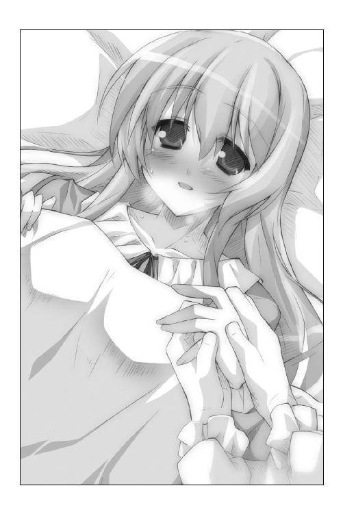
どれくらい、そうしていただろう。
ふいに、レイシアが質問をしてきた。
「あの......恭太郎さま？」
「どうした？」
「本当に恭太郎さまは、お世継ぎをつくってくださらないんですか......？」
「そりゃあまあ......好きあってもいない女の子と、そーゆーコトをするワケにはいかないからな」
「ということは、好きあっていたなら、お世継ぎをつくってもいいんですね......？」
「それはそうだけど......」
「うふふ、それを聞いて安心しました......」
繋ぎ合っている手に、レイシアは少しだけ力を込めてきた。
「私......お世継ぎがつくれるように......がんばります......」
「だから言ったろ、自分を犠牲にするなって」
「はい......。私、もう無理をしたりしません...から......」
どういう意味なのか、恭太郎にはよくわからなかった。
そのままレイシアは眠りに落ちてしまったから、聞き返すこともできない。
だけど、王女さまの寝顔は安らかだった。
「俺も、少しは役に立てたのかな......」
×××
夜。王家の別荘から五〇〇メートルほど離れた丘の上。
木立の中に隠れるようにして、真っ赤な髪をツンツンと立てた少女が腹這いに寝そべっていた。眼帯をつけていない方の目で望遠鏡を覗き込んでいる。
もし彼女の姿を誰かが見たなら、幼年学校の宿題で星の観察でもしているのかと思うところであろうが――観察対象は星空ではなかった。
「入り口の歩哨は五人か......交代のタイミングもきっちりずらしてやがる。意外にちゃんと警備してやがるな」
干し肉をナイフで削って囓りながら、カルタギア帝国の将軍ムージは独りごちる。
「魔力を封じてなけりゃ、あんなヤツら屁でもないんだがなあ......悔しいぜ」
そのとき、背後で微かな足音が聞こえた。すぐさま立ち上がり、ナイフを逆手に持ち替える。戦闘準備を整えるまでの所用時間はコンマ数秒。ムージは優秀な戦士なのだ。
が、将軍はナイフをしまった。人懐こい笑顔を浮かべる。
「キストかよ。脅かさないでくれ。危うく首をかっさばくところだったぜ」
黒いローブを纏った少女が無表情のままで、問いかけてきた。人形のように整った容姿の美少女だが、彼女もカルタギア帝国の将軍である。
「どうだ。王仕のようすは？」
「ダメだ。一人で出歩くようすはないな。そっちの首尾はどうなんだ？」
「ああ。ユフィナとの接触に成功した」
「順調ってことか。ユフィナの方は簡単に片づけられるかもしれないな。......どうせならオレの手でぶっ殺したかったんだけどさ」
「そう言うな。これは作戦なのだ」
「わかってるよ。あくまでもメインは神来恭太郎だからな」
つまらなそうに鼻を鳴らしながら、ムージは黒いローブの将軍の背後を見上げる。
背の高いハンサムな男性が立っていた。男は青いローブを纏っている。
肩を竦めながら、ムージは声を掛けた。
「ま、よろしく頼むぜ、《ガイルーン》さんよ......」
ハーレム講座☆ピコルの穴！ その３！
ピコル（以下、ピ）「ハーレム講座☆ピコルの穴！ その３なのじゃーっ！」
アレスタ（以下、ア）「よろしくお願いしまーす！」
ピ「ではでは、さっそくはじめるのじゃ！ またもや送られて来た質問に答えるぞい！」
ア「えっちな質問でお願いしまーす！」
○質問
正直に答えてくれ。バーソロミュー洞窟って、なんなんだ？
いったい、なんのために存在するんだよ？
都合よく色っぽい展開になりすぎだろ！ 俺を殺す気かーッ！
ＰＮ．サムライボーイ
ピ「ふむふむ、これもよい質問じゃのう」
ア「えっちなトラップがいっぱいでしたよね。ドキドキしちゃいましたよ、フシシシっ」
ピ「エロエロな展開になるように、全てのトラップが仕掛けられておるのじゃ」
ア「クラーケンの攻撃も着ている服ばっかり狙ってきてたよね」
ピ「あのクラーケンは、王女さまをハダカにむいてしまうように訓練されておるのじゃ。男の衣服は絶対に狙わぬ」
ア「どうしてステキなことするんですか？」
ピ「一緒にダンジョンに入った王仕さまをえっちな気分にさせるためじゃ」
ア「えっちな気分......あ、もしかして！」
ピ「ふふふ......わかったようじゃの。当然ながら、全てはお世継ぎづくりのためじゃ！ バーソロミュー洞窟は『なかなかその気にならない王仕を、その気にさせるために作られたアミューズメント施設』なのじゃよ！」
ア「うわー、やっぱりそうなのかー！」
ピ「トレクワーズ数百年の歴史の中には、恭太郎と同じようにお世継ぎづくりを拒むオクテな王仕もおったのじゃ」
ア「もったいない。僕なら喜ぶのに......」
ピ「そんなオクテな王仕を気に入ってしまった姫が利用するのが、バーソロミュー洞窟なのじゃ。ドキドキなトラップ＆ハラハラな冒険を姫と一緒に乗り越えれば、大抵の王仕は最後に用意されたベッドで姫を押し倒してしまうのじゃ！」
ア「くあー、うらやましい！」
ピ「しかも、じゃ。バーソロミュー洞窟には《誘惑の聖杯》も安置されておる」
ア「誘惑の聖杯はどんな効果があるんですか？」
ピ「まだ、ナイショじゃ。だが、これだけは教えてやろう。誘惑の聖杯は、お世継ぎづくりのための最強のマジックアイテムの一つなのじゃ！ ふゥはははー！」
ピ「どんな効果があるんだろう!? 気になるー！」
ア「さてさて、もう少し時間があるようじゃ。二つめの質問に答えるのじゃー！」
○質問
しつもんがありまーすっ！
《せーかんたい》ってなんですか？
ＰＮ．禁呪詠唱☆メルルちゃん
ア「えっちな質問キター！ さすがメルルさま！」
ピ「ペンネームの意味をなしてないのう......。まあよい《性感帯》についてじゃな」
ア「ムフフ、僕も知ってますよ。触られるとえっちな気分になっちゃうカラダの部分のことですよね？」
ピ「その通りじゃ。そこを重点的にイジってあげると、お姫さまも喜ぶじゃろう」
ア「うひゃー、イジりたーい触りたーい！ ......でも、お姫さまたちのどこを触れば感じちゃうかなんて、わからないですよね......」
ピ「いや、それは調べがついておるのじゃ！」
ア「まままま、マヂですかっ!?」
ピ「うむ。今回は特別に教えてやるのじゃ！」
ユフィナ：耳 レイシア：胸 エリス：首筋
アルト：おしり メルル：ふともも
ア「むひょー！ 想像しただけでテンションあがってきた！」
ピ「お姫さまに夜這いを掛けたときは、ぜひぜひこの部分を攻めて差し上げるがよいのじゃ。メロメロになってしまうに違いないのじゃー！」
ア「頑張りますっ！ ......ちなみに、ピコル師匠はないんですか？」
ピ「吾か？ 吾はわき腹が弱いのじゃ。すーっと撫で上げられると、立っていられ無くなって......ひゃうんっ」
ア「わあ、本当なんだっ！」
ピ「ば、馬鹿者っ！ こんなときに触るヤツがあるか......はぅうんっ」
ア「えろーい！ これはえろーい！」
ピ「調子に乗るでないわーっ！」
ア「ぎゃわー！ 教鞭が頭に刺さってます！ 刺さってます！」
ピ「本日はここまで！ また次回をお楽しみにー！ コイツめ、コイツめっ！」
ア「ぐりぐりしないで、めっちゃ痛いからー!?」
第四章 三日目は無人島でドキドキ
ちゅんちゅん、ちちちちち――。
翌朝。軽やかな鳥の鳴き声で恭太郎は目を覚ました。
朝日が背中を照らしている。柔らかな朝の日差しは温かくて心地よかった。
――いや、背中だけじゃない。頬の周りも柔らかくて温かいなにかに包まれていた。しかも、すごくいい匂いがする。
枕、だろうか。すごく触り心地がいい枕だなあ......。
感触を楽しむように、すりすりと頬を埋めてみる。
すると、「ん...っ」とかわいらしい声が耳をくすぐった。
「恭太郎さま......」
って、ちょっと待て。なんでレイシアの声が聞こえてくるんだ？
目を開き、自らの置かれている状況を把握した恭太郎は固まった。
ここはレイシアの部屋だ。恭太郎はベッドサイドのスツールに腰掛けてる。彼女をお見舞いしたときと同じ状態だ。
で、恭太郎はスツールに座ったまま、ベッドの方へ突っ伏していた。
彼女が寝るまで手を握っていてあげようと思ったら、そのまま俺も寝てしまったんだな。婦女子の部屋で一夜を明かすなんて、本来ならその場で割腹すべき状況だが――きっと俺も疲れていたんだろう。百歩譲って、ついつい眠り込んでしまったことは許してやろう。うん。
問題は――もにゅんっ
突っ伏している恭太郎の顔を、レイシアがぎゅっと抱きしめていることだった。
つまり、爆乳に顔を埋めることになっちゃうワケで！ パジャマ越しに凄まじく柔らかい感触がががががが！
「むにゅむにゅ......Ｚｚｚｚｚｚ......」
レイシアは気持ちよさそうに眠っている。寝惚けて抱きしめているんだ。
慌てて身体を離そうをするのだが――むぎゅぎゅぎゅっ。
もう絶対に放さないと決めたみたいにレイシアは抱き寄せてくる。
うおおおお、気持ちよすぎる！ じゃなくて、どうすりゃいいんだ、俺は!?
そのとき、事態は最悪の方向へと展開した。
「おはよ、レイシア。気分はどう？」
ドアを開けたユフィナと目が合った。
「って、恭太郎!? なにしてるのよ、あんたっ！」
レイシアの胸に顔の半分を埋めたまま、恭太郎はユフィナに軽く手を上げた。できるだけ刺激しないように努めて冷静に朝の挨拶をする。落ち着くことが大切だ。
「やあ。おはよう、ユフィナ」
「......言い残すことは、それだけ？」
ゴゴゴゴゴゴゴゴ......。ユフィナの背後に怒りの波動みたいなものが立ち上る。
「おはようが最後の言葉なんて嫌だって！ いろいろ言いたいことはあると思うが落ち着いてくれ！ レイシアからもなんとか言ってくれ！」
「うぅ～ん、恭太郎さまったらダイタンすぎますぅ むにゃむにゃむにゃ......」
「なんだよ、そのアグレッシブな寝言は!?」
「来たれ、【烈炎神剣】！」
ユフィナは右腕を横に伸ばす。瞬く間に巨大な手甲が装着され、手には炎が立ち上る巨大な剣が握られていた。
恭太郎はなんとかレイシアの腕から逃れた。
立ち上がり、両方の手のひらをユフィナに向けて言い募る。
「待て！ 待て待て待ってくれ！ 話せばわかる！」
「問答無用よ――ッ！」
《烈火の王女》は、大剣を思い切り振り上げて――
「【火竜演舞】」
凄まじい勢いで空中に魔法陣が描かれた。同時に爆炎が刀身から迸る！
「ぎょぼあ～～～～～～っ!?」
吹っ飛ばされた恭太郎は窓を突き破り、美しい放物線を描くこととなった――
そのようすを廊下の陰から隠れて見ている人影があった。第三王女のエリスである。
「どういうことですの......!?」
エリスの肩がプルプルと震えている。それに合わせて豪奢な縦ロールも揺れた。
「浜辺では私をないがしろにして......。バーソロミュー洞窟ではレイシアばかりかまって......。あげくの果てには、レイシアの部屋で一夜を明かしたですって......!? この私を馬鹿にするにもほどがありますわっ！」
恭太郎を【裁切りの鎌】で殴ってやりたかった。ついでにたっぷりと魔法を見せつけて、いたぶって――たっぷりと自分の恐ろしさと偉大さを知らしめてやりたかった。あの無礼者を屈従させなきゃ気が済まないっ。
だけど――あのナマイキ男を屈服させるには時間が掛かるだろう。
エリスは悔しげに独りごちる。
「このままではレイシアに先を越されてしまいますわ......。もはや一刻の猶予もありませんの......！」
視線を落とす。彼女の手の中には青く輝くグラスがある。ひんやりと冷たい不思議な手触りだ。
「使うしかないようですわね......」
エリスが手にしているのは、《誘惑の聖杯》と呼ばれるマジックアイテムである。
ピコルの話が本当ならば、これを使えば簡単にお世継ぎがつくれるはずなのだ。
「レイシアに負けたりしませんわ。女王となるのは、この私なんですからねっ！」
×××
「看病してあげてたなら、早くそう言いなさいよねっ！」
それから二時間後。王家の別荘。ユフィナの部屋。
まくし立てるユフィナを眺め、恭太郎は呆れたように肩をすくめた。
「早く言えって......『問答無用！』とか叫んで魔法を放ってきたのはどこのどいつだ」
「あ、あんたが悪いのよっ！ てっきりスケベな恭太郎のことだから、レイシアにいかがわしー行為をしてると思っちゃったじゃない！」
「あのな、もう何度も言い続けてるけど、俺は自ら進んで不埒なコトをした覚えは一度もないんだよ」
ユフィナに殴られ、ちょっぴりコブができてしまっている頭を撫でた（よくコブぐらいで済んだものだと我ながら思う）。
「それは、その......アレよ、うん......。......ごめんね」
さすがに申し訳ないと思ったのだろう。小さな声で謝ったユフィナは、そっぽを向きつつ話題を変えた。
「れ、レイシアもレイシアよねっ。水くさいじゃない。言ってくれれば、いくらでも書類仕事ぐらい手伝うのに......」
大きな胸を抱えるように腕を組んで、ユフィナはため息を吐く。
「あのコ、昔からそういうトコがあるのよね......。一人で抱え込んじゃうっていうかさ。真面目で頭良いし、私なんかよりずっとしっかりしてるから、ついつい任せきりにしちゃうことも多いんだけど......」
これはついさっきのことなのだが。
まだ熱があるのに『もう大丈夫ですっ』と言い張るレイシアを休ませて、手分けして書類仕事を終わらせてあげたんだ。また無理をして倒れられたら困るからな。
恭太郎も含めた五人がかりで書類の山に挑んだ結果、一時間ほどで片付けることができた。もちろんレイシアでなければわからないことも多い。だから、ベッドの中から助言をもらいながら、だけれど。
（彼女、すごく喜んでたな......）
女官の女の子が運んできてくれた紅茶に口をつけつつ、レイシアの表情を思い返す。
ワイワイと騒ぎながら書類を片付けていく姉や妹たちを眺めて――まあ、エリスは『どうして高貴なる私がこんなことっ！』なんててキレてたけど――レイシアは幸せそうに微笑んでいたんだ。瞳にはちょっぴり涙を溜めていたっけ......。
「これからも時々手伝ってやろう。レイシアが無理しないようにさ」
「そうね。国家の一大事だもん。みんなで力をあわせなきゃ」
恭太郎の言葉に、お姉さんらしい表情でユフィナは頷いた。
「俺を呼びつけたのは、その話がしたかったからか？」
「ううん。この話はついでよ。恭太郎にちょっと相談したいことがあって......」
ドアの辺りでお盆を抱えて立っていた女官にユフィナは目配せする。
それだけで全てを理解したように、女官は一礼して部屋から出て行った。広い部屋に恭太郎とユフィナだけが残される。
恭太郎の座るソファの隣に腰掛けた第一王女は、「えへへ～」と溶けたアイスクリームみたいな締まりのない顔で笑った。
「聞いてよ、恭太郎。ガイルーンさまが見つかったの！ やっぱりキュアナにいらっしゃってたみたい！」
「......知ってるよ。浜辺で会ってるのを見かけたからさ」
「ええっ、見てたの!? うっわ、恥ずかしい～っ！」
頬をちょっぴりピンク色に染めたユフィナは、恭太郎の肩をバシバシ叩いてきた。
ユフィナは赤くなった頬を手のひらで扇ぎながら続ける。
「ガイルーンさま、事故に遭われて記憶を失っちゃったそうなの。それで、キュアナにある温泉に湯治にいらっしゃったんだって......。でも、私のことは覚えていてくれてね、『綺麗になったな、ユフィナ』って言ってくださったの！」
足をジタバタさせてる。本当にうれしいんだろうな......。
ひとしきり喜んでいたユフィナは――今度は急に不安げな表情になって恭太郎の顔を覗き込んできた。
「それでね、ここからが本題なんだけどさ......今日も会えないかって言われちゃったのよ。二人だけで......」
二人だけで会うということは――いわゆる、デートというヤツだろうか。
尋ねてみると、ユフィナはますます顔を赤くした。
「デート、なのかな？ それって......」
「一般的には、そう言うんじゃないのか？ 俺はよくわからんが」
「そうよね......う～ん、どうしたらいいんだろう......」
「なにを迷ってるんだよ？」
「ガイルーンさまのコトは憧れてるけど......いきなりデートに誘われるとびっくりしちゃうというか......。私にとってガイルーンさまは雲の上の人みたいな存在だし......」
人差し指を付き合わせつつ、ユフィナはこちらをチラチラと見やって、
「恭太郎はどっちがいいと思う？ 行くべきかな......？」
ユフィナは竹を割ったようなサッパリした性格のはずなのに、なぜか妙にウジウジしてる。そのようすが《恋する乙女》っぽく見えて――なぜか、チクリと胸が痛んだ。
（胸が痛む理由なんて、思い当たるフシはないな。きっと気のせいだろう）
不安そうなユフィナを元気づけてやるべく笑顔を作った。
「会って来いよ、ユフィナ。ガイルーンのコト、好きなんだろ？」
「う～ん......好きっていうか......ちっちゃい頃から憧れてた人だし、命の恩人でもあるんだけど......」
「なにウジウジしてるんだよ。ユフィナらしくないぜ」
不安そうなユフィナの肩に手を置いて、
「俺は応援してるからさっ」
恭太郎の顔をしばらく見つめた後で、ユフィナはコクンと頷いた。
「......わかった。恭太郎がそう言うなら行ってみる。ありがとね」
「いいって。俺は約束を守ってるだけだ。なにかあったら相談してくれよ」
「そ、それじゃ言葉に甘えて、もっと相談していい？ どんな服で行くのがいいの？ てゆか、そもそもどこに遊びに行けばいいのかな？ 男の人の意見も聞きたいのよっ」
待ち合わせは、別荘にほど近い《エグリア岬》にある小さな公園にしようって決めているらしい。景色の綺麗なわりに人気が少ない穴場的なスポットなのだという。
「人が少ない方がいいと思うの。誰かに見つかると騒がれちゃうだろうし」
「ああ、その方がいいな。きみもガイルーンも有名人だ」
ユフィナは立て続けに質問してきた。恭太郎なりに精一杯答えてやる。少しでも、ユフィナの不安を取り去ってやるために。
小一時間ほど相談しているうちに、いつもの元気なユフィナに戻っていた。
「おかげで勇気が出たわ！ 楽しんでくるわね！」
「ああ、頑張れよ！」
親指を立てて見せつつ、恭太郎はユフィナの部屋を出た。
「ユフィナ、うまくいくといいな......」
口を突いて出た彼の呟きは、間違いなく本心だっただろう。
だけど、ただ会話をしていただけなのに、妙に疲れているのも事実だった。
滝にでも打たれて雑念を払いたいな――そんな風に考えたとき。
「フン、こんなところにいましたのね、恭太郎。出掛けますわよ」
後ろから声を掛けられた。振り返るまでもなく、誰だかわかる。こんな高飛車な口調で話すのはエリスしかいない。
「出掛けるってどこへだよ？」
「あそこですわ」
高慢ちきな第三王女は、芝居がかったような動作で廊下の窓を指さした。白い海と青い海原の先に、小さな島が見える。
キュアナの領主であるドリューさんが話してた。その昔、海賊が立てこもったとかいう無人島だな。テアン島って名前だったはずだ。
「船を出しなさいっ。あなたが漕ぐんですのよ！」
「どうして、俺が――」
「では、一時間後にプライベートビーチにある桟橋へいらっしゃい。遅れたら承知しませんわっ！」
断る間もなく、エリスは踵を返してしまう。
従うしかないのか......。断ったら大鎌でぶん殴られそうだしな。やれやれ......。
×××
「海賊が立てこもった島なんて聞いたから、もっとおどろおどろしい場所かと思ったが......意外に綺麗なところだな」
白い砂浜で大きく伸びをしながら恭太郎は感嘆の声を上げている。爽やかな海風と優しい潮騒が彼を包んでいた。
キュアナの沖にあるテアン島は白い砂浜に囲まれた緑豊かな島だ。首都トレクロ近辺では見ることのないヤシの木などの南国の樹木が生い茂り、極彩色の野鳥が美しい声で唄っている。
島内にキュアナの守護母神である《キュアン》を祀る祠があるため、一般人の立ち入りは禁止されている。だから、砂浜にも人気は全くなかった。
「王族である私だからこそ、上陸許可がもらえたのですわ。感謝なさい」
返事をしながら、エリスは恭太郎のようすを窺う。
「頑張ってボートを漕いできたんだから、俺に対する労いの言葉があってもいいんじゃないのか」
三〇分ほどボートをこぎ続けて暑くなったのだろう。ナマイキなことを言いながら、恭太郎は二の腕の辺りまで袖をまくりはじめた。彼は後宮にいるときと同じようなドレスシャツにビロードのズボン、腰にはいつもの朱塗りの木刀という格好をしている。
ボートが流されないように、恭太郎はロープでヤシの木に結びつけはじめた。
王仕の姿を横目に見ながら、エリスは提げていたバスケットをそっと覗き込む。
中には、お弁当と一緒に水筒が入っていた。
（後は、これを飲ませるだけですわね......）
水筒の中に入っているのは紅茶だ。だが、ただの紅茶ではない。
誘惑の聖杯で汲んだ水を使っていれた紅茶なのだ。
エリスは後宮で聞いたピコルのセリフを思い返した――
「誘惑の聖杯には、特別な力がありますのじゃ。魔法の力によって、その杯で汲んだ液体は――強力な媚薬と化してしまいますのじゃっ！」
「びやく？ なんですの、それは......」
「簡単に言うと、お世継ぎをつくりたい気持ちになってしまうクスリですじゃ」
「そ、それは素晴らしいですわっ！ どうして早く使わないんですのっ！」
「キュアナの守護母神《キュアン》の魔力を溜め込まねば、誘惑の聖杯は使えなくなってしまいますのじゃ」
「では、洞窟の中で使わなくてはいけないんですの？」
「ご安心くだされ。ひとたび魔力が満ちれば、聖杯は一か月ほど効果を発揮できますのじゃ。ゆっくりとお使いいただけますぞ......」
ピコルはニヤニヤしながら、耳打ちを続ける。
「ただ媚薬を飲ませただけでは、恭太郎が逃げ出してしまうやもしれませぬ。そこで、ピコルめに考えがありますのじゃ」
「......言ってみなさい」
「キュアナにはテアン島という無人島がありますのじゃ。領主には話をつけておきますゆえ、恭太郎と二人でテアン島においきなされ」
「なるほど。逃げ道を封じてしまいますのね......！」
「その通りですじゃ。なんの邪魔も入らない無人島でゆるりとお世継ぎをおつくりなされ。テアンは風光明媚な島。美しい自然の中でアオカンというのもオツなものですじゃ！」
「あおかん......？ 意味はわかりませんが、玉座は私のものということですわねっ！」
「どうかしたのか、エリス。ぼーっとして？」
気がつけば、恭太郎がエリスの顔を覗き込んでいた。
「えっ、なっ、なんでもありませんわっ！」
慌てて、バスケットを閉じる。
「さっさと行きますわよっ。グズグズしている男は嫌いですのっ」
エリスは恭太郎の腕を掴んだ。白い砂浜をサンダルで蹴立てて、大またで歩いていく。
（絶対にお世継ぎをつくってみせますわ！ これで女王の座は、私のものですのっ！ おほほほっ！ おーっほっほっほっ！）
内心で高笑いするエリス。
不吉な予感を暗示するように、南国の森から野鳥の群れがバサバサと飛び立った。
×××
ドドドドドドドドドドドドド――......。
まるで滝壺にいるようだと恭太郎は思った。それほどに凄まじい音だ。
ひさしのように岩がせり出した洞穴の入り口から、空を見上げる。
黒い雲からマシンガンを掃射しているみたいに水滴が降り注いでいた。茂った緑が雨に打たれ、森全体がざわめくように葉っぱが揺れている。
シャワーを浴びた後のようになってしまった髪をかき上げながら、恭太郎は呟いた。
「さすが南国だけあって、スコールも半端じゃないな......」
髪だけじゃなく、服もびしょ濡れだ。靴の中も水浸し。少し動くたびにちゃぷちゃぷと音を立てている。
エリスと一緒に島の中を散策していたら、大雨に見舞われてしまったのだ。大慌てで雨宿りできる場所を探して走り回り、この洞窟へ飛び込んだというわけである。
「最悪ですわ......」
エリスは呆然と空を見上げていた。ドリル状の縦ロールや白いワンピースの裾から、ぽたぽたと水が垂れている。濡れていないのは、胸に抱えて守っていたバスケットぐらいだろうか。
「ちょうどいい場所を見つけたと思ったのに雨が降り出すなんて......最悪ですのっ！」
「そういや、花畑を見つけた時に『ここにしますわっ』とか言ってたよな。なにかするつもりだったのか？」
海が望める岬に、色とりどりの花が咲いていた。
美しい光景に見惚れるように辺りを眺め渡した後で、エリスはなにかを決心するような表情で『ここなら私に相応しいですのっ』とか言っていた気がする。
「......えっ？ べ、べべべ、別にそういうワケじゃありませんけれどっ」
話を逸らすように、エリスはロングスカートの裾を持ち上げて絞った。ぱしゃぱしゃと大量の水が落ちる。
そこで、恭太郎は慌てて顔を背けた。
白いワンピースが濡れてしまったために、下に着けている黒いブラが透けて見えてしまっていたのだ。おしりの辺りにも黒いレースが......ゴクリ。って、なにを生唾を飲んでるんだ、俺はっ。
「ああもう、全身ずぶ濡れですのっ......くしゅんっ」
かわいらしい小さなくしゃみが聞こえてくる。南国とは言え、大雨が降れば寒くもなるよな。
洞窟の中を覗き込む。入り口付近は少し広くなっていた。五畳ほどのスペースがある。人の手が加わっているのか、足下や岩肌は意外に滑らかだ。海賊たちが使っていたのか？ よくわからないが、雨宿りにはもってこいだろう。
「なあ、エリス。こんな感じの魔法ってのは使えるのか......？」
顔を背けたまま尋ねると、エリスはつまらないことを聞くなと言いたげに鼻を鳴らした。
「そんなのウィッチェリアに住む女性なら誰だって使えますわ。初歩的な魔法は女神の《祝福》がなくても使えますのよ」
「よし、この洞窟でちょっと待っててくれ」
「ど、どこへ行く気ですのっ？」
「大丈夫だ。すぐに戻ってくる」
恭太郎は滝のように降り注ぐ雨の中へと飛び出した。
「【火炎】！」
エリスの指先から炎がほとばしった。薄暗い洞窟がパッと明るくなる。
積み上げた薪が、たちまち燃え上がった。
「魔法ってのは便利なもんだな。俺が山で火をおこしたときは大変だったんだが......」
言いながら、立ち上る煙の行方を視線で追う。天井へと上った煙はゴツゴツした岩を撫でるように這って、洞窟の外へと出て行った。
これなら煙に巻かれることもないな。
「手際がいいんですのね」
寒かったんだろう。たき火の炎に手をかざしながら、エリスが尋ねてくる。
「この雨の中で、よく乾いた薪を見つけたものですわ」
「ちっちゃい頃から、何回となく大雨や大雪の中でたき火をしてるからな。コツを身につけてるんだよ」
修行と称して、姉上に何度も山の中に放り込まれたからな。たき火ぐらいできなきゃ生きていけなかったんだよ――と続けようと思ったが、トラウマの扉がうっかり開いてしまいそうな気がしたのでやめた。
感心したような顔で恭太郎を見ていたが、すぐにフンと鼻を鳴らす。
「この私とお世継ぎをつくる男ですもの。それぐらいできて当然ですわっ」
恭太郎は拾ってきた枝を組み合わせ、たき火の脇に据えた。
「エリス、服を脱ぐんだ」
「な、なにを言い出すんですの、この痴れ者っ！ 不埒なコトをしたら承知しませんわよ......いや、むしろ私は喜ぶべきですわよね。でも、ココロの準備というものがっ」
「え？ あ、いや、違う、勘違いしないでくれっ。濡れたままじゃ風邪をひくから、服を乾かせって言ってるんだ」
「そういう意味でしたのね。......って、あなたの前でハダカになんてなれませんのっ！ 恥ずかしいではありませんかっ！」
散々お世継ぎをつくろうって迫ってきてるじゃないか、矛盾してるぞ......とツッコミたいところだったが黙っておくことにした。
エリスはウブでえっちなコトに関する知識は乏しいみたいだ（本人は認めたがらないけれど）。お世継ぎづくりがハダカになるよりも恥ずかしいコトだという認識が薄いんだろう。たぶん。
「もちろん、俺は離れて外を向いてるよ。絶対に見たりしない。約束する」
たき火の脇に置いた組んだ枝はハンガーの代わりだ。
そこに濡れたワンピースを掛けるように言い置いて、恭太郎は逃げるようにエリスから三メートルほど――洞窟の入り口辺りまで離れた。洞窟の外を真っ直ぐに見据えつつ、座禅を組むようにあぐらをかいて座り込んだ。
「う～～～～......」
しばらく躊躇うようにエリスは唸っていたけれど、仕方がないと納得したのだろう。微かにジッパーを下げる音が聞こえてきた。服を脱ぎはじめたのだ。
今まさに、エリスが後ろで服を脱いでいると思うとあらぬ妄想を抱いてしまいそうになるが......ひたすらに降りしきる雨を見つめ続ける。一ミリたりとも首を巡らせたりはしない。恭太郎は約束を守る男なのだ。
「服は干し終わったのか？」
「ええ......こんなところで下着姿になるなんて屈辱ですの......」
出口の方を向いたまま、恭太郎はシャツのボタンに手を掛けた。
「って、なにしてるんですの、恭太郎っ！」
「なにって......俺も服を乾かしたいんだよ」
「あ、あなたはそのままでいなさいっ！」
「無茶いうなよ！ このままじゃ風邪ひいちゃうだろっ！」
「............。仕方がありませんわね......本当に最悪ですわ......」
なんとか観念してくれたようだ。恭太郎はシャツを脱ぎ捨てた。木刀を抜いて床にそっと横たえ、ズボンも脱ぐ。
パンツ一丁となった恭太郎は、濡れた服を固く絞った。エリスを見てしまわないように気を付けつつ、後ろ手に絞った服を差し出す。
「俺のも掛けておいてくれないか」
言い争いになるかと思ったが、エリスは深いため息を吐きつつ恭太郎の服を受け取ってくれた。「どうして私が......」とブチブチ言いながらも、パンパンとシャツを広げる音が聞こえてくる。どうやらちゃんとシワを伸ばして掛けてくれているようだ。
洗濯物の干し方を知ってるなんて、ちょっと意外だな。殴られそうだから、そんなことは絶対に口にできないけれど。
「終わりましたわ。フン、這いつくばって感謝なさいっ」
「ああ。ありがとう。火が小さくなってきたら枝をくべてくれ」
それきり会話は途絶えてしまう。たき火のはぜる音と、強い雨音だけが二人を包んだ。
相変わらず風雨が止む気配はない。それどころかますます強くなってるようだ。
「......夜になる前に止んでくれればいいけどな。みんなが心配しちゃうよ」
冷たい風が吹き抜けて寒気を感じた。思わず二の腕をさすってしまう。
「あの、恭太郎......」
「ん？ どうした？」
「寒いんですの......？」
「ちょっと冷えるが平気だよ。耐えられないほどじゃない。エリスこそ風邪をひかないように気をつけ...くしゅんっ」
「フン、クシャミをしているじゃないですの。語るに落ちるとはこのことですわっ」
偉そうにまくし立てた後で、エリスはコホンと咳払いをした。
「絶対に私の方を見ないと誓えるなら、近づいてもよくってよ」
「いや、でも......いいのか？」
「あなたが風邪をひいたら、それだけお世継ぎづくりが遅れますわ。ツベコベ言わずにさっさといらっしゃい！ この私に口答えは許しませんわよっ！」
「......わかったよ」
木刀を手に立ち上がって、ゆっくりと振り返る。エリスの方を見ないように気を付けていたけれど、一瞬だけ王女の姿が視界に映ってしまった。
バスケットの中に入れてあったのだろうか。敷物の上に座っているエリスは、黒い下着しか身に着けていなかった。膝を抱えて座っているんだけど、おしりから太ももに掛けてのラインがすごく色っぽいなあ――って、見ちゃダメだろっ！
慌てて顔を背けつつ、たき火に近づいた。エリスから一メートルほど離れたところに腰を下ろそうとして、再び怒鳴られる。
「もっと近くへ来なさい。寒さを凌ぐ時は寄り添うのが基本ですのよっ。恭太郎になんてくっついていたくないけど、この際仕方がありませんわっ」
太ももを抱き寄せてカラダを隠しつつ、エリスは左手で敷物を叩く。
そこに座れってコトだよな......。
嫁入り前の女の子（しかも、下着姿）とくっつくなんて、本来ならば許されないことだ。姉上が知ればすぐさま天誅が食らわされるだろう。
でも、これは緊急避難ってヤツだよな。
いいか、神来恭太郎。絶対に邪なことは考えるな。必要以上に触れ合うのもダメだぞ。
言い聞かせながら、エリスの隣に座る。
お互いの腕が触れ合って。王女の肌はすべすべで温かくて。それだけで心拍数が上がってしまいそうだった。
できるだけ精神を落ち着けつつ、恭太郎は炎を睨み付けた。当然、首はクギで打ち付けたように動かさない。
ふいに、エリスが驚いたような声をあげた。
「......あら？ 今まで気付きませんでしたけど、あなたは腕に傷がありますのね。お風呂で背中を流してあげたときには気付きませんでしたわ。どうしましたの、その傷は」
「腕の傷......？ ああ、クマに襲われたときのヤツかな」
「く、クマですの!?」
「それとも滝壺に落ちたときの傷跡かな？」
「滝壺から落ちたですって!?」
「生傷の絶えない生活を送ってたから、自分でもよくわからないよ」
「サラッととんでもないことを言わないでちょうだい！ どんな幼少期を送ってましたの!?」
「修行三昧だよ。剣術の稽古に明け暮れてたんだ」
姉の桜子によって厳しい修行を課せられていたことを話してあげた。
「私、恭太郎にお姉さまがいたことすら知りませんでしたわ......」
「そう言えば、エリスとは、こんな風に話をしたことってなかったな」
まあ、それも当然か――たき火に枝をくべながら思う。
エリスが興味を持っているのは俺じゃない。有り体に言ってしまえば、俺の身体に宿っているという魔力にしか興味がないんだ。話なんかする必要はないって思ってたんだろうな。
「雨が止むまでしばらく掛かりそうですわ。恭太郎、あなたの身の上を話しなさい。聞いて差し上げますの」
相変わらず高飛車な物言いだな。でも、沈黙が続くよりも喋ってた方が気が紛れるだろう。正確に言うと、煩悩に苛まれなくて済む。
「俺が住んでいたのは日本という国だ。神奈川県の神代市ってところに住んでいた――」
魔法ではなく科学技術によって発展した日本での暮らしや、恭太郎が通っていた聖綾学園での学校生活なんかを話してやった。
「私は幼年学校にしか通ったことがありませんでしたけど、恭太郎はこの年になっても学校に通っていますのね」
「トレクワーズには高校はないのか？」
「ありますわよ。でも、私は通ってませんわ。週に何度か王宮の教育係に教わりますの。女王になるために必要な高位魔法学や帝王学をね」
そりゃそうか。お姫さまが普通の学校に通ってるワケないよな。
「高校生活というのは楽しいものですの？」
「俺は成績は普通だったから、授業はあんまり楽しくなかったけどな。放課後に遊びに行ったりとか、クラスメイトと昼飯を食べながらくだらないことを喋ったりするのは楽しかったと......」
ぐぅ～～～～っ――恭太郎のおなかが鳴ってしまった。《昼飯》という単語に反応したのかもしれない。下着姿のエリスにずっとドキドキしていたせいで気付かなかったけど、かなり腹が減っている。
「まったく恭太郎は下品ですわね。......あ、そうですわ」
恭太郎の横で、エリスはゴソゴソやりだした。彼女の方を見るわけにはいかないから想像するしかないのだが、バスケットを探っているように聞こえる。
と、視界の隅にカラフルな包みが差し出された。
「お弁当を持ってきていますの」
「お、それは助かるよ。ハラペコなんだ」
ありがたく受け取ろうとしたのだが、続くエリスの言葉を聞いてお弁当を取り落としそうになった。
「私が作りましたの。心して食べなさいっ」
「エリスが作ったって!? 料理なんてできるのか!?」
「失礼ですわねっ。この私に不可能なんてありませんのよっ！」
包みをほどき、びっくり箱でも開けるような気分で弁当箱を開けてみる。
中に入っていたのは、サンドイッチやチキンのグリルなどなど。典型的な洋風のお弁当だった。見栄えはかなりいい。
でも、問題は、味だよな......。
ゴクリ――生唾を飲んでしまったのは、お弁当が美味しそうだからという理由よりも、緊張感の方が大きい。
「い、いただきます......」
目を閉じて、サンドイッチにかぶりつく。
「うまい......。これ、すごくうまいよ！」
「って、なにを驚くことがあるんですのっ？ 意外なことなんて、何一つないでしょう？ 失礼ですわよっ！」
「いや、だって、なんというかさ......」言葉を選びつつ、恭太郎は言い返す。「エリスは五人姉妹の中で一番王女さまらしいからさ。料理なんて似合わないっていうか......」
『料理なんて高貴なる私には似合いませんわー』なんて言い出しそうな気がするぞ。
恭太郎の言葉に、エリスはまんざらでもなさそうな声で応えた。
「確かに王女たる私には料理は不釣り合いですわね。でも、私は一通りの家事はこなすことができますのよ」
ふと思いだして、たき火のそばに掛けられたシャツを見やる。ちゃんとシワを伸ばして綺麗に干されていた。エリスは洗濯物の干し方を知っているんだ。
どうして家事ができるんだ？ 花嫁修業――なワケないよな。そもそも王宮には数多くの女官が仕えている。エリスが家事なんてしなくても、周りにプロがたくさんいるんだ。彼女が望めば箸の上げ下げだってやってくれるだろう。
恭太郎の疑問を感じ取ったのか、「仕方がありませんわね」と呟いた。
「......いいですわ。あなただけに過去を話させるのはフェアではありません。私も昔のことを話して差し上げますの。食べながらお聞きなさい」
たき火のはぜる音と、洞窟へ忍び込む雨音をＢＧＭにエリスは語り出す。
「私たち王女の父親は、それぞれ別の男性ですわ。女王陛下と五人の王仕さまが婚ぐことで《トレクワーズの五美姫》が生まれたんですの」
「レイシアとは同じだろ。双子なんだから」
「いいえ。別人だそうですわ。トレクワーズの王族には不思議な力があって......同時に複数の御子をおなかに宿せると聞きましたの。詳しいことはわかりませんけれど」
猫の場合は似たような現象が起こると聞いたことがある。同時期に複数のオス猫と交尾したメス猫は、父親の違う子猫を同時に出産するのだそうだ。
レイシアとエリスは双子にしてはタイプが違いすぎる。だから、お父さんが違うと言われる方が納得できた。
でも、それはすなわち、彼女たちの女王陛下は同時期に複数の王仕さまたちとそーゆーコトをしちゃっていたという証拠なんだよな。そんなの俺にとっては信じられない行動なんだが......深くは追及しないようにしよう。うん。
少なくともトレクワーズ王国では倫理的には問題ないんだ。国家の繁栄のために、後宮というシステムがどうしても必要なんだから。
微妙な気分に陥っている恭太郎に気付かず、エリスは続ける。
「私の父王仕は、北方辺境地域にあるレムリスの生まれですの」
「レムリスって聞いたことあるな。あ、そうか。きみの......」
「ええ。ミドルネームですわ。王女には、父となった王仕の故郷の名も与えられますの。父王仕を輩出するということは、その街にとっても誉れですのよ」
王女は幼少期は父王仕の故郷で過ごすのだという。エリスはレムリスで蝶よ花よと可愛がられて過ごしたらしい。
きっと、そこで甘やかされまくったから、高飛車な性格になっちゃったんだろうな。
雪国であるレムリスの素晴らしさをうれしそうに語っていたエリスの声が、ふいに曇った。
「レムリスはとてもいいところですわ。でも......貧しい土地なんですの」
思わず、エリスの顔を盗み見てしまった。
王女さまは小さく唇を噛んで、とても悲しそうな瞳でたき火を眺めてる。
「女官を雇うこともできなかったから、私も家事を手伝ったんですの。だから、自然と覚えたんですのよ......」
エリスは顔を上げた。恭太郎の方へ視線を移す。
言おうか言うまいか悩んでいるように、幾度も唇を震わせた後で、
「私が王位を継ぎたいのは、レムリスのためですの」
「故郷のため......？」
「我が国は女王の作り出す《大結界》によって守られていることは知っていますわね」
トレクワーズ全体を覆うように、バリアみたいなものが張られている。それによって、敵国の侵入を防いでいるのだ。
「《大結界》は女王の魔力によって大きさが変わりますの。魔力は精神力や体調によって左右されますわ。お母さまが病気になって以来、《大結界》の大きさは数キロほど縮んでいますの」
すぐには、エリスがなにを言おうとしているのかわからなかった。
だが、彼女が口にしていた言葉を思い出す。
「レムリスは辺境にあるって言っていたよな？」
「ええ......」
「つまり、このままじゃレムリスは《大結界》の外に出てしまうんだな」
「今はまだ《大結界》の内側ですわ。でも、もし女王陛下のご病気が悪化すれば......」
エリスが幼い頃を過ごした街が、敵国に襲われてしまうかもしれないんだ。
「だからこそ、私は一刻も早く王位を継ぎたいんですの」
たき火を見つめて、エリスは大きく頷く。
炎が映り込んでいるだけなのだけれど、恭太郎にはエリスの瞳の奥で決意の炎が燃えているように見えた。
「俺、勘違いしてた。てっきりエリスは、権力を振りかざしたいから女王になりたいんだと思ってた......。そう言うコトなら早く言ってくれよ......」
恭太郎は感動してしまっていた。普段のエリスとはギャップがあるせいか、余計に胸を打った。正直な話、恭太郎はこういう話に弱いのだ。ちょっぴり泣きそうだった。
いてもたってもいられなくて、エリスの左手に自分の右手を重ねた。
「ごめんな、エリス」
「なにを謝ってますの？」
「俺は二つのことを謝らなきゃいけない。一つは、お世継ぎをつくってやれないことだ。今の話を聞いたら女王にしてあげたいけど......それでもやっぱり、好きでもない女の子と子づくりをするなんて俺には無理だよ」
「二つと言いましたわね。もう一つはなんですの？」
「魔法がうまく使えないことだよ。【光の剣】が使いこなせたら、俺がレムリスを守ってやれるのに......。いや、魔法でなくたっていい」
左手で傍らに置いた木刀を掴んだ。柄を強く握りしめる。
「どんな敵が攻めて来ても立ち向かえるほど、俺の剣が強ければよかったんだ。そしたらエリスは急いで王位を継がなくてもいい。好きでもない男とお世継ぎをつくるなんて言い出さずに済んだのにさ......。本当にすまない」
エリスは恭太郎を見つめた。信じられないとでも言いたげな口調で呟く。
「どうしてですの......？ 普通は逆ですわ......。トレクワーズに住む殿方はレムリスを守るために戦うなんて言いませんの......。この私とお世継ぎをつくることを望むはずですわ......。それなのに、どうして恭太郎は......」
第三王女はぽーっと恭太郎を見つめ続けている。
呼吸ができなくなってしまったみたいに、王女は唇を震わせていた。
たき火の炎が、エリスの美しい横顔を照らしている。
雨音と微かに響く潮騒が二人を包み込んで――......はわっ！
急に我に返ったように、エリスは目を見開いた。
「ななな、なにをナマイキなコトを言ってますのっ！」
繋いでいた手を振りほどき、プイッとそっぽを向く。
頬は真っ赤に染まり、耳の先まで赤くなっていた。
「か、勘違いしないでくださいまし。レムリスを救いたいというのは、私が王位継承を願う理由のほんの一部ですわ。私はね、恭太郎っ！ 女王となって愚民どもを虐げるのが夢なんですのっ！ ほら、こんな風にっ！」
いつもの高飛車な口調でまくし立てつつ、エリスは肘打ちを入れてきた。
「そ、それから、恭太郎ごときに守ってもらわなくても、レムリスは私が守りますの！ 偉そうなセリフは【光の剣】を使いこなせるようになってから言うんですのねっ！」
う......。それは彼女の言う通りだ。恭太郎も顔が熱くなってくるのを感じる。
調子に乗って、かなりキザったらしいことを言っちゃった気がするな。
つーか、思わず手とか握っちゃったし。下着姿のエリスの方を向きっぱなしだったし。
猛烈に気恥ずかしくなって、恭太郎もそっぽを向いた。照れ隠しに、食べかけだったエリスの手作りサンドイッチに手を伸ばす。
「――ごふっ!?」
思い切りノドにつかえてしまった。うわ、メチャクチャ苦しい!?
「だ、大丈夫ですの？ 飲み物ならありますわ。紅茶が......」
エリスはバスケットから水筒を取り出す。
ありがたい。早速受け取ろうとしたのだが、なぜか王女は水筒を握りしめたまま放そうとしなかった。迷うように、ジッと水筒を見つめている。
どのくらいそうしていただろうか――
水筒と恭太郎と交互に見つめてエリスは、やがて大きく頷いた。
意を決したようにフタに手を掛けた。カップに紅茶を入れて、恭太郎に差し出してくる。
「飲んで......いいですわよ......。一息に飲み干しなさいっ！」
いや、紅茶ぐらいで大げさすぎだろ。
ココロの中でツッコミを入れながら、カップに口をつけた。
「......ぷはぁ、助かったよ」
ノドに詰まったサンドイッチを紅茶で流し込み、ようやく人心地つく。
恭太郎が紅茶を飲み終えたのを見届けた後で、エリスはもう一杯紅茶を注いだ。
毒杯をあおるように勢いよくカップを傾ける。細いノドがコクンコクンと動いた。
「私も......飲んでしまいましたわ......!!」
いや、だから、紅茶ぐらいで大げさすぎだろ。
どうしたっていうんだ？ ――首をひねる恭太郎だったが、すぐに異変を感じた。
――どくんっ。
突然、鼓動が跳ね上がったのだ。続けて、かあっと身体が熱くなる。
麻酔でも掛けられたみたいに、頭がぼーっとする。
意識が遠のいて、なにも考えられなくなっていく。
「なんだ、これ......？」
クラクラする額を抑えながら、エリスの方を見た恭太郎は息を飲んだ。
ぐにゃりと歪んだ視界の中で、下着姿のエリスだけが鮮明に見えたのだ。
しかも、ただでさえ魅力的な王女が、掛け替えのない財宝みたいに映った。
いや、財宝なんてたとえは生ぬるい。
空腹で倒れそうな時に、ごちそうにありついたような。
長い間砂漠を彷徨った旅人が、オアシスを見つけたような。
津波に飲まれ、海中でもがき続けた末に、ようやく海面に辿り着いた瞬間のような。
そんな圧倒的な渇望が恭太郎に襲いかかってくる。
わかりやすく言うと、凄まじくムラムラしたのだ。
もうどうなってもいいから、エリスに触れたかった。彼女を押し倒してしまいたかった。
ああ、そうだ――この感覚には覚えがあるぞ。
王女さまたちに誘惑されまくって我を忘れそうになった状態に似てる。てことは、俺は興奮してるのか？ でも、どうして、急に......？
「ひょっとして、紅茶になにか入っていたのか......？」
エリスの呼吸も荒くなっていた。熱があるみたいに瞳が潤んでいる。
震える唇で、王女は呟いた。
「媚薬......ですわ......」
「びや......く......？」
朴念仁な恭太郎でも、言葉ぐらいは聞いたことがある。
媚薬って――えっちな気分にさせるクスリだろ!?
ムラムラしてるのはクスリのせいなのかよ!?
いや、大丈夫だ。気を確かに持て、神来恭太郎。おまえは厳しい剣術の修行に耐え抜いてきただろう。
クスリなんかに心を乱されるような、軟弱な精神は持っていないはずだ!!
鋼鉄の精神力でクスリの効果なんて跳ね返せ！ 男を見せろ、恭太郎っ！
「エリス......」
カラダが勝手に動いていた。王女の名を呼んで、肩にそっと手を掛ける。
って、バカー！ 考えてることとやってることが違うじゃないかーっ！
「きみが......欲しいんだ......」
うわああああああなにを口走ってるんだダメだエリスを押し倒そうとするなやめろやめろやめてくれ――......脳内でツッコミを入れているわずかばかりの理性も、わき上がる強い衝動に駆逐されていく。
「きょ、恭太郎なんて......大嫌いですの......。あなたなんて......この私には相応しくありませんわ......」
口では恭太郎を罵り続けているのに、エリスは抗おうとはしなかった。
押し倒されるままに敷物に横たわる。豪奢な縦ロールが美しく広がった。
黒い下着を纏ってるだけのエリスの裸身は、どんな宝石よりも美しいと思った。
「綺麗だよ......。すごく、綺麗だ......」
「こんな時に褒めるなんて、卑怯ですわ......」
エリスの肌に触れたい。抱きしめたい。ぬくもりを感じたい。唇を押し当てたい。エリスの全てを自分のものにしたい――目の前にいる美少女しか見えなくなってしまう。
うるうる。うるうる。うるうるうる。
涙で潤みきった瞳で恭太郎を見上げて、高飛車な口調で懇願してきた。
「優しくしなきゃ......許しませんからね......？」
小さく頷いた恭太郎は、エリスの髪を優しく撫でた。
恭太郎には女性経験はない。だから、どうしていいのかわからなかったけれど......本能のままに手が動いていた。
髪を撫でた指をゆっくりとおろし、耳朶に触れた。
こそばゆそうに、エリスは首を竦める。
肌の滑らかさを確かめながら、手を下ろしていく。指先で、そっと首筋をなぞった。
「んぅ...... そこっ......」
エリスは肩を震わせた。唇から熱い吐息を漏らす。
「ここが気持ちいいの？」
その反応がかわいくて、愛おしくて。もっと感じさせたくて。
首筋を重点的に撫で上げた。
「やっ......ダメですのっ......そこばっかりぃ......」
「気持ちいいのか？」
「き、気持ちよくなんか......ありませんわ......っ」
そんな風に強がって、唇をギュッと引き結んだけれど。
少し首筋に触れただけで、「あっ...」とかわいい声をあげた。
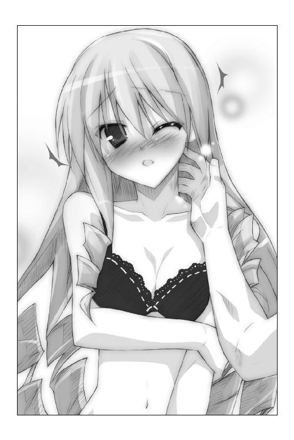
「は......恥ずかしいですの......はぅっ」
首筋をなぞりつつ、もう片方の手で太ももを撫で上げる。
エリスはギュッと拳を握りしめた。ぴくんっぴくんっとカラダを反応させる。
「あぅ... んん...っ どうして......ですの......？」
真っ赤になった顔で、問いかけてきた。
「どうして......触れられただけなのに......。こんなにゾクゾクして......気持ちいいんですの......？ どうして私は......もっと触れて欲しいって思っているんですの......？ こんなの、知らない......っ」
首筋を撫でていた指を、下へと滑らせていく。鎖骨に触れた指先は、やがて小さな膨らみへと達する。
黒いレース地の下着に包まれた胸を見下ろして、
「脱がして、いいか......？」
ちっちゃな子どもみたいに、エリスはコクンと頷いた。
恭太郎は黒いレースに飾られた肩紐に指をかけて、そっと肩から滑らせた――......
×××
テアン島。海賊たちが倉庫として利用していたと言われる洞窟の前。茂みの中。
迷彩柄のカッパを身に纏った二つの小さな人影が、南国の森林に溶け込んでいた。
カルタギア帝国の将軍、ムージとキストである。二将は息を潜めていたのであるが、
ドキドキドキドキドキドキドキドキドキドキドキドキドキドキドキドキドキドキ――。
心臓の音によって居場所が露見してしまうのではないかと心配するくらいに、二人の鼓動は高まってしまっていた。
水滴が葉を揺らす音が響く中、ゴクリとキストの喉が鳴る。目深に被ったフードの下の瞳は洞窟の中に向けられていた。
「（な、なにを生唾飲んでんだよ、キストっ。じっくり見すぎだろっ）」
次第に雨脚が弱まってきた。できるだけ声を潜めてムージが怒鳴る。でも、かく言う彼女も眼帯をつけていない方の瞳は釘付けだった。
《兇竜将軍》と呼ばれ諸国から恐れられている将軍とは思えないほどに動揺した声で、キストは怒鳴り返す。
「（し、仕方ないだろうっ。こーゆーシーンに遭遇したのは初めてなのだっ）」
神来恭太郎と第三王女エリスを追って、キストたちはテアン島へと上陸した。
他の姫たちと離れたのは好都合だ。恭太郎を拉致しようと隙をうかがっていたのだが......大雨が降り出した。二人が雨宿りできる場所を探して駆け出したために見失ってしまったのである。
再び発見した時には、王女と王仕は下着姿になっていて。あれよあれよという間に、濡れ場がはじまってしまったというワケである。
「（情けねえなっ。『私はオトナだ。もう二六だ』とかって怒ってたじゃねえかよっ）」
「（だ、黙れっ。私はずっと軍にいたから、そーゆー経験は皆無なのだ！）」
「（オレだってそうだよっ！ ......わわわ、王仕がブラを脱がそうとしてるぞ！ なんてえっちなヤツなんだ！）」
「（王仕だから当然と言えば当然なのだがな......）」
「（あ、そっか......。それでオレたちはどうすりゃいいんだっ？ チャンスのような気もするけど、邪魔していいのか、これ。終わるまで待ってた方がいいかな？）」
赤髪の将軍は、髪色と同じくらいほっぺを朱に染めていた。
しばらく考えた後で、キストは大きく頷いた。
「（うむ。終わるまで待とう。とてもじゃないが、私には乱入できない。なんていうか、その、恥ずかしいし）」
冷徹で知られる《兇竜将軍》の顔も真っ赤だ。
「（ってことは、最後まで見学するのか。うっひゃー、ドキドキするぜー）」
ムージとキストは草むらの陰で息を潜めた――。
×××
「あん...っ」
なんですの、これは......？ どうして高貴なる私の口から、こんな声が漏れているんですの......？
エリスの意識は朦朧としていた。頭の中にも白いもやがかかってる。視界がぼやけていた。ただ、彼の指先の感触だけが鮮明に感じられる。
最初に王仕の手が肌に触れたときは、くすぐったさしか感じなかったのだけど......。
すぐになにかのスイッチが入ったみたいに、快感に変わった。
触れられるたびに、カラダの奥の方がキュンとする。切なさにも似た快感が走る。
はしたないことだって、頭のどこかでは思っているのに、もっと触って欲しいと願ってしまう。
そう言えば......メルルが『王仕さまとえっちするのって、すっごく気持ちいいんだってさー！』なんて教えてくれましたっけ......。マル秘メモにも『気持ちいいらしい？』と書き込んでありますわ......。あれは本当のことでしたのね......。
恭太郎の指が、ブラジャーの紐に掛かった。
「脱がして、いいか......？」
ダメですわ、そんなの！ 恭太郎なんかに私のハダカを見られるのはイヤですの！ 絶対にイヤっ！ 身の程を知りなさいっ！
そんな言葉が脳裏に浮かぶ。だけど、無意識のうちに小さく頷いていた。
バカバカっ、なにを頷いてますのっ！ このままじゃ全てを見られてしまいますわ！
「もっといろんなところを......触って欲しいですわ......。いっぱい気持ちよくしてくださいまし......」
って、違いますわなんて恥ずかしいことを口走ってますのあわわわわわわわ。
恭太郎の指が右肩のブラ紐を滑らせる。
王仕の指が左肩に伸びた。黒いレース地の紐がゆっくりと二の腕を滑る。
このままブラジャーを下にずらせば、全てが見えてしまう。
ハダカを見られてしまうなんて、恥ずかしい。
恥ずかしいけど、続けて欲しい。やめないで欲しい。
ああもう、自分でもなにを考えているのかわかりませんわ......。
恭太郎の右手が、エリスの胸元へと伸びて――......
「ダメ、だ......!!」
自らの右腕を、王仕は左腕で掴んで止めた。取り憑いた悪霊と戦っているかのように、懸命に自分のカラダを制止しようとしてる。
「こんなことしちゃ......ダメだ......！」
「どうして......やめるんですの......？ 私は魅力がありませんの......？」
正気を取り戻そうとするみたいに、恭太郎はかぶりを振った。
「魅力的だよ......。きみが......エリスが欲しくてたまらない......。だけど、こんなの、よくないよ......」
恭太郎は唇を噛みしめた。額には脂汗が浮いている。
苦しそうに顔をしかめながらも、たった一人の王仕さまは笑顔を浮かべた。
「俺は、エリスを......傷つけたくないんだよ......」
ぞくぅっ――頭の芯が痺れた。
その言葉はどんな愛撫よりも心地よく響いた。
彼の笑顔が愛おしくてたまらない。
なんですの、これは......。ああ、きっとクスリのせいですわね......。そうじゃなければ、恭太郎を愛おしいと感じるハズがありませんもの......。
「くそっ......負けるかよ......！」
半ばエリスにのし掛かっていた上半身を、恭太郎は必死に遠ざけようともがく。彼の温もりも遠のいて、強い切なさを覚えた。
――そのときだ。
「って、見学してちゃダメだろッ！」「危うく目的を忘れるところだった！」
子どもっぽい声が響き渡った。草むらから二つの影が飛び出してくる。
首を巡らせたエリスは、肩が震えるのを感じた。
快感のためではなく、恐怖のために。
「あなたたちは......カルタギアの......！」
「へへっ、久しぶりだな」「このような姿で失礼する」
子どもっぽい二人組がカッパを脱ぎ捨てる。
その二人に、エリスは見覚えがあった。
長い黒髪を持つ黒いローブの少女は――キスト・カラサイシュ。
眼帯をつけた赤髪の少女は――ムージ・トラファルガー。
子どもの姿をとっているが、二人は間違いなくカルタギア帝国の将軍だ。
キストには王宮にまで攻め込まれたことがある。女王陛下にナイフを突き立てる光景が、脳裏にまざまざと蘇る。
「お、おまえたちは......！」
恭太郎は身体をふらつかせながらも、起きあがった。
立て膝をついた状態で二将を睨み付ける。
「よぉ、色男。お楽しみのとこを邪魔して悪かったな」
ムージは赤いレザージャケットも脱ぎ捨てた。タンクトップ一枚となる。
子どもらしい華奢な体躯だったのだが――口の中でボソボソと呪文を唱える。
「【鉄人顕現】」
ビキビキと音を立てて、筋肉が盛り上がっていった。
「《大結界》の中じゃ、五％強化が限界か。ま、いいや。これで十分だろ」
ムージは木の枝に掛かった服を掴んだ。恭太郎のシャツとズボンを、そしてエリスのワンピースを無造作に投げつけてくる。
「ほれ、さっさと着ろよ。目のやり場に困るぜ」
「............」
「睨みつけんなよ。オレはフェアな戦いが好きなんだ。着替え中を襲ったりしねえ」
敵将を見据えながら、恭太郎はズボンに足を通しシャツを羽織った。
漆黒のローブを纏ったキストは手を広げて呪文を唱える。
魔法陣が黒い光と共に展開――その中から体長二メートルほどのワニが出現する。
「神来恭太郎。貴様の身柄を確保させてもらう。無駄な抵抗はするな。できれば、無傷で連れ帰りたい」
帝国の狙いは......恭太郎!?
「......た......戦わなくては......」
慌てて立ち上がろうとしたけれど、頭がクラクラしてうまく動けなかった。上半身を起こし、投げつけられたワンピースをかき寄せるのが精一杯。
「き、来たれ......」
片腕を横に伸ばして、【裁切りの鎌】を呼び出そうとする。
だけど、精神が集中できない。魔法が使えない!!
「ど、どうしたらいいんですの......？」
このままでは恭太郎がさらわれてしまう。
私のせいで......。私が媚薬なんて飲ませてしまったせいで......!!
悔しさと情けなさで、エリスは涙が出そうだった。
「第三王女、エリス・レムリス・トレクワーズ。貴様には用はない。大人しくここで死んでもらおう」
キスト将軍は酷薄な笑みを浮かべる。それに呼応するように、ワニのガラス玉みたいな瞳がエリスの方を向いた。
「――やれ」
ワニが飛びかかってくる。短い足にもかかわらず、凄まじい速度だった。
鋭い牙の並ぶ口を開き、エリスの首もと目掛けて飛びかかって――ガシぃっ!!
ワニの身体が空中で止まった――かのように見えた。
「......させるかよ」
朱塗りの木刀を構えた恭太郎が、エリスを守るように立ちはだかっていた。
ワニの鼻先を打ち据えて動きを止めたのだ。
「エリスは......絶対に傷つけさせない......！」
「熱くなってるとこ悪いけどなあ......」
ツンツンと立っている赤い髪を掻きながら、ムージは歩きながら近づいてきた。
「おまえが魔法が使えないってコトは調べがついてんだ。しかも、フラフラしてんじゃねえかよ。いちいち刃向かって面倒掛けんな」
恭太郎がムージに木刀を向けようとした刹那――隻眼の将軍が消えた。
一瞬で間合いをつめたムージは、凄まじい速度で回し蹴りを入れる。
「......ぐはっ!?」
直後、彼は洞窟の岩壁に叩き付けられていた。
「恭太郎――ッ!!」
×××
背中を強かに打ち付け、恭太郎は息ができなかった。全身の骨がバラバラになりそうだ。
堪えきれず、前に倒れそうになったところで――ずんッ！
鳩尾に鈍い衝撃が走る。赤い髪の将軍が肘を入れていた。
「ぐ......あ......ッッ!!」
速すぎる！ 攻撃を目で追うこともできないなんて......！
「オレは嫌いなんだよ。弱い者いじめってヤツがさ」
ムージはうずくまりそうになった恭太郎の髪を掴んだ。そのまま壁に向かって頭を叩き付ける。幾度も。幾度も。幾度も。
頭の中に火花が散る。激しい痛みに気を失いそうだ。
「それ以上に嫌いなのが、なんの力もないヤツが無様に挑んで来ることだ。強者の前では頭を垂れろよ、少年」
「ムージ、殺すんじゃないぞ」
「わかってるって。軽～く痛めつけてるだけだ。子種さえ残ってりゃいいだろ。つーか、そっちこそさっさと王女を殺せよ」
キストはワニを従えてエリスへと近づいていく。
「い......いや......来ないで......」
へたり込んだまま、エリスは怯えたように後ずさった。
恐怖に耐えきれなくなったように、その場に倒れ伏してしまう。
「気絶したのか。散々我が軍を苦しめたトレクワーズの王女とは思えないな......」
キストはローブの下から剣を抜いた。エリスの首筋に切っ先を向ける。
「女王はし損じてしまった。今度は殺し損ねないように首を刎ねることにしよう」
「やめ......ろ......！ エリスに手を出すな......！」
駆けつけたかったけれど身体が動かない。ムージは小さな手で恭太郎の首を後ろから掴み、壁に押しつけられていたのだ。万力で固定されたようにビクともしない。
隻眼の将軍は満足げに笑う。
「王仕を拉致して、王女を二人片づければカリギュラさまもお喜びだろうな。ようやく汚名を雪げるぜ」
「二人だと......？ どういうことだ!?」
「ハハハ、今頃、《烈火の王女》も死んでるだろうからさ」
烈火の王女――ユフィナのことか!?
「ユフィナに......なにをした!!」
「オレはなにもしてねえよ。ガイルーンが手を下してくれるんだ」
ユフィナはガイルーンとデートするって言ってた。伝説の魔法使いも、カルタギア帝国に味方してるのか!?
「烈火の王女がガイルーンだと思い込んでるのは......うちの技官が作ったゴーレムだよ。精巧に出来た人形なんだ。しかも、中にはたっぷりと爆薬が詰まってる」
「ガイルーンのカタチをした......爆弾......!?」
「ユフィナがガイルーンに触れた瞬間――ドカーン。オレは姑息な手は嫌いだが、派手なのは嫌いじゃない。見てみたかったぜ、烈火の王女が吹っ飛ぶサマをな」
「喋りすぎだぞ、ムージ」
「いいじゃねえかよ。どうせ手出しはできないんだ」
将軍たちのやり取りは、恭太郎の耳には入ってこなかった。
このままじゃ、ユフィナは死んでしまうのか......？
エリスも助けることはできないのか......？
守ってやるって誓ったのに......。
俺は、誰も助けることなんてできないのか......？
......嫌だ。
そんなのは、絶対に、嫌だ!!
キストは剣を振り上げた。
「さらばだ。エリス・レムリス・トレクワーズ」
横たわっているエリスに向けて、刃を振り下ろす――！
「やめろぉぉぉぉ――――――ッ!!」
刹那、目映い閃光が迸った。
「な、なんだ!? うおおおおおおっ!?」
恭太郎を押さえつけていたムージの身体が吹っ飛んだ。洞窟の壁に叩きつけられる。
ゆっくりとキストの方へ向き直り、恭太郎は敵を睨み付けた。
彼の手からは輝く光の刃が伸びていた。
黒髪の将軍は呆然と呟く。
「【光の剣】！ 魔法は使えないんじゃなかったのか!?」
「エリスから離れろ......。手加減なんてできないぞ......」
「小癪な口を利くな！ やれっ！ 王仕の腕を噛み千切れ!!」
キストはワニをけしかけてくる。
噛みつこうと迫ってくるワニに向け、恭太郎は無造作に光の刃を振るう。
ただの一撃で、ワニは消滅した。黒い煙となって消え去る。
「おのれ......！ 男如きに負けるわけにはいかんのだ!!」
剣を構え、凄まじい速度でキストが斬りかかって来た。
恭太郎はもう一度剣を振るった。剣術もなにもない。腕を横に薙いだだけだ。
「うおおおおおおおおおっ!?」
ただそれだけで、まるで津波に呑まれるようにキストが吹き飛んだ。
岩壁に頭を打ち付ける直前、ムージがキストの身体を受け止める。
隻眼の将軍は黒いローブの同僚を肩の上に担ぎ上げて、
「......出直しだな。逃げるぞ」
「放せ、ムージ！ カリギュラさまのご命令に逆らう気かっ!?」
「魔力を封じてるオレたちじゃ勝てねえよ！ 態勢を立て直すんだ。オレは犬死にはごめんだぜ！」
数万という兵を束ねる将軍だけあり、判断は素早い。
ムージはキストを抱えたまま洞窟から飛び出していった。
「エリス、大丈夫か!?」
恭太郎はぐったりと目を閉じているエリスの元へ駆け寄る。
下着姿の王女には傷一つついてなかった。
だが、彼の顔に安堵の色はない。
エリスをワンピースでくるんでやり、そのまま横抱きにした。
敵将を追うように、洞窟から駆け出す。
（ユフィナが危ない......。早く危険を知らせてやらなければ......！）
だけど、どうやって――？
×××
「行くぞっ、しっかりつかまってろよ！」
テアン島の西岸。岩場に隠しておいたボートにキストを放り込んだ。すぐさま魔法駆動のエンジンを作動させる。
スクリューが回転し、滑るように船が走り出した。
幸い風雨はおさまっていたが海は荒れている。激しく揺れるボートの上で、ムージは額に滲む汗を拭った。
「へっ、アイツらのボートは壊しておいて正解だったぜ......」
走り回ったから汗をかいたワケではない。
認めたくはないが、これは冷や汗だ。【光の剣】は凄まじい威力だった。
「強ぇヤツと戦うのは嫌いじゃない。だけど、子どもになった状態で、あんなのと戦いたくはないからな。反則だろ、あれは......」
真面目なキストは絶望的な表情で歯噛みをしている。
「敵前逃亡をするなんて重罪だ。カリギュラさまになんとお伝えすればいいのだ......」
「逃亡じゃねえよ。これは戦略的撤退ってヤツだろ」
「だがしかし......」
「大丈夫だって。ユフィナの方は仕留められるだろう。烈火の王女を殺せば、カリギュラさまも許してくださるさ。二段構えの作戦にしといてよかったな」
そのとき、テアン島の岬に人影が立つのが見えた。
ムージは目を凝らす。
神来恭太郎だ。弓手には光り輝く剣、馬手にはぐったりとした王女を抱えている。
荒れ狂う海、岩壁を打つ波飛沫、閃光の刃、美しい王女――その光景は神話を描いた壁画みたいだとムージは柄にもなく思った。
「ボートが無いから追って来れないみたいだな......」
安堵の息を漏らしたのも束の間、
「おい、待てよ......アイツは、なにをするつもりだ？」
王仕は、光り輝く剣を天高く掲げた。
切っ先を中心に空気が渦巻いているように見える。
風が吹き抜け、恭太郎の髪が乱れた。はだけた白いシャツがマントのように翻っている。
そして――光の剣を勢いよく振り下ろした!!
目映い光が海面を駆け抜けて――
「......うそ、だろ？」
×××
キュアナ領主の屋敷。食堂。
館の主であるドリューが、海産物のたっぷり入ったパスタをもりもり食べていると、メイドが部屋飛び込んできた。
「ドリューさま、大変です!!」
「どうひたんだ、騒々ひい......もぐもぐ......」
「ま、窓の外をご覧ください！ う、海が!!」
「海がどうかしたのか......？」
いぶかしげに眉を顰めたキュアナ領主は、フォークをくわえたまま窓の外を眺める。
――からんっ。
フォークが音を立てて落ちた。
「海が、割れてる......！」
いや、違う。海が干上がったのか？
海底が盛り上がっている部分が海面へと浮き上がり、テアン島から浜へ向かって道のようなものができてる。
だから、海が割れて見えるのだ。
ドリューはこの現象に見覚えがあった。食堂の壁に掛けられた絵に視線を移す。
干上がっていく海と真っ二つに引き裂かれた海賊船。そして、青いローブの魔法使いが描かれている。
そのようすを再現しているかのようだ。
「本当にガイルーンさまがいらっしゃっていたんだな......」
だが、窓の向こうに広がる光景には、青いローブの魔法使いはいなかった。
海賊船は見あたらないが、代わりに一艘のボートが巻き込まれ洋上で転覆している。
と、海に出現した道を駆けてくる人影が見えた。
「あれは......後宮の王仕さまじゃないか！ あのコがコレをやったってのかい!?」
×××
「待ってろよ、今行くからな......！」
そんな声が聞こえてきて、エリスは目を覚ました。
どうやら、お姫さま抱っこ状態で抱き上げられているようだ。
背中と足に回された腕は力強かった。そして、彼の胸板はとても温かい。ずーっと抱きしめて欲しいような、心地よさを感じてしまった。
恭太郎は急いでいるようだ。エリスを横抱きにして走り続けている。
どこへ向かっているんですの――？
敵将はどうなりましたの――？
どうして、私は助かったんですの――？
尋ねようと恭太郎の顔見上げて、エリスは声を上げてしまった。
「恭太郎、ケガをしてますわ......」
額の辺りに血が滲んでいる。
「気づいたんだな。俺は大丈夫だ。これぐらいかすり傷だよ」
恭太郎は速度を落とした。ヤシの木の下にエリスを横たえる。身体をくるんでいたワンピースをそっと掛けてくれた。まるで壊れ物に触れるような優しい扱いだ。
「どうして私たちは助かりましたの？ 敵将はいったい......？」
質問に対する答えは、とてもシンプルだった。
「必死だったんだ。きみを守れて、よかった」
きゅんっ――ココロの奥の方で、奇妙な音を聞いたような気がした。
鼓動が高鳴る。胸が苦しい。呼吸がうまくできない。
「エリス......？」
恭太郎が顔を覗き込んできた。彼の唇が吐息が触れるほどの距離まで近づいてくる。
ああ、わかりましたわ――エリスはココロの中で頷いた。
この私に......ち......ちゅーをしようとしてるんですのね......。
まったく油断も隙もありませんわ。このエリス・レムリス・トレクワーズの唇を奪おうなんて一〇〇万年早いんですのよっ！
......でも。でもでもでもっ。
い、今だけは許して差し上げますわ。特別に！ 今だけですわよ！
これは......そうっ。媚薬がまだ効いているからですのっ。
クスリのせいで、私は恭太郎とキスしたいなんて思っているんですわっ。ぜーんぶクスリのせいなんですからねっ!!
ココロの中で言い訳を並べ立てながら、エリスはそっとまぶたを閉じた。
そっと唇を尖らせる――
だけど、いつまで経っても唇が押し当てられることはなかった。
代わりに声が聞こえてくる。
「なんだ、眠いのか。無事ならいいんだ。そこでゆっくり寝ていてくれ！」
「えええ～～～っ!?」
目を開けた時には、恭太郎は遥か彼方にいた。
砂浜を凄まじい速度で走っていってしまう。
「恭太郎の愚か者――ッ！ この私を弄ぶなんて絶対に許しませんからね――ッ！」
×××
エグリア岬の上には、小さな公園がある。
海に突き出した岬の上を整備し、手すりで囲っただけの簡単なものだ。噴水もなければ遊具もない。あるものと言えば、ベンチが三つと花壇が一つだけ。景色は良いけれど、人気はほとんどなかった。
恭太郎が駆けつけた時、公園には二つの人影しかなかった。
一人は、ユフィナだ。王女さまとは思えないくらいにラフな格好をして、伊達メガネを掛けている。
もう一人は、青いローブを纏ったハンサムな男性――ガイルーンのゴーレムだ。
雨上がりの公園で、二人は見つめ合っていた。
「さあ、行こうか。ユフィナ」
ガイルーンが、ユフィナに向かって手を伸ばす。
「えっ、手を繋ぐんですか？ は、恥ずかしいな......」
顔を真っ赤にして、ユフィナははにかんだように微笑んだ。
幾度もためらいながらガイルーンの手に、ゆっくりと自らの手を重ねようとする。
「ダメだ、ユフィナ――ッ!!」
恭太郎が叫んだのと、ユフィナがガイルーンの手を掴んだのが――ほぼ同時。
「え？ 恭太郎？ どうして、あんたがココに......？ きゃああああっ！」
駆けつけた勢いそのままに、恭太郎はユフィナに抱きついた。
背後ではガイルーンのゴーレムが鼻から煙を噴き出している。
王女を抱きしめて、手すりを飛び越えて、海に向かってダイブ！
「ちょっとなにするのよ恭太郎～～～～～～～～～～～～～っっっ!!」
ユフィナの叫び声は、直後に轟いた爆発音によって掻き消された。
凄まじい爆風が公園を吹き飛ばす。巻き起こる炎が恭太郎の背中を焦がしそうになった。
だが、間一髪、二人は抱き合ったまま海の中へ飛び込んだ。
一瞬、海中から激しい炎が水面を撫でるのが見えた。
厳しい修行を課せられてきた恭太郎は言うに及ばず、近衛騎士団長として水練もこなしているユフィナも泳ぎはうまかった。
着衣のまま器用に泳いで、海面から王女さまは顔を出す。
立ち泳ぎをしながら、ユフィナはこちらを睨み付けてきた。
「どういうつもりなのよ、恭太郎っ！ 私のデートを応援してくれるんじゃなかったの......って、痛っ？ な、なにこれ......？」
上から降ってきたなにかがユフィナの頭にぶつかった。青い布地に包まれた棒のようなものだ。
「ひょ、ひょっとして......ガイルーンさまの腕!? でも、これ――蝶つがいがついてるー！ 人形だったの!? どういうコトなのよ、恭太郎！ 答えなさいよ！ ねえってばー！」
骸骨みたいにプラプラ曲がる人形の腕を手に怒鳴りまくるユフィナ。
彼女の元気な声を聞きながら、恭太郎は海の上で天を仰いだ。
水の上に浮かんだままで、小さく拳を握りしめる。
「よかった......間に合って......」
いつしか雨は上がっており、青空がのぞいていた。
傾きかけの太陽が顔を出し、微かに虹が煌めいている。
南国の海は透き通るように綺麗で、渡る風は心地よかったけれど。
「もうバカンスはこりごりだよ......」
恭太郎は、しみじみと呟くのであった。
×××
カルタギア帝国にある《黒炎城》の最上階。帝王の居室である《黒蓮の座》。
帝国軍を統べる将軍であるキストとムージが遥か高みにある玉座の前で畏まっていた。
二人は魔力の封印を解き、大人の姿に戻っている。
本来のキストは長い黒髪を持つ美女であり、ムージは筋骨隆々たる女丈夫だ。
だが、幽霊を怖がる子どものように恐れおののいていた。
カルタギアの四将軍と呼ばれ、その勇猛さは敵国からは畏怖を、味方からは賞賛を受けている彼女たちである。どんな敵と対峙しても、彼女たちは恐れることはない。敢然と立ち向かっただろう。
しかし、ムージは今すぐにでも逃げだしたかった。これから待ち受けているであろう罰則は、それほどに恐ろしいのだ。肩や足の震えが抑えられない。
遥か高みにある、蓮の花を模した黒い玉座。ベールの向こうから、カルタギア帝国の女帝――カリギュラ・フィンランディア・カルタギアが姿を現した。
床に届くほどの長い黒髪。黒い瞳。意志の強そうなきりりとした眉。ぷっくりした頬。頭にちょこんと載っている王冠。身長一一五センチのチビっこい身体を包んでいるのは、無数のフリルに彩られた漆黒のドレスだ。
皇帝カリギュラは齢八歳を迎えたばかりの、幼女帝なのである。
腕に抱えた黒いトビカピバラのぬいぐるみを撫でながら、カリギュラは凍りついたような声を発した。
「四将軍がうち二星が揃ったというのに......《きょーたろ》の奪取は失敗したらしいな。妾の耳にも既に報告は入っておるぞ......。失敗したときはどのような罰則を受けるか、もうわかっておろうな？」
「お、お待ちください、カリギュラさま」
キストは平伏したまま奏上する。
「《大結界》の内側に住まう王仕を奪取するのは難事にございます。結界内では、我らは思うように力が出せませぬ。今一度......今一度の雪辱の機会をお与えください！」
「よかろう。引き続き、貴様らには《きょーたろ》奪取の任務を与える」
「だったら、《恐怖の一〇八罰》はナシってことですか？」
喜びの声を上げたムージだったが、すぐに絶望を味わうこととなる。
「もちろん罰は受けてもらう。信賞必罰は明らかにすべきだからな」
「それだけはお許しを......！」
キストの必死の願いを一笑に付して、
「貴様らは南国へと出向いていたそうだな。それにちなんで、キストよ。妾の考え出した一〇八罰のうち......今回は《えろ水着》の罰を受けてもらう！」
「え、えろ水着......？」
女帝の指から黒い光が放たれた。
漆黒の閃光に貫かれたキスト将軍の身体から鎧が消え去った。
残されていたのは――ヒモだった。ヒモとしか呼びようのない水着だ！
今にもいろんなものがポロリとしてしまいそうな水着に、キストは悲鳴をあげる。
「ご、ご勘弁ください！ これでは表を歩けませぬ！」
「ならぬ。それで一週間を過ごせ」
「そんな......！」
同僚の悲痛な叫びを聞きながら、ムージはわずかに安堵していた。
ムージはいつも戦場では水着と大差ないような鎧に身を包んでいる。魔法によって増強された筋肉が鎧の代わりとなるのだ。
（よしっ、水着をつけさせられるのなら耐えられるぜ！）
だが、続く女帝の言葉にムージはさらなる絶望の淵へと追いやられた。
「ムージよ。貴様には恐怖の一〇八罰の一つ――《チュチュ》の罰を科す」
「チュチュ!? 南国にちなんでないじゃないですか！」
「ちなんでみたのはキストだけなのだ！」
容赦なく黒い閃光が迸った。
ムージの服装が変化する。筋骨隆々な身体にぴったりとフィットした白いレオタード。腰の周りを覆うヒラヒラと広がったチュチュ。ご丁寧にも軍靴はトゥシューズに変わっていた。
挫折したバレリーナみたいに、ムージはその場に突っ伏して、
「もうダメだ......。オレの威厳は地に落ちた......。部下は誰もついてこねえよ......」
幼女帝は腕に抱いたトビカピバラのぬいぐるみをぎゅーっと抱きしめる。
「キストらを返り討ちにするとは......《きょーたろ》の魔力はさぞや強いのだろう......。《きょーたろ》を手に入れれば悲願たるウィッチェリア大陸制覇も夢ではなくなる......」
恥ずかしい格好となった二人の将軍を睨め付け、女帝は命じる。
「引き続き、《きょーたろ》奪取に尽力せよ！ 手段は問わぬ！」
薄っぺらな胸を反り返らせて、カリギュラは高笑いをした。
「最強の王仕《きょーたろ》とお世継ぎをつくるのは、妾をおいて他はないのだ!!」
エピローグ
「ふんっ！ ふんっ！ ふんっ！ ふんっ！ ふんっ！ ふんっ！ ふんっ！」
夕刻。トレクワーズ王国。後宮。
木立の広がる後宮の裏手で、恭太郎は日課である木刀の素振りをしていた。
キュアナにいたときも別荘の庭で素振りを続けていたのだが、なんとなくこの場所でやる方が落ち着くなと思う。後宮の生活に順応してきているようで、ものすごく嫌だけど。
コホンコホン――後ろから咳払いが聞こえてきた。
正装をしたユフィナが、そっぽを向いて立っている。華やかな白いドレスに身を包み、髪も綺麗に結い上げていた。
素振りをしながら――思う。
なんだかユフィナの顔をちゃんと見るのは久しぶりに感じるな。正確に言うと......二四時間ぶり？ 久しぶりってほどでもないか。
ガイルーン型爆弾が炸裂した直後から、調査などなどが始まって恭太郎もユフィナも協力することとなった（王女さまの暗殺が企てられたんだから当然だよな）。
で。
キュアナから戻ってきたのは、その翌日の朝なのだが、三日間も王宮を空けていたために王女としての公務が彼女を待っていた。
第一王女として他国の使節団に挨拶したり、住民の代表者と会談したり――ユフィナは大忙しとなってしまったんだ。
「いろいろ話したいことがあったんだけどさ。なかなか抜け出せなくて、こんな時間になっちゃったわ」
ユフィナは恭太郎に向かって頭を下げた。
「まずは謝っておくわ。ごめんなさい」
急に謝られて驚いてしまう。素振りをやめて、ユフィナに理由を尋ねてみた。
「作り物のガイルーンさまに、まんまと騙されちゃったでしょ。そのせいで恭太郎も危険に晒しちゃったし......明らかに私の責任よ。考えればおかしなところもいっぱいあったのよ。記憶を失ったって言ってたりさ。気づけなかったのは、私がガイルーンさまに会えたうれしさで浮き足立ってたせいだわ。本当にごめんなさい」
「......仕方ないだろ。憧れの人に会えたなら、誰だって浮かれるよ。でも、これからは気をつけてくれよな」
「ん。わかった」
恭太郎の言葉に気が楽になったように、ユフィナの表情が少しだけ明るくなった。
「......それから、お礼も言っておくわね。恭太郎のおかげで助かったわ。あんたがいなかったら危なかったかもしれない」
「気にするなよ。ユフィナに降りかかる火の粉は払ってやるって約束したからさ。実践したまでだ」
「あんたって、やっぱ結構イイヤツよね。スケベでヘンタイだけどさ」
「俺はスケベでもヘンタイでもないけどな」
そんないつものやり取りの後で、ユフィナは恭太郎に近づいてきた。
ずびしっ――腰に手を当てた第一王女は恭太郎を指さして。
「さあ、次はあんたの番よ！」
「俺の番？」
「謝らなきゃいけないことがあるでしょ？」
「心当たりはないんだけどな......」
「私がデートに行こうって思ったのは、あんたが背中を押したせいなんだからね！」
「って、それは俺のせいにするなよっ！ 決めたのは自分だろ！」
「それからもう一つ、こっちの方が重要よ！ あんたエリスと一緒にいたとき、魔法を使ったらしいわね！ 私が特訓してあげるって言った時は使わなかったくせに！ さてはサボってたんでしょ？」
「違うって！ なぜか急に使えるようになったんだよ！ 今はまた使えなくなってるし」
「はぁ!? ダメじゃない、それじゃ！」
「いや、ダメって言われても......」
「カルタギア帝国は恭太郎を誘拐しようと企んでたらしいじゃない。魔法が使えなきゃ危ないでしょ？ 使いこなせるようになりなさい！ そうと決まれば特訓よ！」
背中に抱きつくみたいに、ユフィナはくっついてくる。
「二度も使ったから、そろそろ感覚はつかめたでしょ？ そのときのこと思い出しつつ、右手を前に突き出して！」
後ろから恭太郎の肘の辺りに手を添えて、腕を前に押してくる。
「お、おい、ユフィナっ」
「手を広げてー！ 背筋を伸ばしてー！ 精神を集中するー！」
「ちょ、ちょっと、背中に――！」
また背中に胸が当たってるんだよっ！ ドキドキしちゃうだろっ！
まったくもうユフィナは警戒心ってものが不足してるよな。それでいて指摘するとキレて襲いかかってくるから対処に困るよ――って冷静に考えてる場合でもないし!? 離れてくれよ、ユフィナ～～～～っ！
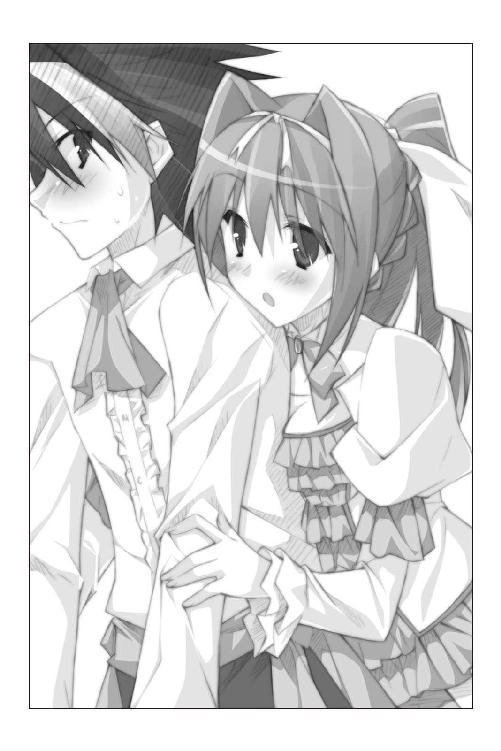
結局のところ。
三日間のバカンスで、恭太郎はなにも変わらなかったと思っている。
――少なくとも俺のスタンスに変化はないよな。
これからも俺は、ユフィナの恋を応援していくんだ。
ユフィナのために。この国の未来のために。そして、自分が元の世界に帰るために。
その間に降りかかる火の粉は、できる限り俺が払ってあげようと思う。
時折微かな胸の痛みを感じるけれど――きっと、なにかの気の迷いだろう。
×××
しかし、恭太郎は気付いていなかった。
以前とは、大きな変化が生じていたことに――。
×××
「うひょひょー。頼むよ、恭太郎！ 今度こそ、えっちな展開に突入してよねっ！」
後宮の窓にへばりついて、トビカピバラと化した王仕さま――アレスタが魔法の練習をしている恭太郎とユフィナを眺めていた。
「おりょりょ？ なにしてるの、アレスタくん」
彼の身体が後ろから抱き上げられる。
黄色いミニスカートのドレスに身を包んだツインテールの王女さま――メルルがアレスタを持ち上げたのだ。
「あ、メルルさま。あのー、どうせならギューッと抱っこしてもらえるとうれしいんですが......」
「こんな感じかな？ えいっ」
「むひょー、たまらんたまらんっ」
「それで、なに見てたの、アレスタくん」
「ユフィナさまと恭太郎が、また魔法の練習をしてるんですよ」
「あ、ホントだ。ユフィナおねえちゃんと恭太郎おにいちゃんって、相変わらず仲いーよねっ♪」
そのとき、後宮の廊下に二つの声が響いた。
「恭太郎さま～？」「恭太郎っ！ どこにいるんですのっ！」
レイシアとエリスが別々の方向から歩いてくる。
「あれれ？ 二人とも恭太郎おにいちゃんに用事があるのかな？」
メルルは満面の笑みを浮かべて手招きをする。
「おねえちゃんたちー、こっちこっちー！ おにいちゃんは裏庭にいるよー！」
双子の姉たちは窓辺に駆け寄ってきた。ガラス窓に貼り付くようにして、ユフィナと一緒に魔法の練習をする恭太郎の姿を見下ろす。
メルルは二人の姉がこんなリアクションを取ると思っていた。
（レイシアおねえちゃんは『仲睦まじいですね。とってもいいことです』ってニコニコするよね。んでんで、エリスお姉ちゃんは『フン』て呆れたみたいにどっか行っちゃうの）
ところが、予想はまったく外れていた。
エリスはクワッと目を見開いたのだ。眉を思いっきり吊り上げてる。
そしてレイシアは、いつも通りの満面の笑顔だけど......額には四つ角みたいに血管が浮いていた。ほっぺがぴくぴくしている。
「どうしたの、おねえちゃんたち？」
「な、なんでもありませんわっ」「ええ、どうもしてませんよ。うふふ」
口ではそんな風に言っていたのに、二人は競うように駆け出していった。
「メルルたちも行ってみようっ」
アレスタを抱えたまま、メルルも姉たちの後を追った。
裏庭では、ちょっとした修羅場が展開していた。
「恭太郎さまっ。魔法の練習でしたら、私もお付き合いいたします。ユフィナお姉さまだけでなくっ」
レイシアは恭太郎の右腕をむぎゅっと抱きしめる。
「わあ、レイシアっ。当たってる！ ものすごく柔らかいものが当たってるよ！」
かと思えば、エリスは恭太郎の左腕をぎゅーっと抱きしめる。
「いいえっ。私が教えて差し上げますわ。このエリス・レムリス・トレクワーズに習えば、魔法なんて簡単に使いこなせますのっ。行きますわよ、恭太郎っ」
「エリスも当たってるよ！ ささやかなわりにしっかりと柔らかいなにかが腕に当たりまくってるってー！」
引っ張り合いをはじめた妹たちを見て、ユフィナは首を傾げる。
「どうしちゃったの、二人とも？」
「わかんないけどぉ......えへへ、メルルも参加しちゃおーっと！」
「わあ、メルルちゃんまでくっついて来るなよ!?」
「ひゃっほーい！ 僕も参加しちゃいますー！ ドサクサに紛れて触っちゃったとしても、それは事故でーす」
「あっちへお行き、エロカピバラっ！」
「ぎゃー、遠投はやめてくださ――もぎゅらばっ!?」
いつもと同じに見えるけれど。
恭太郎と五人のお姫さまたちの関係は、しっかりと変わっていたのである。
その変化はうれしはずかしな波乱へと繋がっていくのだけれど――。
悲しいかな、鈍感な王仕さまは、そのことに気付いてなかった。
「柔らかいものが当たりまくって気持ちよすぎる～......じゃなくて！ 感動してる場合じゃない！ 頼むから放してくれよ～っ!?」
×××
そして、もう一つ。
さらなる波乱の種が萌芽しようとしていた。
王宮。地下。アルトの部屋。
雑多な機械類が並ぶ工房の片隅で、アルトはバカンスに持って行った荷物を解いていた。
王宮付きの女官たちが「私どもにお申し付けください」と言ってくれたけれど、第四王女は丁重に断った。
なぜなら――ドキドキドキドキドキドキ。
緊張しながら、アルトはキュアナに持って行った小さな鞄を開いた。奥底に隠しておいた品物をゆっくりと取り出す。危険な薬品を取り扱っているときのように、アルトの指は震えそうになってしまった。
手の甲でメガネを上げつつ、それをじっと眺める。
メガネのレンズに青い色が妖しく映り込んでいた。
アルトが取り出したのは――青く輝くグラスだ。
「持ってきちゃった......」
エリスが使用した後なのか、井戸端に放置されていたのをアルトが保管しておいたのである。
「これって......きっと《誘惑の聖杯》ですよね」
ピコルの言葉を立ち聞きしてしまって以来、ずっと気になっていたのだ。
なんでも媚薬を作り出す魔法のグラスらしい。
《媚薬》って言葉の意味がよくわからなかったけれど......辞書で調べたら《惚れ薬のこと》って書いてあった。
「これがあれば、恭太郎さまも私のこと......はわゎゎゎゎ～......」
気弱な王女さまは、胸が高鳴ってしまうのを抑えられなかった。
トレクワーズ王国の後宮に住まう、たった一人の王仕さま――神来恭太郎の平穏な日々は、まだまだ遠いようである。
あとがき
毎度ありがとうございます、もしくは初めまして。風見周です。
「周」と書いて「めぐる」と読みます読ませます。覚えておいて頂けると嬉しいです。
さてさて、ちょっとえっちなハーレムラブコメ《Ｈ＋Ｐ―ひめぱら―》も無事に二巻目を迎えることができました。これもひとえにみなさんの応援のおかげでございます！
実を申しますと、今作の執筆は風見周の作家人生において最も体力的にキツいものとなってしまいました。いろいろなトラブルに見舞われたために、スケジュールがかなり厳しくなってしまったのです。短い執筆期間、迫り来る〆切というタイムリミットに煽られつつ、できる限りたくさんのえっちなシーンを詰め込んでみました。楽しんでいただけたら幸いでございます。ぺこり。
ところで、話は全く変わりますが――風見はよく作家仲間に「乙女だなあ」と言われちゃうんですよ。意外にきれい好きだったり、お肌の手入れは欠かさなかったり、ものすごく方向音痴だったり（女性の方が方向感覚は鈍いんだそうです。ホントかな？）。友達が酔っぱらって盛り上がって服を脱いで踊りだしても、私は絶対に脱がなかったり。それら行動から乙女呼ばわりをされてしまうようです。実に心外だ！ 風見の作品を読んでみたまえ、どこが乙女っぽいと言うのかーっ！
しかしながら、そんな風見にも男の子らしい嗜好があったりしまして......。
私はデジタル家電が大好きなんですよ!!
今作執筆中に遭遇したトラブルの一つに『執筆用パソコンの故障』があったりするんですが、「あーもう、新しいパソコン買わなきゃ困ったな～」とか口で言いつつ、新しいパソコン買うのちょっぴり楽しかった！（変態っぽい）
そしてそして！ このあとがきは、うっかり衝動買いしてしまった『ポメラ』っていう携帯型のワープロみたいなマシンで書いてたりします。ボディは小さいのに、折りたたみ式のキーボードがついてて......ああもう、可愛いなあコイツむふふふ（完全に変態です）。
作家仲間には「そんなの買って執筆に使うと思ったの？ バカなの？ 死ぬの？」なんて呆れられてしまいましたが、どうだ見たかー！ ちゃんと使ったぞー！
そんなこんなで紙幅が尽きて参りました。なんとか三巻も出してもらえそうな感じです。次にお会いするのは『ひめぱら③』になるかと思います。さらなるえっちでドキドキな展開になる予定ですので、ぜひぜひ応援してくださいねっ♪
風見周
Ｈ＋Ｐ②
―ひめぱら―
風見 周
平成23年2月3日 発行
発行者 山下直久
発行所 株式会社富士見書房
〒102-8144 東京都千代田区富士見1-12-14
http://www.fujimishobo.co.jp/
(C)2008 Meguru Kazami, Mutsuki Hinata/Fujimishobo